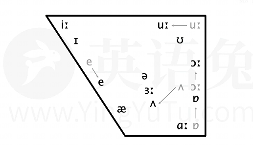
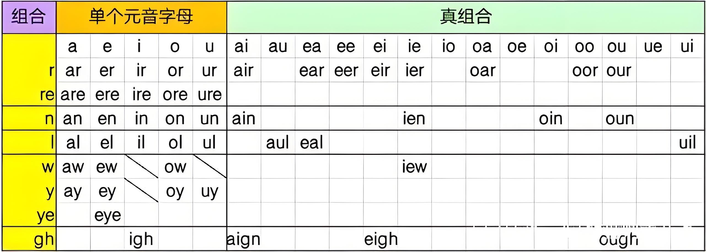

DJ 音标表
| 元音 |
单元音 |
前元音 |
/iː/ |
/ɪ/ |
/e/ |
/æ/ |
|
| 中元音 |
/ɜː/ |
/ə/ |
/ʌ/ |
|
|
| 后元音 |
/ɑː/ |
/ɔː/ |
/ɒ/ |
/uː/ |
/ʊ/ |
| 双元音 |
开合双元音 |
/eɪ/ |
/aɪ/ |
/ɔɪ/ |
/aʊ/ |
/əʊ/ |
| 集中双元音 |
/ɪə/ |
/eə/ |
/ʊə/ |
|
|
| 辅音 |
爆破音 |
清辅音 |
/p/ |
/t/ |
/k/ |
|
|
| 浊辅音 |
/b/ |
/d/ |
/ɡ/ |
|
|
| 摩擦音 |
清辅音 |
/f/ |
/s/ |
/θ/ |
/ʃ/ |
/h/ |
| 浊辅音 |
/v/ |
/z/ |
/ð/ |
/ʒ/ |
/r/ |
| 破擦音 |
清辅音 |
/tʃ/ |
/ts/ |
/tr/ |
|
|
| 浊辅音 |
/dʒ/ |
/dz/ |
/dr/ |
|
|
| 鼻音 |
浊辅音 |
/m/ |
/n/ |
/ŋ/ |
|
|
| 舌侧音 |
浊辅音 |
/l/ |
|
|
|
|
| 半元音 |
浊辅音 |
/j/ |
/w/ |
|
|
|
合口”与“集中”代表的是两嘴型的变化：
- 合口双元音嘴型由半开到合或由开到合
- 集中双元音中嘴型由收圆到半开或始终半开
元音音素（20个）
元音三要素
决定元音的三要素分别为：圆唇度，舌位高低，舌位前后。
-
圆唇度： 即发音时嘴唇有多圆。
-
舌位高低： 即发音时舌头隆起的最高点有多高。
-
舌位前后： 即发音时舌头隆起的最高点有多前。
注意：舌位的前后高低会影响嘴巴的开口度（不是圆唇度），所以口型也是判断元音的间接因素。并不可靠。学习时还是要以舌为主。

/i:/
bee、fee、pea、read、meat、lead
注意舌位更高，嘴角要向两边拉开。
/ɪ/
bit、fit、pit、lit、hit、fish
注意舌位更低，舌尖在下齿后方，比/i:/更放松，嘴角没有那么咧开。
注意区分，它不仅仅是把/i:/的时长缩短，有些美国人发音舌位会更低。
/e/
bed、get、pet、let、met、set
双唇自然张开，口腔放松。舌尖在下牙齿后方，舌面平放
/æ/
bad、fat、pat、lad、mat、sat
最容易读错的音之一，口型一定要张大，饱满，嘴角也要向两边拉伸。舌端在下牙齿后方，同时发出/ɑ:/和/e/这两个音。
美音舌位更高，嘴型更扁，嘴角比英式英语中更向两边咧开。
另外有些在英式英语中发/ɑ:/的音美式也读/æ/，比如：fast、last、glass.
/ɜ:/
her、person、learn、bird、word、fur、urgent
嘴自然张开，唇和舌自然放松，要确保发音时间够长，是重读的长音。
- 如果发音不重读，更短就变成了/ə/ ，在单词中的拼写有er、ear、ir、or、ur等。
- 在美式英语中会r化，写作/ɜ:r/，是美式英语最显著的特征之一。
/ə/
a-about balloon、
e-taken problem、
i-family pencil、
o-memory freedom、
u-supply support、
y-syringe analysis
嘴自然张开,唇和舌都自然放松不要重读,轻轻地让气流冲出声带自然读出重读,变长→/ɜ:/，
- 它是英语中出现频率它是英语最高，最特殊,最重要的schwa(中央元音或中性元音)。
- 让说话者在不需要强调某个音时用它代替，为了在某个音上减少所花时间，弱化成一个中性的默认音。
- 有时候/ə/甚至省略不读。
- 元音的弱读都是变为 /ə/;
- 因为弱读的存在，英语成了【重音等时行语言】；
- 平平无奇一个 /ə/; 侃侃而谈离不得。
/ɑ:/
father、fast、glass、car、park、mark
/ɑ:/的口型比啊更大,发音更靠口腔后部(舌根处)发音，时长要足够长。
/ʌ/
but、hut、must、son、ton、done
舌尖在下牙齿后方，舌头平放发音靠口腔中后方，类似于啊但是口型没有那么大,时长更短，英美发音不同。
美音/ʌ/和中央元音/ə/区别在于：
- /ʌ/只出现在重读音节中，
- 而/ə/只出现在轻读音节中。
两者一般不做舌位上的区分，区别在于是否重读,在美音中的发音不是在口腔中后方，而是在口腔中间，也就说比英音靠前。
/ʊ/
book、look、good、took、bush、would
发/ʊ/时,嘴唇没那么撅，更放松时长更短,发音更靠后。
/ʊ/并不仅仅是把长音/u:/短着读，/u:/的唇形像两边拉开,而/ʊ/唇形更圆,更放松。
/u:/
too、food、loose、prove、moon、soon
/u:/口型没有那么圆,而是更扁,嘴角向两边拉伸，发音部位靠口腔后部。(不要误发成yu)
/ɒ/
top、hot、lot、box、stop、wash
/ɒ/和普通话的凹(ao)相似,但并不相同发/ɒ/时,嘴型更小,时间更短,凹有口型变化，/ɒ/没有。
在美音中一般读作/ɑ:/，也是英式英语和美式英语主要区别之一。
/ɔ:/
caught、bought、law、saw、door、four
嘴唇要撅起来，圆而外凸,肌肉较为紧张，口腔后方发音。
美音中/ɔ/没有英音那样圆形外凸，更靠近汉语拼音ao而不是o，如果这个音后面跟字母r，美音中往往r化。
/eɪ/
make、date、cake、safe、play、plane
/e/和/ɪ/一前一后快速紧密发出，发这个音口腔是有变化的。
/aɪ/
bike、nice、time、lick、site、life
/aɪ/和/ɪ/一前一后快速紧密发出，发这个音口腔是有变化的，口型更加饱满。
/ɔɪ/
boy、toy、soy、voice、noise、moist
/ɔ:/变短后和/ɪ/一前一后快速紧密发出，发这个音口腔是有变化。
/aʊ/
how、cow、allow、house、loud、mouse
/a/和/ʊ/一前一后快速紧密发出，发这个音口腔是有变化的，口型更饱满更长。
/əʊ/
open、hope、post、coat、boat、soap
/ə/和/ʊ/一前一后快速紧密发出，发这个音口腔是有变化的，嘴唇有收缩的，英音的起始音位比美音/oʊ/更靠前。
/ɪə/
area、idea、various、dear、fear、here
/ɪ/和/ə/一前一后快速紧密发出，发音一定要连贯。
请注意,
- 如果是读英音，单词拼写即使出现字母r，单词内部也不会r化，
- 如果是读美音，只有单词内部出现r，才有可能r化。
- 美音中如出现r，则对应读音为/ɪr/；如不出现r，则一样。
- 如果单词内部没有r，则英音美音都是/ɪə/，比如idea。
/eə/
hair、pair、chair、fare、care、dare
/e/和/ə/一前一后快速紧密发出，发音一定要连贯。
/ʊə/
tour、poor、moor、pure、cure、lure
/ʊ/和/ə/一前一后快速紧密发出，发音一定要连贯。
读音在英音中包含/ʊə/的词基本上都包含字母r，在美音中会r化。
辅音音素（28个）
- 辅音音标根据发音时声带是否振动分为清辅音和浊辅音；
- 根据发音方式分为爆破音、摩擦音、破擦音、鼻音、舌侧音和半元音；
- 根据使用的发音部位分为双唇音、唇齿音、上腭音、舌齿音、软腭音和声门音。
- 辅助发音的特点是气流受到发音器官的阻碍。
- 辅音音标不能单独成音，通常和元音结合构成音节。
/p/ /b/
peak beak、
pet bed、
pig big、
rapid rabbit、
lap lab、
speak beak
- 如果p后有元音，比如: peak就是送气音
- 如果p紧跟s，比如: speak就是不送气音
- 如果p后紧跟某些辅音，往往嘴巴闭上就基本完成发音，几乎听不出这个音，比如: trapdoor, help me, leap year，无声除阻音 (也称不完全爆破音)
/ b/是浊辅音，声带振动。
/t/ /d/
tip dip、
tea deep、
test desk、
tap dab、
bat bad、
bet bed
- 如果t后有元音，比如:top就是送气音
- 如果t紧跟s，比如: stop就是不送气音
- 如果t后紧跟某些辅音，嘴巴闭上就基本完成发音；比如: setback, forget me，无声除阻音。
/ d/是浊辅音，声带振动。在美音中，/d /和/t/一样会有闪音的读法: metal≈medal，鼻音也会影响/d/的读音: abandon.
扩展说明
- 在美式英语中，元音之间的字母t(尤其是非重读音节中)，读作闪音，国际音标:[ɾ]，舌尖在上牙齿上方硬腭处，阻挡气流,轻轻—弹比如: water, better, little，在标准英音中仍读作正常t: water, better, little
- 在美式英语中，鼻音/n/之前的t往往读作喉塞音，国际音标:[ʔ]，声门阻住气流，像是把声音"卡在喉咙"里一样比如: certain, important, button，在标准英音中仍读作正常t : certain, important, button
- 在美式英语中，鼻音/n/之后的t往往基本听不见，比如: winter≈winner， interview≈innerview，甚至有的词中, t前后都有鼻音，比如: mountain，在标准英音中仍读作正常t: winter, interview, mountain
/k/ /g/
kit git、
kate gate、
cup gut、
anchor anger、
pick pig、
peck keg
- 如果k后有元音比如:kite，就是送气音
- 如果k紧跟s比如: sky，不送气音，普通话"该"的声母
- 如果k后紧跟某些辅音嘴巴闭上就基本完成，比如: doctor, backdoor, make dinner，无声除阻音。
/g/是浊辅音，声带振动。
/f/ /v/
fat valley、
fit visit、
ferry very、
fest vest、
life drive、
leaf leave
/f/和普通话"夫"的声母，基本一样/v/是"声带振动版"的/f/
/s/ /z/
sip zip、
soon zoom、
soup zoo、
lesson reason、
once lose、
peace please
英语的/s/，/z/都属于所谓摩擦音，不同于爆破音，
/s/和普通话"斯"的声母(汉语拼音s)一样，/z/和/s/很像，区别就在于/z/发音时声带振动。
/θ/ /ð/
three there、
thin that、
thank those、
thigh the、
bath bathe、
breath breathe
和/s//z/一样，属于摩擦音，不同在于舌尖不在上下牙齿后方，而是在上下齿之间，被轻轻咬住，/θ/ /ð/区别在于/ð/需要声带振动。
/ʃ/ /ʒ/
mesh measure、
fresh pleasure、
leash decision、
attention occasion、
shall usual、
shame regime
/ʃ/ /ʒ/属于摩擦音，/ʃ/ /ʒ/区别在于/ʒ/需要声带振动。
/tʃ/ /dʒ/
chuck jug、
chop job、
choke joke、
cheap jeep、
catch page、
pitch college
/tʃ/可以理解为由/t/和/ʃ/构成,爆破音/t/和摩擦音/ʃ/同时发出，声带不振动。
/dʒ/可以理解为由/d /和/ʒ/构成,爆破音/d/和摩擦音/ʒ/同时发出，声带振动，所以也被称作破擦音。
/m/ /n/ /ŋ/
map nap、
met net、
meet neat、
room noon、
tom run、
lime line、
sin sing、
on long、
sun sung
- /m/在元音之前，和普通话"妈"的声母(汉语拼音m)相似。
- 在元音之后，发音方式相似，但只是双唇闭拢发鼻音。
- /n/在元音之前，和普通话"拿"的声母(汉语拼音n)相似/n/要比/m/的舌位高，尤其是舌端部分。
- 在元音之后,发音方式相似，轻微通过鼻子出气。
- /ŋ/和/n/相似,但舌后端抵住软腭，而不像/n/一样舌前端抵住上齿龈。
- 普通话中的后鼻音往往没有英语中那么清晰明显
/h/
hat、hot、high、home、house、him
舌面后部抬起接近软腭，形成缝隙,让气流向外通过,声带不振动。
/j/
yes、yard、yellow、young、yoga、use
- 舌端往上抬向硬腭，与元音/i:/的舌位相似，但是更高一些。
- 气流从舌面和硬腭之间通过，产生摩擦出声，声带振动。
- /j/往往听上去像元音/i:/或/ɪ/，所以又被称作半元音。
- 但是/j/的舌端和硬腭靠得更近，有摩擦的感觉。
扩展必要知识
/j/的省略：
在美式英语中,有些辅音(如/t/，/d/，/n/)后的/j/经常被省略，这个被称作yod-dropping(yod就是/j/)
/j/的融合：
和之前的辅音经常"合在一起读",这个被称作yod-coalescence，在口语中(尤其是英音口语中)常见, "标准"英语一般尽量避免。有的词中,yod-coalescence已成为标准音，如: educate /'edʒukeɪt/、issue / 'ɪʃu:/ 、azure /'æʒə/
yod-coalescence也适用于单词之间，比如:Nice to meet you! Would you do it?
/w/
was、why、wide、wet、we、wood
双唇圈起，向外凸出，气流冲出发音，声带震动，/w/往往听上去像元音/u:/或/ʊ/,所以又被称作半元音，英语w开头的单词基本都是/w/开始。
/r/
rat、red、read、rice、right、room、car、her、ear、bore、tour、pure
- 英音中，当字母r出现在元音之前，双唇突出并圆唇,舌尖上扬，气流从舌面上方滑出,声带振动。发英语/r/的音时，舌尖指向上齿龈。
- 英音中，当字母r出现在元音之后，—般不发音或读作中央元音/ə/
- 如果r出现在单词末尾，而下一个单词以元音开头,则连读时一般读出，比如:bear it、fear us、gear up
美音和英音的区别在于:
当字母r出现在元音之后，字母r往往会让元音r化，
而在英音中则一般不发音或读作中央元音/ə/
/l/
清晰L：lack lake like look lose leak、
模糊L：help mile all girl school full
- 如果l后有元音：舌尖抵住上牙齿后方，让气流从舌两边(两侧)滑出，同时舌尖离开上牙齿后，声带振动，所以/l/被叫做"舌边音"或"舌侧音"（清晰舌边音）
- 如果l后没有元音：舌位和元音前的/l/一致，但是舌尖不离开上牙齿，声带振动（模糊舌边音）模糊L要发到位，否则导致连读时不顺畅，或者没法连读。
- 字母|还有一个版本:不发音，英语中不少单词中的l都是不发音的，比如:calm、palm、salmon、colonel、folk
英音美音发音区别:
有的包含l的词在英式英语和美式英语中发音不同，比如:million, billion, value
/ts/ /dz/
bats bands、dates deeds、kites kids、fights friends、hats hands、lots leads
/ts/可以理解为由/t/和/s/构成。爆破音/t/和摩擦音/s/同时发出，声带不振动。
/dz/可以理解为由/d/和/z/构成，爆破音/d/和摩擦音/z/同时发出，声带振动。
所以这两个音被归类为所谓破擦音(爆破＋摩擦)
/tr/ /dr/
trip drip、true drew、tree dream、try dry、country laundry、pantry hundred
/tr/可以理解为由/t/和/r/构成。爆破音/t/和摩擦音/r/同时发出，声带不振动。
/dr/可以理解为由/d/和/r/构成。爆破音/d/和摩擦音/r/同时发出，声带振动。
所以这两个音被归类为所谓破擦音(爆破＋摩擦)
音节知识
音节（Syllable）是语言中单个元音音素和辅音音素组合发音的最小语音单位，单个元音音素也可自成音节。
划分方法
音节是读音的基本单位，任何单词的读音，都是分解为一个个音节朗读。在英语中元音字母（a e i o u共五个）特别响亮，一个元音音素（音素不是字母）可构成一个音节，一个元音音素和一个或几个辅音音素结合也可以构成一个音节。
辅音中的三个响音（成音节）
一般说来，元音音素可以构成音节，辅音音素不响亮，不能构成音节。但英语辅音音素中有 3 个辅音[m]，[n]，[l]是响音，它们和辅音音素结合，也可构成音节。它们构成的音节往往出现在词尾，一般是非重读音节。
音节-单音节-多音节-如何划分音节？
英语的词有一个音节的，两个音节的，多个音节的，一个音节叫单音节词，两个音节叫双音节词，两个音节以上叫多音节。如：
- take 拿是单音节词；
- 'ta-ble 桌子是双音节词；
- po-'ta-to马铃薯， 多音节词。
- po-pu-'la-tion 人口，多音节词。
- con-gra-tu-'la-tion 祝贺，多音节词。
- te-le-com-mu-ni-'ca-tion 电讯 多音节词。
音节的核心是元音，元音可以单独构成音节，也可以与辅音音素一起构成音节。
take词尾的e并未发音，所以都是单音节词。
注意，不要将元音和元音字母搞混。划分音节是按元音来划的，如果元音字母不发音，那就不能构成音节了。如果有两个元音字母在一起，但只发一个元音，仍然算一个音节。
元音音素是构成音节的主体，辅音是音节的分界线。
- 每个元音音素都可以构成一个音节，如：bed 床，bet 打赌。
- 两个元音字母在一起可以构成一个音节，如：seat 坐位，beat 毒打，beaut 极好的 beau'ty 美。
- 两元音音素之间有一个辅音音素时，辅音音素归后一音节，如：stu'dent 学生，la'bour 劳动，fa'ther 父亲，tea'cher 教师（th和ch为字母组合，th发/θ/或者/ð/，ch发/tʃ/）。
- 有两个辅音音素时，一个辅音音素归前一音节，一个归后一音节，如： win'ter 冬天 Oc'tober 十月 Sep'tember 九月。
音节划分方法详解
一靠后，二分手，多个中间偏左右；
组合字母算一个，常见组合要遵守；
词尾看e加音节，发音不发分两种；
双字相连不连手，听音验证最后头，解释意外不发愁。
一靠后
当两个元音字母之间有一个辅音字母时，一般把它划分给后面的音节当头。
如：a—go，be-gin，a-bout，chi-na，wa-ter，ma—ny，rea—son，la-ter，a-bi-li-ty，ne-ver，ar-gue，na-tive，hea-vy。
二分手
当两个元音字母之间有两个辅音字母时，一般把它们分开，一边一个。
如：in-side,dif-fet，com-mon，at-tach，can-not，num-bet，prob-lem，doc-tor，com-pare，treat-ment，af-ter。
多个中间偏左右
当两个元音字母之间有三个以上辅音字母时，中间的辅音字母要么划分给前面的音节当尾，要么划分给后面的音节当头。
如：in-stead，suc-cess-ful，tran-sport，in-clude，im-prove，con-gress。
组合字母算一个
组合字母指的是固定组合字母，它们组合后发一个音，在划分音节时一般被当成一个字母看待。
如：re-try，o-ther，con-tract，as-tro-no-my，cen-tral，tech-no-lo-gy，quick-ly。
常见组合要遵守
英语里有一些字母常常组合在一起，但它们不像固定组合字母那样发一个音，而是各发各的音。
如：pr，pl，fr，cl，sp，st，sk，scr，gr等等，这类组合字母在划分音节时一般不拆开，把它们划分在一起，尊重它们的常见组合习惯。
再有，英语里有一些“发音独立的词头词尾”。
如re-.de-，com-，con等，它们在划分音节时一般也都当成常见组合看待，划分音节时不拆开。如单词restart，是由词头re和单词start组合出来的，划分音节时划分成re-start。
但英语里有些“需要发音合并的词头词尾”。
如词尾-able，-al，-ate等，它们的第一个元音字母本身就是用来与别的单词尾巴上的辅音字母合并成音节的，这种情况可以做音节合并，如read和-able连接时，划分成rea—dable。person和al连接时，划分成per—so—nal。
词尾看e加音节，发音不发分两种
单词尾加er、est、ing等第一个元音字母肯定发音的词尾时
通常增加一个音节，并且把单词尾的辅音字母“抢”过来当音节头。如 Smal-ler，smal-lest，lon-ger，lon-gest，li-ving，wa-tching。
单词尾加s、es、d、ed这四个词尾时
要看e增加音节:
- 若e需要发音间隔则增加一个音节;
- 若e不需要发音间隔则不增加音节。
详解：
- s，x，z，ch，sh连es时，因为e两边的字母发音相同或太相近，需要e发[ɪ]来间隔，并增加音节
- t，d连ed时，也因为e两边的字母发音相同或太相近，需要e发[ɪ]来间隔，并增加音节
- 其他情况下e不发音，不增加音节。
需要e发音并增加一个音节的举例：
- nose加s成为noses，e发[i:]来间隔两个s的发音;
- box加es成为boxes，e发[i:]来间隔x和s的发音;
- size加s成为sizes，e发[i:]来间隔z和s的发音：
- branch加es成为branches，e发[i:]来间隔ch和s的发音;
- wash加es成为washes，e发[[i:]来间隔sh和s的发音;
- create加d成为created，e发[i:]来间隔t和d的发音;
- regard加ed成为regarded，e发[i:]来间隔两个d的发音。
不需要e发音并且不增加音节的举例：
- work加ed成为worked，k、d发音差别明显，不需要e间隔;
- like加s成为likes，k、s发音差别明显，不需要e间隔;
- live加s成为lives，v、s发音差别明显，不需要e间隔：
双字相连不连手
英语里有很多单词是由两个单词连起来构成的，如，rest-room，it-self，how-ever这种情况下两个单词一般分开发音，不合并。若两个单词的头尾相接字母是字母表里的固定组合字母，如 rest-room中间的tr，it-self中间的ts，一般也要拆开发音，不合并。
有声验证最后头，解释意外不发愁。
一个单词有时会有多种音节划分方案，并且哪一个方案都合理，难以判断哪一个正确，这时候就要“尊重历史习惯”，听一听单词的声音(或参看一下字典上的近似音标)，看英语习惯上选择什么发音。若听到的声音与自己推测的结果不一样，就一定要用上面的“音节划分口诀”对出乎意料的声音进行解释，使它也变成意料之中。
成音节介绍
在语音学里，一个音节通常要有一个元音，一般情况是由一个元音加上一个或多个辅音构成。
但是有些辅音比较特殊，这些辅音通常比较响亮，可以和其他的辅音构成一个音节，在音标中以这样的畏音结尾的音节就叫做成音节。
在英语中，一个单词结尾音节中如果无发音的元音字母或元音字母也不发音，而由l、m或n来充当元音字母，那么这个音节就叫做成音节(syllabic consonant)。
/m/，/n/，/l/和辅音音素结合构成音节，构成的音节往往出现在词尾，且处于非重读音节。
下面例出/m/，/n/，/l/三个音标构成的成音节单词例词，多加练习。
“辅音+/l/”构成的成音节
1）ple,pil字母组合构成/pl/音节
- apple /'æpl/ n. 苹果
- example /ɪg'zɑːmpl/ n. 例子
- purple /'pɜːpl/ n. 紫色
- people /'piːpl/ n. 人
- couple /'kʌpl/ n. 对
- pupil /'pjuːpl/ n. 学生
2）ble字母组合构成/bl/音节
- table /'teɪbl/
- possible /'pɒsɪbl/ adj. 可能的
- vegetable /ˈvedʒtəbl/ n. 蔬菜
- double /'dʌbl/ n. 两倍
- trouble /'trʌbl/ n. 麻烦
- rubble /'rʌbl/ n. 碎石
3）tle,tal字母组合构成/tl/音节
- title /'taɪtl/ n.标题
- little /'lɪtl/ adj. 小的
- hospital /'hɒspɪtl/ n. 医院
- capital /'kæpɪtl/ n. 首都
4）dle,dal字母组合构成/dl/音节
- candle /'kændl/ n. 蜡烛
- poodle /'puːdl/ n. 狮子狗
- middle /'mɪdl/ adj. 中间的
- medal /'medl/ n. 勋章
- tidal /'taɪdl/ adj. 潮汐的
- sandal /'sændl/ n. 凉鞋
5）cle,cal字母组合构成/kl/音节
- article /'ɑːtɪkl/ n. 文章
- physical /'fɪzɪkl/ adj. [物] 物理的
- typical /'tɪpɪkl/ adj. 典型的
6) gle字母组合构成/gl/音节
- angle /'æŋgl/ n. 角度
- single /'sɪŋgl/ adj. 单一的
- joggle /'dʒɒgl/ vt. 啮合
7）ful字母组合构成/fl/音节
- beautiful /ˈbju:tɪfl/ adj. 美丽的
- careful /ˈkeəfl/ adj. 仔细的
- wonderful /ˈwʌndə(r)fl/ adj. 极好的
- youthful /'juːθfl/ adj. 年轻的
8）val,vel字母组合构成/vl/音节
- approval /ə'pruːvl/ n. 批准
- interval /'ɪntəvl/ n. 间隔
- festival /ˈfestəvl/ n. 节日
- travel /'trævl/ vi. 旅行
- gravel /'grævl/ n. 碎石
- novel /'nɒvl/ adj. 新奇的
9）mal,mel字母组合构成/ml/音节
- animal /'ænɪml/ n. 动物
- camel /'kæml/ n.骆驼
- pommel /'pʌml/ n. （刀剑柄）圆头
- informal /ɪn'fɔːml/ adj. 非正式的
10）nal字母组合构成/nl/音节
- final /'faɪnl/ adj. 最终的
- traditional /trə'dɪʃnl/ adj. 传统的
- coronal /kə'rəʊnl/ adj. 冠状的
11）cil字母组合构成/sl/音节
- pencil 'pensl n. 铅笔
- council /'kaʊnsl/ n. 委员会
- stencil ˈstɛnsl n. 漏字板
12）cial字母组合构成/ʃl/音节
- special /'speʃl/ adj. 特别的
- official /əˈfɪʃl/ adj. 官方的
- social /ˈsəʊʃl/ adj. 社会的
“辅音+/n/”构成的成音节
1）tain,ten字母组合构成/tn/音节
- Britain /'brɪtn/ n. 英国
- written /'rɪtn/ adj. 书面的
2）den字母组合构成/dn/音节
- garden /'gɑːdn/ n. 花园
- golden /ˈgəʊldn/ adj. 金色的
- redden /'redn/ vi. 脸红
- sodden /'sɒdn/ adj. 浸透的
3）ften字母组合构成/fn/音节
- often /'ɒfn/ adv. 常常
- soften /'sɒfn/ vt. 使温和
4）ven字母组合构成/vn/音节
- seven /'sevn/ num. 七个
- woven /'wəʊvn/ v. 编织
- haven /'heɪvn/ n. 港口
- eleven /ɪ'levn/ n. 十一
5）son,sten,cine字母组合构成/sn/音节
- person /'pɜːsn/ n. 人
- listen /'lɪsn/ vi. 听
- medicine /ˈmedsn/ n. 药
6）son,sin字母组合构成/zn/音节
- reason /'riːzn/ n. 理由
- poison /'pɒɪzn/ n. 毒药
- cousin /'kʌzn/ n. 堂兄弟姊妹
- raisin /'reɪzn/ n. 葡萄干
7）cian,sian,tien,tion字母组合构成/ʃn/音节
- musician /mjuː'zɪʃn/ n. 音乐家
- Asian /ˈeɪʃən/ n. 亚洲人
- patient /'peɪʃnt/ n. 病人
- direction /dɪˈrekʃn/ n. 方向
“辅音+/m/”构成的成音节
大多由/zm/构成成音节
- realism /'rɪəlɪzm/ n. 现实主义
- rhythm /'rɪðm/ n. 节奏
- communism /'kɒmjʊnɪzm/ n. 共产主义
- modernism /'mɒdnɪzm/ n. 现代主义
- optimism /'ɒptɪmɪzm/ n. 乐观
- pessimism /'pesɪmɪzm/ n. 悲观
辅音组合
辅音组合（volvo team ）包括，二合辅音digraphs,辅音连缀blends两种。
通常不讨论尾辅音，只讨论首辅音。因为首辅音连缀如果不梳理，就障碍拼词（看着词但开不了口），而尾辅音连缀不会障碍拼词（声母拼韵母），其次尾辅音连缀变化莫测，规律性弱。
digraph二合辅音
两个或两个以上辅音字母合起来后只读一个音。
辅音+h :语音本身导致只读一个音：
sh she/should
ch check/change
th the/there
ph phone/photo
gh /g/f/ ghost
其他情况：语言史原因造成只读一个音
sc1 /s/ science/scene
wr /r/ write/wrong
kn /n/ knife/know
wh /w/h/ who/what
blends辅音连缀
发音的时候两个辅音音素结合在一起出现的现象，合起来仍读两个音素。tr, dr, tw, qu融合度较高，读起来似一个音。
辅音+r
br/brick
cr/crazy
fr/from
phr/phrase
tr/true
dr/dream
pr/pretty
gr/great
scr/screen
str/strong
spr/spread
thr/three
辅音+w
qu/queen
tw/twice
sw/sweet
辅音+n
sn/snake
辅音+l
bl/black
cl/clock
fl/fly
gl/glass
pl/please
sl/sleep
s+辅音
sm/smoke
sk/skin
st/still
sp/speak
sch/school
squ/square
sc1/score
元音组合
两个或两个以上元音或半元音组合一起出现的现象，有三大类和七小类。
1、真组合
即五个元音字母两两组合
2、元辅组合
即五个元音字母或者真组合与辅音字母组成的元音组合；包括四小类：
r族组合：（*r/**r/*re）
n族组合：（*n/**n）
l族组合：（*l/**l）
gh组合： （*gh/**gh）
3、准元辅组合
包括三小类：
w组合：（*w）
y组合：（*y）
ye组合：（*ye）

自然拼读
单个辅音字母的常见发音
| 字母 | 字母读音 | 常见发音 | 例词 |
| b | /biː/ | /b/ | Bob |
| c | /siː/ | /s; k/ | city,cat |
| d | /diː/ | /d/ | dad |
| f | /ef/ | /f/ | fifty |
| g | /dʒiː/ | /dʒ; g/ | gem, good |
| h | /eɪtʃ/ | /h/ | hi |
| j | /dʒeɪ/ | /dʒ/ | just |
| k | /keɪ/ | /k/ | kick |
| l | /el/ | /l/ | lily |
| m | /em/ | /m/ | mom |
| n | /en/ | /n;ŋ/ | noon,thanks |
| p | /piː/ | /p/ | pop |
| q | /kjuː/ | /k/ | quit |
| r | /ɑː(r)/ | /r/ | red |
| s | /es/ | /s;z/ | sister,his |
| t | /tiː/ | /t/ | tint |
| v | /viː/ | /v/ | vivid |
| w | /'dʌbljuː/ | /w/ | we |
| x | /eks/ | /ks;gz/ | six,exam |
| y | /waɪ/ | /j/ | yes |
| z | /ziː/ | /z/ | zoo |
辅音字母组合的常见发音
| 辅音组合 | 字母读音 | 例词 |
| ch | /tʃ;k/ | chair,school |
| ck | /k/ | back |
| dg | /dʒ/ | bridge |
| sh | /ʃ/ | ship |
| th | /θ; ð/ | think, this |
| ng | /ŋ/ | song |
| ph | /f/ | phone |
| wh | /w/ | what |
| gh | /g/ | ghost |
| gn | /n/ | gnome |
| kn | /n/ | know |
| mb | /m/ | climb |
| mn | /m/ | autumn |
| ps | /s/ | psychology |
| rh | /r/ | rhyme |
| wr | /r/ | write |
| shr | /ʃr/ | shrine |
| spl | /spl/ | splash |
| spr | /spr/ | spring |
| tch | /tʃ/ | watch |
单个元音字母的常见发音
| 字母 | 重读开音节 | 重读闭音节 | 重读r音节 | 重读re音节 | 非重读音节 |
| a | /eɪ/
(cake,name) | /æ/
(cat,map) | /ɑː/
(far,star) | /eə/
(care,prepare) | /ә;ɪ/
(orange) |
| e | /iː/
(see) | /e/
(bed,desk) | /ɜː/
(term,prefer) | /ɪə/
(here,severe) | /ә;ɪ/ |
| i | /aɪ/
(bicycle,private) | /ɪ/
(pig,fish) | /ɜː/
(girl,first) | /aɪə/
(admire,desire) | /ә;ɪ/ |
| o | /әʊ/
(hope,note) | /ɒ/
(dog,stop) | /ɔː/
(for,short) | /ɔː/
(store,more) | /ә/ |
| u | /juː/
(huge,use) | /ʌ;ʊ/
(sun,nat,put,full) | /ɜː/
(burn,turn) | /jʊә/
(pure) | /ә/ |
元音字母组合的常见发音
| 字母组合 | 常见发音 | 例词 |
| ai | /eɪ/ | rain |
| al | /ɔː/ | all,ball,call,small,talk,walk |
| ay | /eɪ/ | bay |
| ea | /iː,e/ | beat,please,easy/head,bread,sweater |
| ee | /iː/ | bee |
| еу | /eɪ/ | they |
| ie | /iː/ | chief |
| oa | /әʊ/ | boat |
| oe | /әʊ/ | toe |
| oo | /uː;ʊ/ | boot; good |
| ou | /aʊ/ | about |
| oi | /ɔɪ/ | noise |
| oy | /ɔɪ/ | boy |
| ue | /uː/ | blue |
| ui | /uː/ | fruit |
自然拼读发音补充
字母 a 在单词中发 /ɒ/ 音的情况
- 在 wh 之后：what
- 在 w 之后：watch,wander;但 water、wave、wake 不遵守
- want、wash
aw和au的发音
- /ɔː/ claw awful awkward dawn awe
ear 的发音
- /ɪə/ clear,near,hear,dear
- /eə/ bear,pear,wear
ie 的发音
- /iː/ field,piece,believe
- /aɪ/ pie,tie,die,lie
- 不发音 friend
ex 的发音
- 重读，次重读：/eks/ exercise,execute,excellant
- 轻音，后面是元音：/ɪɡz/ example,exact,exam
- 轻音，后面是辅音：/ɪks/ exchange,expect,excuse
-ed 的发音
- 在清辅音结尾的动词后 /t/ : missed, walked, reached, laughed
- 在浊辅音结尾的动词、元音读音结尾后 /d/ : screamed, lived, traveled, followed, enjoyed, played, tried, continued
- 在t, d 结尾的动词后 /id/: recommended, boarded, wanted, admitted
-es 的发音
- 在清辅音后 /s/: books
- 在浊辅音和元音后 /z/: pigs,trees
- 在 t,d 后与前面的字母连起来一起读/ts/、/dz/: cats，beds
- 在/s/z/ʃ/ʒ/dʒ/tʃ/后发/iz/:buses,blouses,boxes,bridges,watches
o 的发音
- 在 m,n,th,v 前发/ʌ/音：come,month,monther,monday,love,som,brother
ou 的发音
- /aʊ/ about
- /uː/ soup,group
- /ɒ/ cough,thought
- /ʌ/ couple
ow 的发音
- /aʊ/ brown,how,now (多在词中)
- /əʊ/ show,yellow,know (多在词尾)
u 的发音
- 重读开音节，在j,l,r,s后的发音/uː/：june,rule
以ce 结尾
- /s/ 音：space,price,experience
wh 的发音
- 后跟 o字母时:/h/ who,whom,whole,whose
- 后不跟字母o时:/w/ what,where,which
pre 的发音
- 轻音：前缀（在...之前，预先）:/prɪ/ prepare,prevent
- 重音: /pre/ president,pressure
-tion 的发音
- 在s之后：/tʃən/ question,suggestion
- 其他： /ʃn/ situation,nation,invitation
-cial 的发音
-sion 的发音
- 前面是元音：/ʒn/ television
- 前面是辅音：/ʃn/ mission,session
-true 的发音
sure 的发音
- 重读 /ʃʊə/ sure,insure,assure,coinsure
- 轻音，元音后 /ʒə/ measure,pleasure
- 轻音，辅音后 /ʃə/ fissure,pressure,tonsure
第一个音节重音
- Africa n.非洲 ['æfrɪkə]
- Alabama 阿拉巴马州（美国） ['ælə'bɑ:mə]
- Alex 亚历克斯（男名） ['æleks]
- Alice in Wonderland 《爱丽丝梦游仙境》 ['wʌndə(r)lænd]
- Allen 艾伦（姓） ['ælən]
- Animal Helpline 动物保护热线 ['helplaɪn]
- April n.四月 ['eɪprəl]
- Asia n. 亚洲 ['eɪʒə], ['eɪʃə]
- Asian adj.亚洲的；亚洲人的，n.亚洲人 ['eɪʃ(ə)nˌ'eɪʒ(ə)n]
- August n.八月 ['ɔːɡəst]
- British 英国的；英国人的 ['brɪtɪʃ]
- Canada n.加拿大 ['kænədə]
- Cathy 凯茜 （女名） ['kæθi]
- China 中国 ['tʃaɪnə]
- Christmas 圣诞节 ['krɪsməs]
- Claudia 克劳迪娅（女名） ['klɔ:diə], ['klaʊdiə]
- Disneyland 迪斯尼乐园 ['dɪznilænd]
- Donald Duck 唐老鸭 ['dɒnəld] , ['dɑ:nəld]
- Easter 复活节 ['i:stə(r)]
- Edmund Hillary 埃德蒙·希拉里 ['edmənd] ['hɪləri]
- English n.＆adj.英语;英格兰的;英语的 ['ɪŋglɪʃ]
- Europe n.欧洲 ['jʊərəp]
- February n.二月 ['februəri]
- German adj. 德国的; 德语的; 德国人的n. 德语; 德国人 ['dʒə:(r)mən]
- Germany 德国 ['dʒɜːməni]
- Harry Potter 《哈利·波特》 ['pɒtə(r)], ['pɑ:tər]
- Indian adj.印度的 n. 印度人 ['ɪndiən]
- Internet n.(国际)互联网;因特网 ['ɪntənet]
- January n.一月 ['dʒænjuəri]
- Junko Tabei 田部井淳子 ['dʒu:ŋəʊ] [tɑ:'beɪ]
- London 伦敦 ['lʌndən]
- Martin Luther King 马丁·路德·金 ['mɑ:(r)tɪn] ['lu:θə(r)] [kɪŋ]
- Monday n.星期一['mʌndeɪ]_
- Mr. (用于男子的姓氏或姓名前)先生 ['mɪstə]
- Mrs. (用于女子的姓氏或姓名前)太太;夫人 ['mɪsɪz]
- Nashville 纳什维尔（美国田纳西州府） ['næʃvɪl]
- National Science Museum 国家科学博物馆 ['næʃnəl]
- Oliver Twist 《雾都孤儿》 ['ɒlɪvə], ['ɑ:lɪvə] [twɪst]
- Qomolangma 珠穆朗玛峰 ['tʃəʊməʊ,lɑ:ŋmə]
- Robinson Crusoe 《鲁滨逊漂流记》 ['kru:səʊ]
- Russian adj.&n.俄罗斯的;俄罗斯人;俄语 ['rʌʃn]
- Sandy 桑迪（女名） ['sændi]
- Survey 调查 ['sɜːveɪ]
- T-shirt n.T恤衫 ['tiːʃɜːt]
- Taylor 泰勒 （姓） ['teɪlə(r)]
- Tenzing Norgay 丹增·诺尔盖 ['tenzɪŋ] ['nɒrgeɪ]
- Tom Sawyer 《汤姆·索娅历险记》 ['sɔ:jə(r)]
- Western adj. 西方国家的; （尤指）欧美的; 西方的(w可以小写) ['westə(r)n]
- X-ray n. X射线;X光 ['eks reɪ]
- able adj.能够 ['eɪbl]
- absent 缺席；不在 ['æbsənt]
- accident n.（交通）事故; 意外遭遇 ['æksɪdənt]
- action n.行动 ['ækʃ(ə)n]
- active 活跃的；积极的 ['æktɪv]
- actor n.演员 ['æktə]
- actually adv. 真实地; 事实上 ['æktʃuəli]
- adult adj. 成年的; 成人的 n. 成人; 成年动物 ['ædʌlt], [ə'dʌlt]
- after prep.conj.在……以后 ['ɑːftə]
- afternoon n.下午 ['ɑːftə'nuːn]
- agent n.代理人;经纪人 ['eɪdʒənt]
- airport n. 机场 ['eəpɔːt]
- almost adv.几乎;差不多 ['ɔːlməʊst]
- also adv.也;而且 ['ɔːlsəʊ]
- always adv.总是 ['ɔːlweɪz]
- ancient adj. 古代的; 古老的 ['eɪnʃənt]
- angry adj.发怒的;生气的 ['æŋgri]
- animal n.动物 ['ænɪml]
- answer n.&v.答案;回答 ['ɑːnsə]
- any adj.&pron.任何的;任一的;任何;任一 ['eni]
- anything pron.(常用于否定句或疑问句)任何东西;任何事物 ['enɪθɪŋ]
- anyway adv. 而且; 加之 ['eniweɪ]
- anywhere adv.在任何地方 [ˈeniweə(r)]，['eniwer]
- apple n.苹果 ['æpl]
- area n. 地域; 地区 ['eəriə] , ['eriə]
- argue v. 争吵; 争论 ['ɑ:(r)gju:]
- army n.陆军;陆军部队 ['ɑːmi]
- article n.文章;论文 ['ɑːtɪk(ə)l]
- artist n.艺术家 ['ɑːtɪst]
- astronaut n.宇航员;航天员 ['æstrənɔːt]
- attitude n. 态度 ['ætɪtjuːd]
- autumn n.秋天;秋季 ['ɔːtəm]
- average adj. 平均的 ['ævərɪdʒ]
- awful 很坏的；讨厌的 ['ɔːfl]
- baby adj.&n.幼小的;婴儿 ['beɪbi]
- background 背景 ['bækɡraʊnd]
- backpack 背包；旅行包 ['bækpæk]
- badly adv.严重地；差；非常 ['bædli]
- badminton n.羽毛球运动 ['bædmɪntən]
- bandage n. 绷带 v. 用绷带包扎 ['bændɪdʒ]
- banker n.银行家 ['bæŋkə(r)]
- baseball n.棒球 ['beɪsˌbɔːl]
- basic 基本的 ['beɪsɪk]
- basic 基本的；基础的 ['beɪsɪk]
- basket 篮；筐 ['bɑːskɪt]
- basketball n.篮球 ['bæskɪtbɔːl]
- bathroom 浴室；洗手间 ['bɑːθruːm]
- beauty n. 美; 美丽 ['bju:ti]
- bedroom n. 卧室 ['bedru:m]
- better adj.&adv.(good和well的比较级)较好的(地);更好的(地) ['betə]
- bicycle n.自行车;脚踏车 ['baɪsɪkl]
- birthday n.生日 ['bɜːθdeɪ]
- biscuit 饼干 ['bɪskɪt]
- blackboard 黑板 ['blækbɔːd]
- blender n.食物搅拌器 ['blendə]
- body n.身体 ['bɒdi]
- bookcase n.书架;书柜 ['bʊkkeɪs]
- boring adj.没聊的;令人厌倦的 ['bɔːrɪŋ]
- borrow v. 借; 借用 ['bɒrəʊ], ['bɑ:rəʊ]
- bottle 瓶；瓶子 ['bɒtl]
- bottom 底部；最下部 ['bɒtəm]
- breakfast n.早餐;早饭 ['brekfəst]
- broken adj. 破损的; 残缺的 ['brəʊkən]
- brother n.兄;弟 ['brʌðə]
- building n.建筑物;房子 ['bɪldɪŋ]
- burger (=hamburger) n.汉堡包['bɜːɡə(r)]
- burial 埋葬；安葬 ['berɪəl]
- burning adj. 着火的；燃烧的 ['bɜːnɪŋ]
- business n. 商业；生意 ['bɪznɪs]
- busy adj.忙碌的;无暇的 ['bɪzi]
- butter n.黄油;奶油 ['bʌtə]
- butterfly n.蝴蝶 ['bʌtəflaɪ]
- cabbage n.卷心菜;洋白菜 ['kæbɪdʒ]
- calendar n.日历;日程表 ['kælɪndə]
- camera n. 照相机; 摄影机; 摄像机 ['kæmərə]
- cancel v. 取消；终止 ['kænsl]
- candle n.蜡烛 ['kændl]
- candy n.糖果 ['kændi]
- cannibal n. 食人肉者 ['kænɪbl]
- capital 首都 ['kæpɪtl]
- capital 首都；国都 ['kæpɪtl]
- careful adj.小心的;细致的;精心的;慎重的 ['keəfl]
- carefully adv.细致地;小心地;谨慎地 ['keəfəli]
- caring adj. 体贴人的；关心他人的 ['keərɪŋ]
- carrot n.胡萝卜 ['kærət]
- carry v. 拿; 提; 扛 ['kæri]
- celebrate v.庆祝;庆贺 ['selɪbreɪt]
- central 中心的；中央的 ['sentr(ə)l]
- century n. 百年; 世纪 ['sentʃəri]
- certain adj. 某种; 某事; 某人 ['sɜ:(r)tn]
- certainly adv.无疑;肯定;当然;行 ['sɜːtnli]
- challenge v. & n. 挑战; 考验 ['tʃælɪndʒ]
- chemistry n. 化学 ['kemɪstri]
- chicken n.鸡肉 ['tʃɪkɪn]
- childhood n. 童年; 幼年 ['tʃaɪldhʊd]
- chopstick 筷子 ['tʃɒpstɪk]
- cinema n.电影院 ['sɪnəmə]
- circle 圈出 ['sɜːkl]
- classic n. 经典作品; 名著 ['klæsɪk]
- classmate n.同班同学 ['klɑːsmeɪt]
- classroom n.教室 ['klɑːsruːm]
- clearly adv.清楚的;清晰地;明白的 ['klɪəli]
- clever adj. 聪明的; 聪颖的 ['klevə(r)]
- climber n. 登山者; 攀登者 ['klaɪmə(r)]
- cloudy adj.多云的 ['klaʊdi]
- cm (=centimeter/ centimetre) 厘米 ['sentɪmi:tə(r)]
- coffee n.咖啡 ['kɒfi]
- cola n. 可乐饮料 ['kəʊlə]
- college 学院;大学;高等专科学校 ['kɒlɪdʒ]
- color (=colour) n.颜色 ['kʌlə(r)]
- come on 快点儿 ['kʌmɒn]
- comedy n.喜剧;喜剧片 ['kɒmədi]
- comfortable adj.使人舒服的;舒适的 ['kʌmfətəbl]
- common adj.普通的;常见的 ['kɒmən]
- common adj.普通的;常见的 ['kɒmən]
- company n. 公司；商号 ['kʌmpəni]
- concert n.音乐会;演奏会 ['kɒnsət]
- cookie 曲奇饼 ['kʊki]
- copy v. 抄袭; 模仿; 复制; 复印 ['kɒpi], ['kɑ:pi]
- corner n. 拐角；角落 ['kɔːnə]
- corner 拐角；角落 ['kɔːnə]
- costume n.服装；装束 ['kɒstjuːm]
- cotton n.棉；棉花 ['kɒtn]
- country n.国;国家 ['kʌntri]
- couple n.（尤指）夫妻; 两人; 两件事物 ['kʌpl]
- courage 勇敢；勇气 ['kʌrɪdʒ]
- cousin n.堂(表)兄(弟、姐、妹) ['kʌzn]
- cover v.&n.遮盖;覆盖;覆盖物;盖子 ['kʌvə]
- crayon n. 彩色铅笔（或粉笔、蜡笔） ['kreɪən]
- crazy adj. 不理智的; 疯狂的 ['kreɪzi]
- criminal n.罪犯 ['krɪmɪn(ə)l]
- crispy 脆的；酥脆的 ['krɪspi]
- crossing n.十字路口 ['krɔːsɪŋ]
- crowded adj.人多的;拥挤的;挤满的 ['kraʊdɪd]
- cruel 残酷的；残忍的 ['kruːəl]
- culture n.文化;文明 ['kʌltʃə]
- curly adj.卷曲的 ['kɜːli]
- custom 风俗；习俗 ['kʌstəm]
- customer n. 顾客 ['kʌstəmə]
- customer 顾客；客户 ['kʌstəmə]
- daily 每日的；日常的 ['deɪli]
- danger n.危险 ['deɪndʒə]
- dangerous adj.有危险的;不安全的 ['deɪndʒərəs]
- daughter n.女儿 ['dɔːtə]
- daytime n.白天;日间 ['deɪtaɪm]
- dentist n.牙科医生 ['dentɪst]
- desert n. 沙漠 ['dezə(r)t]
- diary n.日记;日记簿 ['daɪəri]
- dictionary n.词典;字典 ['dɪkʃənri],['dɪkʃəneri]
- difference n.差别;差异 ['dɪfrəns]
- different adj.不同的 ['dɪfərənt]
- differently adv.不同地 ['dɪfərəntli]
- difficult adj.困难的 ['dɪfɪkəlt]
- dinner n.(中午或晚上吃的)正餐 ['dɪnə]
- dirty adj.脏的 ['dɜːti]
- doctor n.医生 ['dɒktə]
- dollar n.元(美国、加拿大货币) ['dɒlə]
- double 加倍；是⋯⋯的两倍 ['dʌbl]
- dragon n.龙 ['dræɡən]
- driver n.驾驶员;司机 ['draɪvə]
- dumpling n.饺子 ['dʌmplɪŋ]
- during prep.在…期间 ['djʊərɪŋ]
- e-mail (=email) n.电子邮件['iːmeɪl]
- early adv.&adj.早(的) ['ɜːli]
- earring 耳环；耳饰 ['ɪərɪŋ]
- earthquake 地震 ['ɜːθkweɪk]
- eastern 东方的；东部的 ['iːstə(r)n]
- easy adj.容易的;不费力的 ['iːzi]
- educate v.教育；教导 ['edʒukeɪt]
- effort n. 努力；尽力 ['efət]
- eighty num.八十 ['eɪti]
- either adv.或者;也(用在否定词组后)[ˈaɪðə(r)],['iːðə]
- elbow 肘；胳膊 ['elbəʊ]
- elder adj. 年纪较长的 ['eldə(r)]
- elephant n.大象 ['elɪfənt]
- emperor n. 国王 ['empərə(r)]
- empty adj. 空的 ['empti]
- empty 空的；空洞的 ['empti]
- ending "n.（故事、电影等的）结尾；结局" ['endɪŋ]
- energy 精力；力量 ['enədʒi]
- enter v. 进来；进去 ['entə]
- enter 进来；进去 ['entə]
- even adv.甚至;连;愈加 ['iːvn]
- evening n.晚上;黄昏 ['iːvnɪŋ]
- ever adv.在任何时候;从不;曾经 ['evə]
- every adj.每一;每个 ['evri]
- everywhere adv.处处;到处;各个地方 ['evriweə(r)]
- excellent adj.极好的;优秀的 ['eksələnt]
- exercise v.&n.锻炼;练习 ['eksəsaɪz]
- factory n.工厂 ['fæktri]
- fairness n. 公正性; 合理性 ['feənəs] , ['fernəs]
- fallen adj. 倒下的; 落下的 ['fɔ:lən]
- family n.家;家庭 ['fæməli]
- famous adj.著名的;出名的 ['feɪməs]
- farmer n.农民;农场主 ['fɑːmə]
- fascinating adj. 迷人的；有极大吸引力的 ['fæsɪneɪtɪŋ]
- father n.父亲;爸爸 ['fɑːðə]
- favorite (=favourite)adj.＆ n.特别喜爱的(人或事物)['feɪvərɪt]
- festival n.(音乐、戏剧等的)会演节;节日 ['festɪvl]
- fever n.发烧 ['fi:və(r)]
- fiction n. 小说 ['fɪkʃn]
- fifty num.五十 ['fɪfti]
- figure n. 数字 ['fɪɡə(r)]
- finally adv.最后;最终 ['faɪnəli]
- finding n. 发现；发现物；调查（或研究）的结果 ['faɪndɪŋ]
- finger n. 手指 ['fɪŋgə(r)]
- finish v.完成;做好 ['fɪnɪʃ]
- fire n.火;火灾 ['faɪə]
- fisherman 渔民；钓鱼的人 ['fɪʃəmən]
- flower n.花 ['flaʊə]
- follow v.遵循;跟随 ['fɒləʊ]
- football n. （美式）橄榄球; 足球 ['fʊtbɔ:l]
- forest n.森林 ['fɒrɪst]
- forty num.四十 ['fɔːti]
- forward v.转寄;发送;向前;前进 ['fɔːwəd]
- freezing adj. 极冷的; 冰冻的 ['fri:zɪŋ]
- friendly adj.友好的 ['frendli]
- friendship 友谊；友情 ['frendʃɪp]
- funny adj.奇怪的;滑稽好笑的 ['fʌni]
- future n.将来;未来 ['fjuːtʃə]
- gallery n. 画廊，美术；陈列室，美术馆；美术品 ['ɡæləri]
- garden 花园；园子 ['gɑːdn]
- general adj. 总的；普追的；常规的 n. 将军 ['dʒenərəl]
- gentleman 先生 ['dʒent(ə)lmən]
- get up 起床;站起 ['getʌp]
- girlfriend n.女朋友 ['gɜːlfrend]
- glasses n.(pl.)眼睛 ['glɑːsɪz]
- government n. 政府; 内阁 ['gʌvə(r)nmənt]
- grammar 语法 ['ɡræmə]
- granddaughter （外）孙女 ['ɡrændɔːtə]
- grandfather n.(外)祖父;爷爷;外公;姥爷 ['ɡrænfɑːðə(r)]
- grandma n.(外)祖母;奶奶;外婆;姥姥 ['ɡrænmɑː]
- grandmother n.(外)祖母;奶奶;外婆;姥姥 ['ɡrænmʌðə(r)]
- grandpa n.(外)祖父;爷爷;外公;姥爷 ['ɡrænpɑː]
- grandparent n.祖父(母);外祖父(母) ['ɡrænpeərənt]
- grandson n.孙子；外孙 ['ɡrænsʌn]
- greeting n. 问候 ['ɡriːtɪŋ]
- habit n.习惯 ['hæbɪt]
- hallway n.走廊;过道 ['hɔːlweɪ]
- hamburger n.汉堡包 ['hæmbɜːgə]
- handbag 小手提包 ['hændbæɡ]
- handsome adj.英俊的 ['hænsəm]
- happen v.发生;出现 ['hæpən]
- happening n.事件；发生的事情（常指不寻常的） ['hæpənɪŋ]
- happy adj.愉快的;高兴的 ['hæpi]
- hardly adv.几乎不;几乎没有 ['hɑːdli]
- harmful 有害的 ['hɑːmfl]
- headache n.头痛 ['hedeɪk]
- headmaster n.校长 ['hed'mɑːstə]
- healthy adj.健康的 ['helθi]
- heavily adv. 在很大程度上; 大量地 ['hevɪli]
- heavy adj.重的 ['hevi]
- helpful adj. 有用的；有帮助的 ['helpfl]
- hero 英雄；男主角 ['hɪərəʊ]
- hobby n.业余爱好 ['hɒbi]
- homeless adj.无家的 ['həʊmləs]
- hometown n. 家乡; 故乡 ['həʊmtaʊn]
- homework n.家庭作业 ['həʊmwɜːk]
- honest adj. 诚实的; 老实的 ['ɒnɪst],['ɑ:nɪst]
- hospital n.医院 ['hɒspɪtl]
- housewarming n.乔迁聚会['haʊsˌwɔː(r)mɪŋ]
- housework n.家务劳动;家务事 ['haʊswɜːk]
- human n.人的;人 ['hjuːmən]
- humorous adj. 有幽默感的；滑稽有趣的 ['hjuːmərəs]
- hundred num.一百 ['hʌndrəd]
- hungry adj.饥饿的 ['hʌŋgri]
- hurry v. 匆忙; 赶快 ['hʌri]
- husband n. 丈夫 ['hʌzbənd]
- icy adj. 覆盖着冰的; 冰冷的 ['aɪsi]
- illness n. 疾病; 病 ['ɪlnəs]
- industry 工业；行业 ['ɪndəstri]
- insect 昆虫 ['ɪnsekt]
- interest n. 兴趣; 关注 v. 使感兴趣; 使关注 ['ɪntrəst]
- interesting adj.有趣的 ['ɪntrəstɪŋ]
- interview 采访；面试n. ['ɪntəvjuː]
- into prep.到……里面;进入 ['ɪntuː]
- iron n. 铁 ['aɪən]
- island n. 岛 ['aɪlənd]
- jacket n.夹克衫;短上衣 ['dʒækɪt]
- journey n.（尤指长途）旅行；行程 ['dʒɜːni]
- jungle n. （热带）丛林 ['dʒʌŋɡ(ə)l]
- junior adj. 地位（或职位、级别）低下的 ['dʒu:niə(r)]
- keeper n. 饲养员; 保管人 ['ki:pə(r)]
- keyboard 琴键；键盘 ['kiːbɔːd]
- kg=kilogram 千克;公斤['kɪləɡræm]
- kilo (=kilogram) n. 千克; 公斤 ['ki:ləʊ]
- kindness n. 仁慈; 善良 ['kaɪndnəs]
- kitchen n.厨房 ['kɪtʃɪn]
- knowledge 知识；学问 ['nɒlɪdʒ]
- lady 女士；女子 ['leɪdi]
- language n.语言 ['læŋgwɪdʒ]
- lantern 灯笼 ['læntən]
- lastly adv. 最后 ['lɑːstli]
- lately adv. 最近；不久前 ['leɪtli]
- later adv.以后 ['leɪtə]
- laughter n. 笑; 笑声 ['lɑ:ftə],['læftə(r)]
- lazy adj.懒散的;懒惰的 ['leɪzi]
- leader 领导；领袖 ['liːdə]
- lemon 柠檬 ['lemən]
- lesson n.课;一节课 ['lesn]
- letter n. 信; 函 ['letə(r)]
- lettuce n.莴苣;生菜 ['letɪs]
- level 标准；水平 ['lev(ə)l]
- library n.图书馆 ['laɪbrəri]
- lifelong adj.终身的；毕生的 ['laɪflɒŋ]
- lifetime n. 一生； ['laɪftaɪm]
- light adj. 轻的 ['laɪt]
- lion n.狮子 ['laɪən]
- listen v.听;倾听 ['lɪsn]
- listener n. 听者 ['lɪsənə]
- literature n. 文学 ['lɪtərətʃə]
- litter 乱扔 垃圾；废弃物 ['lɪtə]
- little adj.小的 ['lɪtl]
- lively 生气勃勃的；（色彩）鲜艳的 ['laɪvli]
- local 当地的；本地的 ['ləʊk(ə)l]
- lonely adj. 孤独的; 寂寞的 ['ləʊnli]
- loudly adv.喧闹地;大声地;响亮地 ['laʊdli]
- lovely adj.可爱的 ['lʌvli]
- loving adj. 爱的；充满爱的 ['lʌvɪŋ]
- luckily adv.幸运地;好运地 ['lʌkɪli]
- lucky adj.幸运的 ['lʌki]
- madam n. 夫人; 女士（用于正式信函中对不知名的女性收信人的称呼时, 写为Madam） ['mædəm]
- magic adj. 有魔力的; 有神奇力量的 ['mædʒɪk]
- maker n. 生产者; 制订者 ['meɪkə(r)]
- manage 完成（困难的事）；应付（困难局面） ['mænɪdʒ]
- manager 经理；经营者 ['mænɪdʒə]
- manner 方式；方法(pl.)礼貌；礼仪 ['mænə]
- many adj.&pron.许多 ['meni]
- market 市场；集市 ['mɑːkɪt]
- marry v.结婚 ['mæri]
- master 能手；主人 掌握 ['mɑːstə]
- matter n.问题;事情 ['mætə(r)]
- maybe adv.大概;或许;可能 ['meɪbi]
- meaning n.意义;意思 ['miːnɪŋ]
- medical 医疗的；医学的 ['medɪk(ə)l]
- medicine n.药;医学[ˈmedsn],['medɪsɪn]
- meeting n.会议;集会;会面 ['miːtɪŋ]
- member n. 成员; 分子 ['membə(r)]
- memory n. 记忆; 回忆 ['meməri]
- mention 提到；说到 ['menʃn]
- menu n.菜单 ['menjuː]
- message n.信息;消息 ['mesɪdʒ]
- metal 金属 ['metl]
- meter (=metre) n. 米; 公尺 ['mi:tə(r)]
- middle adj.＆n.中间的;中间 ['mɪdl]
- midnight n. 午夜; 子夜 ['mɪdnaɪt]
- million num. 一百万 ['mɪljən]
- minister 大臣；部长 ['mɪnɪstə]
- minute n.分钟 ['mɪnɪt]
- mirror n.镜子 ['mɪrə]
- model n.模型 ['mɒdl]
- modern adj. 现代的; 当代的 ['mɒdn], ['mɑ:dərn]
- money n.钱 ['mʌni]
- mooncake n.月饼 ['mu:nkeik]
- moonlight n. 月光 ['mu:nlaɪt]
- morning n.早晨;上午 ['mɔːnɪŋ]
- mostly adv. 主要地; 通常 ['məʊstli]
- mother adj.母亲;妈妈 ['mʌðə]
- movie n.电影 ['muːvi]
- moving adj. 动人的；令人感动的 ['muːvɪŋ]
- music n.音乐;乐曲 ['mjuːzɪk]
- musical adj.音乐的；有音乐天赋的 ['mjuːzɪkl]
- mutton n.羊肉 ['mʌt(ə)n]
- mystery n.奥秘；神秘事物 ['mɪstri]
- napkin 餐巾；餐巾纸 ['næpkɪn]
- national adj. 国家的；民族的 ['næʃən(ə)l]
- natural adj.自然的 ['nætʃərəl]
- nature n. 自然界; 大自然 ['neɪtʃə(r)]
- nearly 几乎；差不多 ['nɪəli]
- necessary adj.必需的;必要的 ['nesəsəri]
- neighbor (=neighbour) n. 邻居 ['neɪbə(r)]
- neighborhood n.街区;街坊 ['neɪbəhʊd]
- neither adv. 也不 ['naɪðə], ['ni:ðə(r)]
- nervous adj. 焦虑的; 担忧的 ['nɜ:(r)vəs]
- nervously 神经质地；焦急地；提心吊胆地['nɜ:vəsli]
- never adv.从不;绝不 ['nevə]
- newspaper n.报纸 ['njuːzˌpeɪpə]
- ninety num.九十 ['naɪnti]
- nobody pron. 没有人n. 小人物 ['nəʊbədi]
- noisy adj.吵闹的 ['nɔɪzi]
- noodle n.面条 ['nuːdl]
- normal adj.正常的;一般的 ['nɔːm(ə)l]
- northern 北方的；北部的 ['nɔːðən]
- nosebleed n. 鼻出血 ['nəʊzbli:d]
- notebook n.笔记本 ['nəʊtbʊk]
- nothing pron.没有什么;没有一件东西 ['nʌθɪŋ]
- notice n. 通知; 通告; 注意 v. 注意到; 意识到 ['nəʊtɪs]
- novel （长篇）小说 ['nɒvl]
- nowadays adv. 现今; 现在; 目前 ['naʊədeɪz]
- number n.号码;数字 ['nʌmbə]
- object n. 物体; 物品 ['ɒbdʒɪkt]，['ɑ:bdʒɪkt]
- ocean n. 大海; 海洋 ['əʊʃn]
- offer v. 主动提出; 自愿给予 ['ɒfə], ['ɑ:fər]
- officer n.军官；官员 ['ɒfɪsə]
- onion n.洋葱 ['ʌnjən]
- only adv.只;仅 ['əʊnli]
- open v. 开; 打开 ['əʊpən]
- opera n. 歌剧 ['ɒpərə]
- opposite prep.;与......相对; 在......对面 adj. 对面的; 另一边的 ['ɒpəzɪt], ['ɑ:pəzət]
- orange n. 橘子 ['ɔːrɪndʒ]
- order n.&v.点菜;命令 ['ɔːdə]
- other adj.&pron.另外的;其他的;另外的人(或物) ['ʌðə]
- our pron.我们的 ['aʊə]
- ours 我们的 ['aʊəz]
- outgoing adj.爱交际的;友好的;外向的 ['aʊtɡəʊɪŋ]
- oven n.烤箱;烤炉 ['ʌvn]
- over prep.超过，多于;在……上方 ['əʊvə]
- oversleep (overslept [ˌəʊvəˈslept])v睡过头；睡得太久 ['əʊvə'sliːp]
- owner n.物主；主人 ['əʊnə（r）]
- painful adj. 令人痛苦的；令人疼痛的 ['peɪnfl]
- painting n.油画;绘画 ['peɪntɪŋ]
- pancake n.烙饼;薄饼 ['pænkeɪk]
- panda n.熊猫 ['pændə]
- paper n.纸;纸张 ['peɪpə]
- pardon 请再说一遍；抱歉 ['pɑːdn]
- parent n.父(母)亲 ['peərənt]
- partner 搭档；同伴 ['pɑːtnə]
- party n.聚会;晚会 ['pɑːti]
- passage n. 章节; 段落 ['pæsɪdʒ]
- passport 护照 ['pɑːspɔːt]
- patient 有耐心的 ['peɪʃnt]
- pattern n.模式；方式 ['pætn]，[pætərn]
- peaceful adj. 和平的; 安宁的 ['pi:sfl]
- pencil n.铅笔 ['pensl]
- people n.人;人们 ['piːpl]
- pepper n.甜椒;柿子椒 ['pepə]
- perfect adj. 完美的; 完全的 ['pɜ:(r)fɪkt]
- period 一段时间；时期 ['pɪərɪəd]
- person n.人 ['pɜːsn]
- personal adj.个人的;私人的 ['pɜːsənl]
- photo n.照片 ['fəʊtəʊ]
- physical adj.身体的 ['fɪzɪk(ə)l]
- physics 物理；物理学 ['fɪzɪks]
- picnic 野餐 ['pɪknɪk]
- picture n.照片; 图画 ['pɪktʃə]
- pilot n.飞行员 ['paɪlət]
- ping-pong n.乒乓球 ['pɪŋpɒŋ]
- pity 遗憾；怜悯 ['pɪti]
- planet n.行星 ['plænɪt]
- plastic 塑料的n. ['plæstɪk]
- player n.播放机 ['pleɪə]
- pleasure 高兴；愉快 ['pleʒə]
- poem 诗；韵文 ['pəʊɪm]
- poet n. 诗人 ['pəʊɪt]
- popcorn n.爆米花 ['pɒpkɔːn]
- popular adj.受欢迎的;普遍的 ['pɒpjʊlə]
- porridge n.粥;面糊 ['pɒrɪdʒ]
- possible adj.可能存在或发生的;可能的 ['pɒsəbl]
- postcard n.明信片 ['pəʊstka:(r)d]
- postman 邮递员 ['pəʊstmən]
- practice v.&n.练习 ['præktɪs]
- present n.现在，礼物;adj.现在的 ['preznt]
- president 负责人；主席；总统 ['prezɪdənt]
- pressure n. 压力 ['preʃə(r)]
- pretty adv.&adj.相当;十分;很;漂亮的 ['prɪti]
- primary adj.最初的;最早的 ['praɪməri]
- private adj. 私人的；私密的 ['praɪvət]
- probably adv.很可能;大概 ['prɒbəbli]
- problem n.困难;难题 ['prɒbləm]
- process 加工；处理 ['prəʊses]
- product n.产品；制品 ['prɒdʌkt]
- programming n. 编程 ['prəʊgræmɪŋ]
- progress v.&n. 进步; 进展 ['prəʊgres], ['prɑ:gres]
- project n.工程；项目 ['prɒdʒekt]
- promise n.&v.承诺;诺言;许诺 ['prɒmɪs]
- proper adj. 正确的; 恰当的 ['prɒpə], ['prɑ:pər]
- province n. 省份 ['prɒvɪns], ['prɑ:vɪns]
- public n.民众adj.公开的；公众的 ['pʌblɪk]
- publish v.出版；发行 ['pʌbliʃ]
- punish v.处罚；惩罚 ['pʌnɪʃ]
- pupil n. 学生 ['pju:pl]
- purple adj.＆n.紫色(的) ['pɜːpl]
- purpose 目的；目标 ['pɜːpəs]
- put up 搭起;举起 ['pʊt ʌp]
- quarter n.一刻钟;四分之一 ['kwɔːtə]
- question n.问题 ['kwestʃən]
- question v.表示疑问;怀疑;提问;质询 ['kwestʃn]
- quickly adv.很快地 ['kwɪkli]
- quiet adj.安静的 ['kwaɪət]
- quietly adv.轻声地;轻柔地;安静地 ['kwaɪətli]
- rabbit 兔；野兔 ['ræbɪt]
- radio n.收音机;无线电广播 ['reɪdɪəʊ]
- railway n. 铁路; 铁道 ['reɪlweɪ]
- rainstorm n. 暴风雨 ['reɪnstɔ:(r)m]
- rainy adj.阴雨的;多雨的 ['reɪni]
- rapid adj. 迅速的; 快速的 ['ræpɪd]
- rather 宁愿；相当 ['rɑːðə]
- ready adj.愿意的;准备好的 ['redi]
- realize v. 理解; 领会; 认识到 ['rɪəlaɪz], ['ri:əlaɪz]
- really adv.真正地 ['rɪəli]
- reason n.原因;理由 ['riːz(ə)n]
- recently adv. 不久前; 最近 ['ri:sntli]
- record n. 唱片; 记录['rekɔ:d], ['rekərd]v. 录制; 录（音）[rɪ'kɔ:(r)d]
- regular adj. 有规律的 ['reɡjələ(r)]
- relative 亲属；亲戚 ['relətɪv]
- river n.河;江 ['rɪvə]
- robot n.机器人 ['rəʊbɒt]
- rocket n.火箭 ['rɒkɪt]
- rubbish n. 垃圾; 废弃物 ['rʌbɪʃ]
- ruler n.统治者；支配者 ['ruːlə(r)]
- ruler n尺;直尺 ['ruːlə]
- sadness n. 悲伤；悲痛 ['sædnəs]
- safety 安全；安全性 ['seɪfti]
- salad n.沙拉 ['sæləd]
- sample n. 样本；例子 ['sæmplˌ'sɑːmpl]
- saying n.谚语;格言;警句 ['seɪɪŋ]
- scary adj.吓人的;恐怖的 ['skeəri]
- schoolbag n.书包 ['skuːlˌbæg]
- schoolwork n.学校作业;功课 ['skuːlwɜːk]
- science n.科学 ['saɪəns]
- scientist n.科学家 ['saɪəntɪst]
- scissors 剪刀 ['sɪzəz]
- season 季；季节 ['siːzn]
- seaweed n.海藻；海草 ['si:wi:d]
- second num.第二 ['sekənd]
- secondly adv. 第二; 其次 ['sekəndli]
- seldom 不常；很少 ['seldəm]
- sentence 句子 ['sent(ə)ns]
- separate 单独的；分开 ['sepərət]
-
- servant n.仆人 ['sɜːvənt]
- service n.接待;服务 ['sɜːvɪs]
- seven num. 七 ['sevn]
- seventy num.七十 ['sevnti]
- several pron. 几个；数个；一些 ['sevrəl]
- shark 鲨鱼 ['ʃɑːk]
- shoulder 肩；肩膀 ['ʃəʊldə]
- shower n.&v.淋浴;淋浴器(间) ['ʃaʊə]
- shyly adv. 害羞地；羞怯地；胆怯地 ['ʃaɪli]
- shyness n.害羞；腼腆 ['ʃaɪnəs]
- silence n. 沉默; 缄默; 无声 ['saɪləns]
- silent 不说话的；沉默的 ['saɪlənt]
- silly adj. 愚蠢的; 不明事理的 ['sɪli]
- simple adj.简单的;易做的 ['sɪmp(ə)l]
- simply adv. 仅仅; 只; 不过 ['sɪmpli]
- singer n.歌手 ['sɪŋə]
- sister n.姐;妹 ['sɪstə]
- sixty num.六十 ['sɪksti]
- snowman n.雪人 ['snəʊˌmæn]
- soccer n.(英式)足球 ['sɒkə]
- social adj. 社会的 ['səʊʃl]
- sofa n.沙发 ['səʊfə]
- somebody pron.某人 n.重要人物 ['sʌmbədi]
- someone pron.某人 ['sʌmwʌn]
- something pron.某事;某物 ['sʌmθɪŋ]
- sometimes adv.有时 ['sʌmtaɪmz]
- somewhere adv. 在某处; 到某处 ['sʌmweə], ['sʌmwer]
- sorry adj.抱歉的;难过的;惋惜的 ['sɒri]
- sour 酸的；有酸味的 ['saʊə]
- southern adj. 南方的 ['sʌðə(r)n]
- speaker 讲（某种语言）的人；发言者 ['spiːkə]
- special n.&adj.特色菜;特价品;特别的;特殊的 ['speʃəl]
- spirit n. 勇气; 意志 ['spɪrɪt]
- sportspeople n. 爱好运动的人；运动员['spɔ:tspi:pl]
- spotlight n. 聚光灯；公众注意的中心 ['spɒtlaɪt]
- standard 标准；水平 ['stændəd]
- station n.电(视)台;车站 ['steɪʃn]
- stepmother n. 继母 ['stepmʌðə(r)]
- stepsister n. 继姐（妹） ['stepsɪstə(r)]
- stomach n.胃;腹部 ['stʌmək]
- stomachache n.胃痛;腹痛 ['stʌməkeɪk]
- story n.故事;小说 ['stɔːri]
- stranger n. 陌生人 ['streɪndʒə]
- strawberry n.草莓 ['strɔːbəri],['strɔːberi]
- student n.学生 ['stjuːdnt]
- study v.&n.学习;研究 ['stʌdi]
- stupid adj. 愚蠢的 ['stju:pɪd], ['stu:pɪd]
- subject 主题；话题 ['sʌbdʒɪkt]
- subject n.学科;科目 ['sʌbdʒɪkt]
- subway n.地铁 ['sʌbweɪ]
- sudden 突然（的） ['sʌd(ə)n]
- suddenly adv. 突然; 忽然 ['sʌdənli]
- sugar n.食糖 ['ʃʊgə]
- summer n.夏天;夏季 ['sʌmə]
- sunburned adj. 晒伤的 ['sʌnbɜ:(r)nd]
- sunny adj.晴朗的 ['sʌni]
- sunshine n.阳光 ['sʌnʃaɪn]
- surface 表面；表层 ['sɜːfɪs]
- survey n. 调查；测验 ['sɜːveɪ]
- sweater n.毛衣 ['swetə]
- symbol n.象征 ['sɪmbl]
- table n.桌子 ['teɪbl]
- takeaway n. 外卖食物 ['teɪkəweɪ]
- talent n.天资;天赋 ['tælənt]
- talented adj.有才能的;有才干的 ['tæləntɪd]
- taxi n.出租汽车;的士 ['tæksi]
- teacher n.老师;教师 ['tiːtʃə]
- teenage adj. 十几岁的；青少年的 ['tiːneɪdʒ]
- teenager n.(13-19岁的)青少年 ['tiːneɪdʒə]
- telephone n. 电话;电话机 ['telɪfəʊn]
- television n.电视节目;电视机 ['telɪˌvɪʒn]
- tennis n.网球 ['tenɪs]
- terrible adj.非常讨厌的;可怕的 ['terəbl]
- terrorist n. 恐怖主义者; 恐怖分子 ['terərɪst]
- textbook 教科书；课本 ['tekstbʊk]
- thankful adj. 感谢；感激 ['θæŋkfl]
- the Amazon River 亚马逊河 ['æməzən], ['æməzɑ:n]
- the Beatles 披头士乐队（英国） ['bi:tlz]
- the Caspian Sea 里海（世界最大的咸水湖） ['kæspiən]
- the Ming Dynasty 明朝 ['dɪnəsti], ['daɪnəsti]
- the Yangtze River 长江 ['jæŋzɪ]
- therefore adv. 因此 ['ðeəfɔː]
- thirsty 口渴的；渴望的 ['θɜːsti]
- thirty num.三十 ['θɜːti]
- thousand num. 一千 ['θaʊznd]
- thrilling adj. 令人激动的；令人震颤的 ['θrɪlɪŋ]
- ticket n.票;入场券 ['tɪkɪt]
- tidy adj.整洁的;井井有条的 ['taɪdi]
- tiger n.老虎 ['taɪgə]
- tiny adj.极小的；微小的 ['taɪni]
- tired adj.疲倦的;疲劳的 ['taɪəd]
- tiring adj. 引发疲劳的；累人的 ['taɪərɪŋ]
- tofu n.豆腐 ['təʊfuː]
- toilet n. 坐便器; 厕所 ['tɔɪlət]
- toothache n. 牙痛 ['tu:θeɪk]
- total 总数；合计adj. 总的；全体的 ['təʊt(ə)l]
- tourist n. 旅行者; 观光者 ['tʊərɪst], ['tʊrɪst]
- touristy adj. 游客很多的；游客常去的；适合游览的 ['tʊərɪsti]
- tower n. 塔; 塔楼 ['taʊə(r)]
- traffic n.交通；路上行驶的车辆 ['træfɪk],['træfɪk]
- training n. 训练; 培训 ['treɪnɪŋ]
- travel v.&n.旅游;游历 ['trævl]
- traveler n.漂泊者，旅行者，游客 ['træv(ə)lə]
- treasure n. 珠宝; 财富 ['treʒə(r)]
- trousers n.(pl.)裤子 ['traʊzəz]
- truly adv.真正;确实 ['truːli]
- truthful adj. 诚实的; 真实的 ['tru:θfl]
- turkey n.火鸡 ['tɜːki]
- twentieth num.第二十 ['twentiəθ]
- twenty num.二十 ['twenti]
- typical adj. 典型的 ['tɪpɪkl]
- ugly 丑陋的；难看的 ['ʌɡli]
- uncle n.舅父;叔父;伯父;姑父;姨父 ['ʌŋkl]
- under prep.在…下 ['ʌndə]
- underground adj. 地下的，n. 地铁 ['ʌndəgraʊnd]
- underwear n. 内衣 ['ʌndəweə], ['ʌndərwer]
- uniform n.校服;制服 ['juːnɪfɔːm]
- useful adj.有用的;有益的 ['juːsfl]
- usual adj. 通常的; 寻常的 ['ju:ʒuəl]
- value 重视；珍视n.价值 ['væljuː]
- vegetable n．蔬菜 ['vedʒtəbl]
- very adv.很;非常 ['veri]
- victory 胜利；成功 ['vɪktəri]
- village n.村庄;村镇 ['vɪlɪdʒ]
- villager n.村民 ['vɪlɪdʒə]
- visit v.拜访;参观 ['vɪzɪt]
- visitor n.游客;访问者 ['vɪzɪtə]
- volleyball n.排球 ['vɒlibɔːl]
- wallet n.钱包 ['wɒlɪt]
- washroom 洗手间；厕所 ['wɒʃruːm]
- water n.水 ['wɔːtə]
- watermelon n.西瓜 ['wɔːtəmelən]
- weather n.天气 ['weðə]
- weekday n.工作日(星期一至星期五的任何一天) ['wiːkdeɪ]
- weekend n.周末 ['wiːk'end]_
- weekly adj.&adv.每周的(地) ['wiːkli]
- welcome adj.受欢迎的 ['welkəm]
- whether conj. 不管......（还是）; 或者......（或者）; 是否 ['weðə(r)]
- widely 广泛地；普遍地 ['waɪdli]
- willing adj. 乐惫的；自愿的；心甘情愿的 ['wɪlɪŋ]
- window n. 窗; 窗户 ['wɪndəʊ]
- windy adj.多风的 ['wɪndi]
- winner n.获胜者;优胜者 ['wɪnə]
- winter n.冬天;冬季 ['wɪntə]
- woman (pl.women ['wɪmɪn]) n.女子 ['wʊmən]
- wonder v.想知道;琢磨 ['wʌndə]
- wonderful adj.精彩的;绝妙的 ['wʌndəfl]
- wooden 木制的；木头的 ['wʊd(ə)n]
- workday n. 工作日 ['wɜːkdeɪ]
- worker n. 工作者；工人 ['wɜːkə]
- writer n.作者;作家 ['raɪtə]
- yellow adj.＆n.黄色(的) ['jeləʊ]
- yesterday adv.昨天 ['jestədi]
- zero num.零 ['zɪərəʊ]
- zipper n.（=zip）拉链；拉锁 ['zɪpə(r)]
第一个音节非重音
- American adj.&n.美国的;美洲的;美国人;美洲人 [ə'merɪkən]
- Brazilian adj. 巴西的；n. 巴西人 [brə'zɪlɪən]
- Chinese n.＆adj.语文;汉语;汉语的;中国的[ˌtʃaɪ'niːz]
- December n.十二月 [dɪ'sembə]
- Japanese adj.日本的; 日本人的; 日语的 n. 日本人; 日语 [ˌdʒæpə'ni:z]
- July n.七月 [dʒuː'laɪ]
- Night Safari 夜间动物园 [sə'fɑ:ri]
- November n.十一月 [nəʊ'vembə]
- October n.十月 [ɒk'təʊbə]
- September n.九月 [sep'tembə]
- Singapore 新加坡 [ˌsɪŋə'pɔ:(r)]
- Stonehenge 巨石阵 [ˌstəʊn'hendʒ]
- about prep.关于 [ə'baʊt]
- above 在上面；向上面prep. [ə'bʌv]
- abroad adv. 在国外; 到国外 [ə'brɔ:d]
- accept v.接受 [ək'sept]
- accidental adj.意外的;偶然的 [ˌæksɪ'dentl]
- according to 依据; 按照 [ə'kɔ:(r)dɪŋ]
- achieve v. 达到; 完成; 成功 [ə'tʃi:v]
- achievement n. 成就; 成绩 [ə'tʃi:vmənt]
- across adv.&prep.过;穿过 [ə'krɔːs]
- address 住址； [ə'dres]
- admire v. 欣赏；仰慕 [əd'maɪə]
- advantage n.优点；有利条件 [əd'vɑːntɪdʒ]
- advice n.劝告;建议 [əd'vaɪs]
- advise v.劝告;建议 [əd'vaɪz]
- afford 承担得起（后果）；买得起 [ə'fɔːd]
- afraid adj.害怕;畏惧 [ə'freɪd]
- again adv.再一次;又一次 [ə'gen]
- against prep. 倚; 碰; 撞 [ə'genst]
- ago adv.以前 [ə'gəʊ]
- agree v.同意;赞成;应允 [ə'griː]
- agreement （意见或看法）一致；同意 [ə'ɡriːmənt]
- ahead 向前面；在前面 [ə'hed]
- alarm n. 闹钟 [ə'lɑ:(r)m]
- alive 活着；有生气的 [ə'laɪv]
- allow v. 允许; 准许 [ə'laʊ]
- alone adv. 独自; 单独 [ə'ləʊn]
- along prep.沿着 [ə'lɒŋ]
- aloud 大声地；出声地 [ə'laʊd]
- already adv.已经;早已 [ɔːl'redi]
- although conj.虽然;尽管;即使 [ɔːl'ðəʊ]
- amazing adj. 令人大为惊奇的; 令人惊喜（或惊叹）的 [ə'meɪzɪŋ]
- among prep. 在（其）中; ......之一 [ə'mʌŋ]
- amusement n. 娱乐; 游戏 [ə'mju:zmənt]
- announce 宣布；宣告 [ə'naʊns]
- another adj.&pron.另一;又一 [ə'nʌðə]
- anymore adv. （常用于否定句和疑问句末）再也（不）; （不）再 [ˌeni'mɔ:(r)]
- apart adv. 分离; 分开 [ə'pɑ:(r)t]
- apartment n.公寓套房 [ə'pɑːtmənt]
- appear v.出现 [ə'pɪə]
- around adv.&prep.到处;大约 [ə'raʊnd]
- arrive v.到达 [ə'raɪv]
- asleep adj. 睡着 [ə'sli:p]
- attend v. 出席；参加 [ə'tend]
- attend 出席；参加 [ə'tend]
- attention 注意；关注 [ə'tenʃ(ə)n]
- avoid v. 避免：回避 [ə'vɒɪd]
- awake adj. 醒着 [ə'weɪk]
- away adv.离开;远离 [ə'weɪ]
- balloon 气球 [bə'luːn]
- bamboo n. 竹子 [bæm'bu:]
- banana n.香蕉 [bə'nɑːnə]
- because conj.因为[bɪˈkɒz].[bɪ'kɔːz]
- before prep.&adv.在……以前;以前 [bɪ'fɔː]
- begin v. (began [bɪ'gæn] ) 开始 [bɪ'gɪn]
- beginning n.开头;开端 [bɪ'gɪnɪŋ]
- behave 表现；举止 [bɪ'heɪv]
- behavior n. 行为；举止 [bɪ'heɪvjə(r)]
- behind prep.在……后面 [bɪ'haɪnd]
- believable adj.可相信的；可信任的 [bɪ'liːvəbl]
- believe v.相信;认为有可能 [bɪ'liːv]
- belong v. 属于; 归属 [bɪ'lɒŋ], [bɪ'lɔ:ŋ]
- below prep.&adv.在 ... 下面;到……下面 [bɪ'ləʊ]
- beside prep.在旁边；在附近 [bɪ'saɪd]
- besides adv. 而且 [bɪ'saɪdz]
- besides 除 …… 之外 [bɪ'saɪdz]
- between prep.介于……之间 [bɪ'twiːn]
- cartoon n.动画片;卡通片 [kɑː'tuːn]
- cathedral 总教堂；主教座堂：大教堂 [kə'θiːdrəl]
- celebration n.庆典；庆祝活动 [ˌselɪ'breɪʃn]
- collect v. 收集; 采集 [kə'lekt]
- communicate v. 交流; 沟通 [kə'mju:nɪkeɪt]
- communication n. 交流; 沟通 [kə,mju:nɪ'keɪʃn]
- compare v. 比较 [kəm'peə], [kəm'per]
- compete v. 竞争; 对抗 [kəm'pi:t]
- competitor n.参赛者；竞争者 [kəm'petɪtə]
- complete 完成 [kəm'pliːt]
- completely adv. 彻底地; 完全地 [kəm'pli:tli]
- computer n.计算机;电脑 [kəm'pjuːtə(r)]
- conclusion n. 结论 [kən'kluːʒ(ə)n]
- condition n. 条件; 状况 [kən'dɪʃn]
- connect 连接；与⋯⋯有联系 [kə'nekt]
- consider v. 注视; 仔细考虑 [kən'sɪdə(r)]
- continue v. 持续; 继续存在 [kən'tɪnju:]
- control n.&v. 限制; 约束; 管理 [kən'trəʊl]
- convenient adj. 便利的；方便的 [kən'viːnɪənt]
- conversation n. 交谈；谈话 [ˌkɒnvə'seɪʃn]
- correct 正确的；恰当的 [kə'rekt]
- create v.创造；创建 [kri'eɪt]
- decide v.决定;选定 [dɪ'saɪd]
- decision n. 决定; 抉择 [dɪ'sɪʒn]
- degree n（.大学）学位；度数；程度 [dɪ'ɡriː]
- delete v.删除 [dɪ'liːt]
- delicious adj.可口的;美味的 [dɪ'lɪʃəs]
- depend v. 依靠; 信赖 [dɪ'pend]
- describe v.描述 [dɪ'skraɪb]
- dessert n（饭后）甜点；甜食 [dɪ'zɜːt]
- develop v. 发展; 壮大 [dɪ'veləp]
- development n. 发展; 发育; 成长 [dɪ'veləpmənt]
- direct 直接的； [dɪ'rekt]
- direction 方向；方位 [dɪ'rekʃ(ə)n]
- disabled adj. 丧失能力的; 有残疾的 [dɪs'eɪbld]
- disagree v.不同意;持不同意见;有分歧 [dɪsə'ɡriː]
- disappear v. 消失；不见 [ˌdɪsə'pɪə(r)]
- discover 发现；发觉 [dɪ'skʌvə]
- discovery 发现；发觉 [dɪ'skʌvəri]
- discuss v.讨论;商量 [dɪ'skʌs]
- discussion n.讨论;商量 [dɪ'skʌʃn]
- dislike v.&n.不喜爱(的事物);厌恶(的事物) [dɪs'laɪk]
- divide 分开；分散 [dɪ'vaɪd]
- do (one's) homework 做作业
- effect n. 效果；作用；影响 [ɪ'fekt]
- eighteen num.十八 [ˌeɪ'tiːn]
- eleven num.十一 [ɪ'levn]
- embarrassed adj. 尴尬的；窘迫的 [ɪm'bærəst]
- embarrassed adj.窘迫的；害羞的 [ɪm'bærəst]
- embarrassing 使人害羞的（难堪的或惭愧的） [ɪm'bærəsɪŋ]
- encourage v. 鼓励 [ɪn'kʌrɪdʒ], [ɪn'kɜ:rɪdʒ]
- endangered adj. 濒危的 [ɪn'deɪndʒə(r)d]
- engineer n.工程师 [ˌendʒɪ'nɪə]
- enjoy v.享受;喜爱 [ɪn'dʒɔɪ]
- enough adj.&adv.足够的(地);充足的(地);充分的(地) [ɪ'nʌf]
- entertainment n. 乐趣；欢乐 [ˌentə'teɪnmənt]
- environment n.环境 [ɪn'vaɪrənmənt]
- environmental adj.自然环境的；有关环境的 [ɪnˌvaɪrən'mentl]
- equator n. 赤道 [ɪ'kweɪtə(r)]
- eraser n.橡皮 [ɪ'reɪzə(r)],[ɪ'reɪsər]
- especially adv. 尤其; 特别; 格外 [ɪ'speʃəli]
- event n.大事;公开活动;比赛项目 [ɪ'vent]
- exactly 确切地；精确地 [ɪg'zæktli]
- examination 考试；审查 [ɪgˌzæmɪ'neɪʃn]
- examine v（.仔细地）检查；检验 [ɪɡ'zæmɪn]
- example n.实例;范例 [ɪg'zɑːmpl]
- except 除⋯⋯之外 [ɪk'sept]
- exchange 交换 [ɪks'tʃeɪndʒ]
- excite v. 使激动; 使兴奋 [ɪk'saɪt]
- excited adj. 激动的; 兴奋的 [ɪk'saɪtɪd]
- excitement n. 激动; 兴奋 [ɪk'saɪtmənt]
- exciting adj.使人兴奋的;令人激动的 [ɪk'saɪtɪŋ]
- excuse v.原谅;宽恕 [ɪk'skjuːs , ɪk'skjuːz]
- exhibition n. 展览 [ˌeksɪ'bɪʃn]
- expect v.预料;期待 [ɪk'spekt]
- expensive adj.昂贵的 [ɪk'spensɪv]
- explain v. 解释; 说明 [ɪk'spleɪn]
- express 表示；表达 [ɪk'spres]
- expression 表达（方式）；表示 [ɪk'spreʃn]
- fantastic adj.极好的;了不起的 [fæn'tæstɪk]
- fifteen num.十五 [ˌfɪf'tiːn]
- forever adv. 永远 [fər'evə(r)]
- forget v.忘记;遗忘 [fə'ɡet]
- geography n.地理(学) [dʒi'ɒɡrəfi]
- go out of one's way 特地；格外努力
- goodbye int.&n.再见 [ˌgʊd'baɪ]
- guitar n.吉他 [ɡɪ'tɑː]
- hello int.你好;喂 [hə'ləʊ]
- herself pron.(she的反身代词) 她自己 [hɜ:(r)'self]
- himself pron.他自己 [hɪm'self]
- historian n.历史学家；史学工作者 [hɪ'stɔːriən]
- historical adj.（有关）历史的 [hɪ'stɒrɪkl],[hɪ'stɔːrɪkl]
- hotel n.旅馆;酒店 [həʊ'tel]
- however adv.然而;不过 [haʊ'evə]
- ice-cream n.冰淇淋 [aɪs'kriːm]
- idea adj. 完美的：理想的；最合适的 [aɪ'di:ə]
- idea n.想法;主意 [aɪ'dɪə]
- imagine v. 想象; 设想 [ɪ'mædʒɪn]
- impolite adj.不礼貌的；粗鲁的 [,ɪmpə'laɪt]
- importance n. 重要性; 重要 [ɪm'pɔ:(r)tns]
- important adj.重要的 [ɪm'pɔːtnt]
- impossible adj.不可能存在的或发生的;不可能的 [ɪm'pɒsəbl]
- improve v.改进;改善 [ɪm'pruːv]
- in English 用英语 [ɪn'ɪŋglɪʃ]
- in one' s opinion 依......看
- include v. 包括; 包含 [ɪn'klu:d]
- increase 增加；增长 [ɪn'kriːs]
- independence n. 独立 [ˌɪndɪ'pendəns]
- independent adj. 独立的; 自主的 [ˌɪndɪ'pendənt]
- inexpensive adj.不昂贵的 [ˌɪnɪk'spensɪv]
- information n.信息;消息 [ˌɪnfə'meɪʃn]
- inside adv.&prep.在…里面 [ɪn'saɪd]
- inspiration 灵感；鼓舞人心的人（或事物） [ˌɪnspə'reɪʃn]
- instead adv. 代替; 反而; 却 [ɪn'sted]
- instruction 指示；命令 [ɪn'strʌkʃn]
- international 国际的 [ˌɪntə'næʃn(ə)l]
- introduce v. 介绍; 引见 [ˌɪntrə'dju:s], [ˌɪntrə'du:s]
- introduction n. 介绍 [ˌɪntrə'dʌkʃ(ə)n]
- invent v. 发明; 创造 [ɪn'vent]
- invention n. 发明;发明物 [ɪn'venʃn]
- invitation n.邀请;请柬 [ɪnvɪ'teɪʃ(ə)n]
- itself pron. (it的反身代词) 它自己 [ɪt'self]
- keep one's cool 沉住气；保持冷静
- koala n.树袋熊;考拉 [kəʊ'ɑːlə]
- let's=let us 让我们(一起)
- location n. 地点; 位置 [ləʊ'keɪʃn]
- machine n.机器;机械装置 [mə'ʃiːn]
- magazine n.杂志;期刊 [ˌmægə'ziːn]
- make (one's) bed 铺床
- make one' s way 前往; 费力地前进
- make one's own decision 自己做决定
- man-made adj.人造的 [ˌmæn'meɪd]
- mistake n.错误;失误 [mɪ'steɪk]
- museum n.博物馆 [mjuː'zɪəm]
- musician n.音乐家 [mjuː'zɪʃ(ə)n]
- myself pron.我自己;我本人 [maɪ'self]
- nearby adj.附近的；邻近的adv.在附近；附近 [ˌnɪə'baɪ]
- o'clock adv.(表示整点)……点钟 [ə'klɒk]
- online adj.&adv.在线(的);联网(的) [ˌɒn'laɪn]
- opinion n. 意见; 想法; 看法 [ə'pɪnjən]
- ourselves pron. (we的反身代词) 我们自己 [aʊə(r)'selvz]
- outdoors adv.在户外；在野外 [ˌaʊt'dɔːz]
- outside adv.&adj.在外面;外面的 [ˌaʊt'saɪd]
- overcome (overcame [ˌəʊvəˈkeɪm],overcome)v.克服；战胜 [ˌəʊvə'kʌm]
- part-time adj.&adv.兼职（的） [ˌpɑːt 'taɪm]
- perform v. 表演；演出 [pə'fɔːm]
- perform 表演；执行 [pə'fɔːm]
- performance n. 表演; 演出 [pə(r)'fɔ:(r)məns]
- performer n.表演者;演员 [pə'fɔːmə]
- perhaps adv. 可能; 大概; 也许 [pə(r)'hæps]
- pioneer n.先锋；先驱 [ˌpaɪə'nɪə]
- police n.警察 [pə'liːs]
- policeman 男警察 [pə'liːsmən]
- polite 有礼貌的；客气的 [pə'laɪt]
- politely 礼貌地；客气地 [pə'laɪtli]
- pollute v.污染 [pə'luːt]
- pollution n.污染;污染物 [pə'luːʃn]
- popularity n.受欢迎；普及 [ˌpɒpju'lærəti],[ˌpɑːpju'lærəti]
- population n. 人口; 人口数量 [ˌpɒpju'leɪʃn]
- position 位置；地方 [pə'zɪʃ(ə)n]
- potato n.土豆;马铃薯 [pə'teɪtəʊ]
- prediction n.预言;预测 [prɪ'dɪkʃn]
- prefer 更喜欢 [prɪ'fɜː]
- preparation n.准备;准备工作 [prepə'reɪʃ(ə)n]
- prepare v.使做好准备;把…准备好 [prɪ'peə]
- prevent 阻止；阻挠 [prɪ'vent]
- produce 生产；制造；出产 [prə'djuːs]
- professional adj.职业的；专业的 [prə'feʃənl]
- pronounce 发音 [prə'naʊns]
- protect v. 保护; 防护 [prə'tekt]
- protection n. 保护; 保卫 [prə'tekʃn]
- provide v. 提供; 供应 [prə'vaɪd]
- realistic 现实的；实际的 [rɪə'lɪstɪk]
- receive v. 从接受；收到 [rɪ'siːv]
- receive 接受；收到 [rɪ'siːv]
- recycle 回收利用；再利用 [ˌriː'saɪkl]
- reflect 反映；映出 [rɪ'flekt]
- refuse v.拒绝 [rɪ'fjuːz]
- regard v.将......认为; 把......视为 [rɪ'gɑ:(r)d]
- regret 感到遗憾；懊悔 [rɪ'ɡret]
- relation n. 关系; 联系; 交往 [rɪ'leɪʃn]
- relationship n.关系;联系 [rɪ'leɪʃnʃɪp]
- relax v.放松;休息 [rɪ'læks]
- relaxed adj. 放松的；自在的 [rɪ'lækst]
- relaxed adj. 放松的 [rɪ'lækst]
- relaxing adj.轻松的;令人放松的 [rɪ'læksɪŋ]
- relief n.轻松；解脱 [rɪ'liːf]
- remember v.记住;记起 [rɪ'membə]
- remind v. 提醒; 使想起 [rɪ'maɪnd]
- repair v. 修理; 修补 [rɪ'peə], [rɪ'per]
- repeat 重复；重做 [rɪ'piːt]
- reply v.回答;答复 [rɪ'plaɪ]
- report v. & n. 报道; 公布 [rɪ'pɔ:(r)t]
- reporter n.记者 [rɪ'pɔːtə]
- request 要求；请求 [rɪ'kwest]
- require 需要；要求 [rɪ'kwaɪə]
- research n. & v. 研究; 调查（用作名词时, 重音可放在第一个音节） [rɪ'sɜ:(r)tʃ]
- resolution n.决心;决定 [ˌrezə'luːʃn]
- responsible 承担责任；有责任 [rɪ'spɒnsəbl]
- result n.结果;后果 [rɪ'zʌlt]
- return v. 归还; 回来; 返回 [rɪ'tɜ:(r)n]
- review 回顾；复习 [rɪ'vjuː]
- scientific adj. 科学上的；科学的 [ˌsaɪən'tɪfɪk]
- society 社会 [sə'saɪəti]
- southwestern adj. 西南的; 西南方向的 [ˌsaʊθ'westə(r)n]
- spaghetti 意大利面条 [spə'geti]
- succeed v. 实现目标; 成功 [sək'si:d]
- success n. 成功 [sək'ses]
- successful adj.获得成功的;有成就的 [sək'sesfl]
- suggest v. 建议：提议 [sə'dʒest]
- suggestion 建议 [sə'dʒestʃ(ə)n]
- support 支持 [sə'pɔːt]
- suppose 推断：料想 [sə'pəʊz]
- surprise n.&v.惊奇;惊讶;使吃惊 [sə'praɪz]
- surprised adj.惊奇的;感到意外的 [sə'praɪzd]
- take one' s temperature 量体温
- take one's order 点菜
- technology n. 科技; 工艺 [tek'nɒlədʒi], [tek'nɑ:lədʒi]
- the Bird' s Nest 鸟巢 [nest]
- the Sahara 撒哈拉沙漠 [sə'hɑ:rə]
- the Terracotta Army 兵马俑 [ˌterə'kɒtə], [ˌterə'kɑ:tə]
- themselves pron.他(她、它)们自己 [ðəm'selvz]
- thirteen num.十三 [ˌθɜː'tiːn]
- today adv.在今天 [tə'deɪ]
- together adv.在一起;共同 [tə'geðə]
- tomato n.西红柿 [tə'mɑːtəʊ],[tə'meɪtəʊ]
- tonight adv.&n.(在)今晚;(在)今夜 [tə'naɪt]
- towards prep. 朝; 向; 对着 [tə'wɔ:dz], [tɔ:rdz]
- traditional adj.传统的;惯例的 [trə'dɪʃənl]
- translate v. 翻译 [træns'leɪt]
- umbrella n.伞;雨伞 [ʌm'brelə]
- unbelievable adj. 难以置信的; 不真实的 [ˌʌnbɪ'li:vəbl]
- uncomfortable adj. 不舒服的；不安的 [ˌʌn'kʌmftəb(ə)l]
- uncomfortable adj. 使人不舒服的；令人不舒适的 [ʌn'kʌmfətəbl]
- uncrowded adj.不拥挤的；人少的 [ʌn'kraʊdɪd ]
- understand v. (understood [ʌndə(r)'stʊd] ) 理解; 领会 [ʌndə(r)'stænd]
- understanding adj.善解人意的;体谅人的 [ʌndə'stændɪŋ]
- uneasy adj.担心的；不安的 [ʌn'iːzi]
- unfair adj. 不合理的; 不公正的 [ˌʌn'feə], [ˌʌn'fer]
- unless conj.除非;如果不 [ən'les]
- unlucky adj.不幸的;不吉利的 [ʌn'lʌki]
- until conj.&prep.到…时;直到…为止 [ən'tɪl]
- upset adj.难过;失望;沮丧 [ʌp'set]
- volunteer v. 义务做; 自愿做 n. 志愿者 [ˌvɒlən'tɪə] ,[ˌvɑ:lən'tɪr]
- whatever pron. 任何; 每一 [wɒt'evə], [wɑ:t'evər]
- whenever conj. 在任何......时候; 无论何时 [wen'evə(r)]
- whoever pron.无论谁；不管什么人[hu:'evə(r)]
- without prep.没有;不(做某事) [wɪ'ðaʊt]
词根词缀
a-1 , an-1
词根：a-1 , an-1
类别：prefix
来源：Greek(希腊语)
含义：not , without
示例：abiogenesis ,abiotic ,abranchiate ,abysmal ,abyss ,achene ,achromatic ,achromic ,adiabatic ,agnostic ,alexia ,amenorrhea ,amethyst ,ametropia ,amnesia ,amnesty ,amoral ,amorphous ,anaemia ,anaerobe ,anaerobic ,analgesia ,analgesic ,anarchy ,anecdote ,anemia ,aneroid ,anesthesia ,anesthesiology ,anodyne ,anomalous ,anomaly ,anomie ,anonym ,anonymous ,anorexia ,anoxia ,anuria ,apathy ,aperiodic ,apetalous ,aphasia ,aplastic anemia ,apraxia ,apterous ,apteryx ,arrhythmia ,aseptic ,asexual ,asocial ,asphyxia ,astatine ,asthenia ,astigmatism ,asymmetry ,asymptote ,ataractic ,ataxia ,atheist ,atom ,atonal ,atrophy ,avitaminosis ,azygous ,neurasthenia
功能：Words prefixed with a-1 , an-1are nouns and adjectives. Some are loanwords from Greek (amorphous , atrophy). Others are English formations , which may attach the prefix to English words of Latin origin (asocial , amoral) or Greek origin (apolitical). The form a-1is used before bases beginning with a consonant , while an-1is used before bases beginning with a vowel.
a-2
词根：a-2
类别：prefix
来源：Old English(古英语)
含义：on
示例：aboard ,afire ,afoot ,ashore ,atop
a-3
词根：a-3
类别：prefix
来源：Latin(拉丁语)
含义：to , toward
示例：amass ,abate ,ascend ,ascribe ,aspect ,aspirate ,aspire
功能：The prefix a-3occurs in Latin and Old French loanwords. It is an assimilated form of ad- , which , in Latin loanwords , is used before roots beginning with |s| and another consonant , such as |spect| and |scrib.| See ad-.
ab- , abs-
词根：ab- , abs-
类别：prefix
来源：Latin(拉丁语)
含义：from , away from
示例：abbreviate ,abbreviation ,abdicate ,abduct ,aberrant ,aberration ,abhor ,abject ,abjure ,ablate ,ablation ,abnormal ,abolish ,aborigine ,abrade ,abrasion ,abrasive ,abrupt ,abscond ,absence ,absent ,absolute ,absolve ,absorb ,abstain ,abstract ,abnegate ,abuse ,abusive
功能：Most words containing the prefix ab- , abs-are Latin loanwords , so the bases are Latin roots. ab-becomes abs-before bases beginning with |t ,| such as |tract.|
ac , acr , acer
词根：ac , acr , acer
类别：root
来源：Latin(拉丁语)
含义：sharp , bitter , sour
示例：acerbic ,acerbity ,acid ,acidic ,acidulate ,acidulous ,acrid ,acrimony ,acuity ,acupuncture ,acute
ac-
词根：ac-
类别：prefix
来源：Latin(拉丁语)
含义：to , toward
示例：accede ,accelerate ,accent ,accept ,acceptable ,acceptance ,acceptation ,access ,accessible ,accession ,accident ,accidental ,acclaim ,acclamation ,accommodate ,accompany ,accomplice ,accomplish ,accord ,account ,accredit ,accrual ,accumulate ,accuracy ,accurate ,accuse ,accustom ,acquaint ,acquire ,acquit
功能：The prefix ac-occurs in Latin loanwords. It is an assimilated form of ad-used before Latin roots beginning with hard or soft |c| or |q.| See ad-.
acro
词根：acro
类别：root
来源：Greek(希腊语)
含义：high , extremity , tip
示例：acrobat ,acrobatics ,acrogen ,acromegaly ,acronym ,acrophobia ,acropolis ,acrostic
act , ag
词根：act , ag
类别：root
来源：Latin(拉丁语)
含义：do , drive
示例：action ,activate ,active ,actively ,activist ,activity ,actor ,actress ,actual ,agency ,agenda ,agent ,agile ,agitate ,enact ,hyperactive ,interact ,interaction ,interactive ,radioactive ,react ,reaction ,reactor ,reagent ,retroactive ,transact ,transaction
ad-
词根：ad-
类别：prefix
来源：Latin(拉丁语)
含义：to , toward
示例：adapt ,add ,addict ,addiction ,adduce ,adequate ,adhere ,adherent ,adit ,adjacent ,adjective ,adjunct ,adjure ,adjust ,administer ,administrative ,administrator ,admissible ,admission ,admit ,admonition ,adopt ,adoption ,advent ,adverb ,adversary ,adverse ,adversity ,advert ,advertent ,advertise ,advocate ,inadvertent
功能：Originally a Latin preposition and prefix , ad-occurs in English in Latin loanwords. It has multiple forms , as the final 'd' sound in ad-assimilates to the initial sound of the base to which it is attached. See its assimilated forms: ac- , af- , ag-1 , al- , an- , ap- , ar- , as- , and at-.
aer , aero
词根：aer , aero
类别：root
来源：Greek(希腊语)
含义：air , gas
示例：aerate ,aerial ,aerobatics ,aerobe ,aerobic ,aerobics ,aerobiology ,aerodynamics ,aeroembolism ,aerolite ,aerology ,aeromechanics ,aeronautics ,aeropause ,aerosol ,aerospace ,aerostat ,aerostatics ,anaerobe ,anaerobic
af-
词根：af-
类别：prefix
来源：Latin(拉丁语)
含义：to , toward
示例：affect ,affection ,afferent ,affiance ,affiliate ,affinity ,affirm ,affix ,afflatus ,afflict ,affliction ,affluent ,affront ,disaffect
功能：The prefix af-occurs in Latin loanwords. It is an assimilated form of ad-used before roots beginning with |f ,| such as fil1and fix. See ad-.
ag-
词根：ag-
类别：prefix
来源：Latin(拉丁语)
含义：to , toward
示例：agglomerate ,agglutinate ,aggrandize ,aggravate ,aggregate ,aggregation ,aggress ,aggression ,aggressive ,aggrieve
功能：The prefix ag-occurs in Latin loanwords. It is an assimilated form of ad-used before roots beginning with |g.| See ad-.
agogue , agog , agogy
词根：agogue , agog , agogy
类别：root
来源：Greek(希腊语)
含义：leader
示例：demagogue ,demagoguery ,isagoge ,pedagogue ,pedagogy ,synagogue
agr , agro , agri
词根：agr , agro , agri
类别：root
来源：Latin(拉丁语)
含义：field , farm , crop
示例：agrarian ,agribusiness ,agriculture ,agrobiology ,agrochemical ,agronomy
al-
词根：al-
类别：prefix
来源：Latin(拉丁语)
含义：to , toward
示例：allege ,alliteration ,allocate ,allude ,allusion
功能：The prefix al-occurs in Latin loanwords. It is an assimilated form of ad-used before roots beginning with the letter |l ,| such as |loc| and |leg.| See ad-.
alg , algo , -algia
词根：alg , algo , -algia
类别：root
来源：Greek(希腊语)
含义：pain
示例：analgesia ,analgesic ,arthralgia ,coxalgia ,neuralgia ,nostalgia
ali
词根：ali
类别：root
来源：Latin(拉丁语)
含义：other , foreign
示例：alias ,alibi ,alien ,alienate ,inalienable
allo , all
反义词：iso- , homo , homeo , omal
同义词：ali , hetero
词根：allo , all
类别：root
来源：Greek(希腊语)
含义：other , different
示例：allergy ,allogamy ,allomerism ,allomorph ,allopath ,allopathy ,allophone ,allotrope ,allotropy
alt , alti , alto
词根：alt , alti , alto
类别：root
来源：Latin(拉丁语)
含义：high
示例：altimeter ,altitude ,alto ,altocumulus ,altoist ,altostratus ,exalt ,exaltation ,exalted
alter , altern , altr
词根：alter , altern , altr
类别：root
来源：Latin(拉丁语)
含义：other; change
示例：alter ,alterant ,alterative ,altercate ,altercation ,alternate ,alternation ,alternative ,alternator ,altruism ,altruistic ,subaltern
am , ama , amor
同义词：phil , philo , -philia , -phile
词根：am , ama , amor
类别：root
来源：Latin(拉丁语)
含义：love , friendship
示例：amateur ,amateurish ,amatory ,amiable ,amicable ,amity ,amorous ,amour ,enamor ,enemy ,inimical ,paramour
amb , ambl , ambul
词根：amb , ambl , ambul
类别：root
来源：Latin(拉丁语)
含义：walk
示例：ambition ,amble ,ambulance ,ambulatory ,perambulate
ambi-
同义词：amphi- , ampho-
词根：ambi-
类别：prefix
来源：Latin(拉丁语)
含义：both , on both sides , around
示例：ambiance ,ambidextrous ,ambience ,ambient ,ambiguous ,circumambient
amphi- , ampho-
同义词：ambi-
词根：amphi- , ampho-
类别：prefix
来源：Greek(希腊语)
含义：both , on both sides , around
示例：amphibian ,amphibious ,amphibole ,amphiprostyle ,amphora ,amphoteric
an-2
词根：an-2
类别：prefix
来源：Latin(拉丁语)
含义：to , toward
示例：annex ,annihilate ,annotate ,announce ,announcement ,annul ,annulment
功能：The prefix an-occurs in Latin loanwords. It is an assimilated form of ad-used before roots beginning with the letter |n ,| such as |nul| and |not.| See ad-.
ana-
词根：ana-
类别：prefix
来源：Greek(希腊语)
含义：up; against; back
示例：Anabaptist ,anabatic ,anabiosis ,anabolism ,anachronism ,anadromous ,anagram ,analects ,analogy ,analysis ,analyst ,analytics ,analyze ,anapest ,anaphora ,anastomosis ,anastrophe ,anathema ,anatomy ,psychoanalysis
andr , andro
词根：andr , andro
类别：root
来源：Greek(希腊语)
含义：man , male
示例：androecium ,androgen ,androgynous ,android ,androsterone ,gynandromorph ,monandry ,philander ,polyandry
anim
词根：anim
类别：root
来源：Latin(拉丁语)
含义：mind , spirit , life
示例：animadvert ,animal ,animate ,animation ,inanimate ,magnanimity ,pusillanimous ,unanimous
ann , enn
词根：ann , enn
类别：root
来源：Latin(拉丁语)
含义：year , years
示例：annals ,anniversary ,annual ,annuity ,biannual ,biennial ,centennial ,decennial ,perennial ,quadrennial ,quinquennial ,semiannual ,septennial ,sesquicentennial ,superannuated ,tercentenary ,tricentennial ,triennial ,vicennial
ante-
反义词：post-
同义词：pro-2 , pre-
词根：ante-
类别：prefix
来源：Latin(拉丁语)
含义：before
示例：ancestry ,antebellum ,antecede ,antecedent ,antechamber ,antedate ,antediluvian ,antepenult ,antepenultimate ,anterior ,anteroom ,anticipate
anth , antho
词根：anth , antho
类别：root
来源：Greek(希腊语)
含义：flower
示例：amaranth ,anther ,antheridium ,anthology ,anthozoan ,chrysanthemum ,dianthus ,perianth ,polyanthus
anthr , anthro , anthrop , anthropo
词根：anthr , anthro , anthrop , anthropo
类别：root
来源：Greek(希腊语)
含义：human being
示例：anthropocentric ,anthropogenesis ,anthropoid ,anthropology ,anthropometry ,anthropomorphism ,anthropophagy ,lycanthrope ,lycanthropy ,misanthrope ,misanthropy ,philanthropist ,philanthropy ,Pithecanthropus
anti-
词根：anti-
类别：prefix
来源：Latin and Greek(希腊语)
含义：against , opposed
示例：antibacterial ,antibiosis ,anticlimactic ,anticlimax ,anticrime ,antinuclear ,antipathy ,antipyretic ,antislavery ,antisocial ,antiwar
ap-
词根：ap-
类别：prefix
来源：Latin(拉丁语)
含义：to , toward
示例：apparition ,appease ,append ,appendix ,applicant ,appoint ,appose ,apposite ,approve
功能：The prefix ap-occurs in Latin loanwords. It is an assimilated form of ad-used before roots beginning with |p.| See ad-.
apo- , aph-
词根：apo- , aph-
类别：prefix
来源：Greek(希腊语)
含义：from , away from , off , off from
示例：aphelion ,apheresis ,aphesis ,aphorism ,apocalypse ,apocarpous ,apocope ,Apocrypha ,apocryphal ,apodosis ,apogamy ,apogee ,apologetics ,apologia ,apologue ,apology ,apophthegm ,apoplexy ,apostasy ,apostle ,apostrophe ,apothecary ,apothegm ,apotheosis ,plasmapheresis
apt , ept
词根：apt , ept
类别：root
来源：Latin(拉丁语)
含义：fit for
示例：adapt ,adaptation ,apt ,inept
aqu , aqua
同义词：hydr , hydro
词根：aqu , aqua
类别：root
来源：Latin(拉丁语)
含义：water
示例：aqua ,aquaculture ,aquamarine ,aquanaut ,aquaplane ,aquarelle ,aquarist ,aquarium ,Aquarius ,aquatic ,aquatint ,aquavit ,aqueduct ,aqueous ,aqueous humor ,aquifer ,semiaquatic ,subaqueous
ar-
词根：ar-
类别：prefix
来源：Latin(拉丁语)
含义：to , toward
示例：arraign ,arrange ,arrangement ,arrest ,arrival ,arrive ,arrogance ,arrogant ,arrogate
功能：The prefix ar-occurs in Latin loanwords. It is an assimilated form of ad-used before roots beginning with |r ,| such as |rang.| See ad-.
arbor
词根：arbor
类别：root
来源：Latin(拉丁语)
含义：tree
示例：arbor ,Arbor Day ,arboreal ,arborescent ,arboretum ,arborvitae
arch , archi , arche (archae) , archeo , (archaeo) , -arch , -archy
同义词：prim , princ , prot , proto
词根：arch , archi , arche (archae) , archeo , (archaeo) , -arch , -archy
类别：root
来源：Greek(希腊语)
含义：first in rank or time
示例：anarchy ,archaeology ,archaic ,archaism ,archangel ,archbishop ,archdiocese ,archduke ,archegonium ,archenemy ,archenteron ,archeology ,Archeozoic ,archetype ,archfiend ,archipelago ,architect ,architectonics ,archon ,autarchy ,heptarchy ,hierarchy ,matriarch ,monarch ,monarchy ,oligarchy ,patriarch ,tetrarch ,tetrarchy
arm
词根：arm
类别：root
来源：Latin(拉丁语)
含义：arms , weapons
示例：armada ,armadillo ,armament ,armature ,armor ,armory ,army ,disarm ,disarmament ,unarm ,unarmed
arthr , arthro
词根：arthr , arthro
类别：root
来源：Greek(希腊语)
含义：joint
示例：arthralgia ,arthritis ,arthropod ,arthroscope
as-
词根：as-
类别：prefix
来源：Latin(拉丁语)
含义：to , toward
示例：ascertain ,assent ,assert ,assign ,assist ,assume ,assumption
功能：The prefix as-occurs in Latin loanwords. It is an assimilated form of ad-used before roots beginning with an |s| sound , such as |sent| and |cert.| See ad-.
asper
词根：asper
类别：root
来源：Latin(拉丁语)
含义：rough
示例：asperity ,exasperate ,exasperation
astr , aster , astro
同义词：stell
词根：astr , aster , astro
类别：root
来源：Greek(希腊语)
含义：star
示例：aster ,asterisk ,asterism ,asteroid ,astral ,astrodome ,astrolabe ,astrology ,astronaut ,astronautics ,astronomical ,astronomical unit ,astronomy ,astrophysics ,bioastronautics ,disaster
at-
词根：at-
类别：prefix
来源：Latin(拉丁语)
含义：to , toward
示例：attach ,attain ,attend ,attendance ,attention ,attest ,attract ,attractive
功能：The prefix at-occurs in Latin loanwords. It is an assimilated form of ad-used before roots beginning with |t ,| such as |tract| and |ten , tin , tain.| See ad-.
au , avi
词根：au , avi
类别：root
来源：Latin(拉丁语)
含义：bird
示例：augur ,augury ,auspicious ,avian ,aviary ,aviation ,aviator ,aviatrix ,avionics
aud , audit , audio
词根：aud , audit , audio
类别：root
来源：Latin(拉丁语)
含义：hear
示例：audible ,audience ,audio ,audiology ,audiovisual ,audit ,audition ,auditor ,auditorium ,auditory ,inaudible
aut , auto
词根：aut , auto
类别：prefix
来源：Greek(希腊语)
含义：self
示例：autarchy ,autarky ,autism ,autobiography ,autocracy ,autogamy ,autogiro ,autograph ,autohypnosis ,autointoxication ,automatic ,automobile ,autonetics ,autonomic ,autonomic nervous system ,autonomous ,autonomy ,autopsy ,autoradiograph ,semiautomatic
ax
词根：ax
类别：root
来源：Latin(拉丁语)
含义：axis
示例：axial ,axiology ,axis ,axle ,axon ,biaxial ,coaxial ,monaxial ,uniaxial
-ability , -ibility , -bility , -ubility
词根：-ability , -ibility , -bility , -ubility
类别：noun-forming suffix
来源：Latin(拉丁语)
含义：ability to do , be , or undergo
示例：accountability ,capability ,eligibility ,immobility ,instability ,irritability ,reliability ,respectability ,sensibility ,solubility ,stability ,volubility
功能：All adjectives ending in |-able ,| |-ible ,| |-uble| and |-ble| can combine with the suffix |-ity| to form nouns ending in -ability , -ibility , -ubility , or -bility.
-able , -ible , -ble
词根：-able , -ible , -ble
类别：adjective-forming suffix
来源：Latin(拉丁语)
含义：capable of being , doing , or undergoing
示例：acceptable ,accessible ,admissible ,adorable ,amiable ,amicable ,audible ,avoidable ,believable ,bearable ,biodegradable ,capable ,calculable ,cognizable ,comparable ,compatible ,comprehensible ,conformable ,conversable ,convertible ,corrigible ,credible ,creditable ,curable ,dependable ,despicable ,disagreeable ,disposable ,divisible ,eligible ,explicable ,flammable ,flexible ,illegible ,illimitable ,imaginable ,immiscible ,immovable ,immutable ,impalpable ,impassable ,impeccable ,impermeable ,impermissible ,imperturbable ,implacable ,implausible ,imponderable ,impossible ,impregnable ,inalienable ,inaudible ,incapable ,incalculable ,incommunicable ,incomprehensible ,inconceivable ,detectable ,conceivable ,incorrigible ,incredible ,incurable ,indefeasible ,indelible ,indescribable ,indestructible ,indivisible ,indomitable ,ineligible ,ineluctable ,ineradicable ,inescapable ,inevitable ,inexorable ,inexpiable ,inexplicable ,infallible ,inhospitable ,inimitable ,inscrutable ,inseparable ,insuperable ,intangible ,interminable ,intractable ,invaluable ,invariable ,invincible ,invisible ,irrefragable ,irrefutable ,irremissible ,irreparable ,irreversible ,irrevocable ,legible ,likable ,lovable ,manageable ,measurable ,movable ,navigable ,notable ,opposable ,palpable ,perishable ,permissible ,placable ,portable ,possible ,potable ,predictable ,preferable ,prescriptible ,recognizable ,remissible ,reprehensible ,reversible ,risible ,semipermeable ,sensible ,superable ,susceptible ,tangible ,tenable ,tolerable ,tractable ,transmissible ,unsupportable ,usable ,viable ,visible ,washable ,affordable ,allowable ,reliable ,remarkable ,approachable ,disputable ,drinkable ,durable ,eatable ,renewable ,sustainable ,unshakable
功能：The suffix -able , and its variants , is attached to Latin verb roots or English transitive verbs to form adjectives. (In a small set of cases , -ableis attached to a noun , e.g. knowledgeable and marriageable.) For spelling purposes , it is useful to know that -ableis more likely to be added to a whole English word (comparable , adorable) , while -ibleis more likely to follow a bound root (visible , legible). However ,there are still many words which combine a root with -able(capable , inevitable). The suffix -ity can be added to any adjective ending in -able , -ible , -bleto produce a corresponding noun ending in -ability , -ibility , -bility (possible+ -ity > possibility; irrevocable+ -ity > irrevocability.)
-ably , -ibly
词根：-ably , -ibly
类别：adverb-forming suffix
来源：Latin(拉丁语)
含义：in the manner or way indicated by the adjective
示例：considerably ,inevitably ,possibly ,probably ,terribly
功能：Adjectives with the suffix -able or -ible are turned into adverbs by dropping the final e and adding -ly1.
-ac
词根：-ac
类别：adjective-forming suffix
来源：Greek(希腊语)
含义：in adjectives: of or pertaining to; resembling; in nouns: someone afflicted with;
示例：aphrodisiac ,cardiac ,celiac ,elegiac ,hemophiliac ,hypochondriac ,insomniac ,maniac ,paradisiac ,simoniac
功能：The suffix -acattaches to Greek bases ending in the letter |i| to form adjectives and their noun extensions. Many English adjectives ending in -acare loanwords from Greek via Latin. However , later words such as |dipsomaniac| are new English words modeled on loanwords.
-aceous
词根：-aceous
类别：adjective-forming suffix
来源：Latin(拉丁语)
含义：resembling , related to , made of , or , in biological science , belonging to (a taxonomic class)
示例：amylaceous ,argillaceous ,bulbaceous ,capillaceous ,carbonaceous ,cretaceous ,farinaceous ,foliaceous ,furfuraceous ,gallinaceous ,herbaceous ,pinaceous ,rosaceous ,saponaceous ,sebaceous ,setaceous ,vinaceous
功能：The suffix -aceousoccurs in adjectives that are Latin loanwords , and hence attaches to Latin noun roots. Words ending in -aceousare often formal and used in biological science. These scientific adjectives ending in -aceoushave corresponding nouns ending in -aceae (plants) and -acea (animals) , which are names for taxonomic families.
-acious
词根：-acious
类别：adjective-forming suffix
来源：Latin(拉丁语)
含义：full of , characterized by
示例：audacious ,capacious ,fallacious ,loquacious ,perspicacious ,pertinacious ,pugnacious ,rapacious ,tenacious ,veracious ,vivacious ,voracious
功能：The suffix -aciousforms adjectives from Latinate nouns ending in |-acity ,| |-acy ,| or |-ce.| Most common adjectives ending in -acioushave a corresponding noun form ending in |-acity.|
-ad , -ade
词根：-ad , -ade
类别：noun-forming suffix
来源：Greek(希腊语)
含义：group (of a certain number indicated by the base)
示例：decade ,ennead ,heptad ,monad ,myriad ,pentad ,tetrad ,triad
-age
词根：-age
类别：noun-forming suffix
来源：Latin(拉丁语)
含义：act , process , or result of (the action indicated by the verb base)
示例：advantage ,assemblage ,bondage ,breakage ,carriage ,cleavage ,courage ,coverage ,drainage ,hostage ,marriage ,package ,passage ,postage ,reportage ,shortage ,storage ,umbrage ,voyage
功能：The suffix -ageattaches primarily to bases that are English verbs to form nouns. Base-final y becomes i and base-final silent e is dropped before =ge (carry + -age> carriage , store + -age> storage) Some nouns ending in -ageare loan words from French (voyage , courage) whose bases are Latin roots.
-al1
词根：-al1
类别：noun-forming suffix
来源：Latin(拉丁语)
含义：act or result of
示例：accrual ,acquittal ,appraisal ,approval ,arrival ,betrothal ,denial ,disapproval ,dismissal ,dispersal ,disposal ,espial ,espousal ,portrayal ,proposal ,rebuttal ,recital ,referral ,refusal ,remittal ,removal ,renewal ,reprisal ,retrieval ,reversal ,survival ,withdrawal
功能：The suffix -al1attaches to verbs , primarily verbs from Latin or from Latin via French , to form nouns. The base verb always has primary stress on its final syllable.
-al2 , -ial , -ual
词根：-al2 , -ial , -ual
类别：adjective-forming suffix
来源：Latin(拉丁语)
含义：pertaining to
示例：abnormal ,accidental ,additional ,aerial ,ancestral ,annual ,arboreal ,artificial ,astral ,biblical ,biographical ,brutal ,capital ,central ,ceremonial ,chemical ,classical ,clinical ,coastal ,colonial ,comical ,commercial ,confidential ,constitutional ,continental ,continual ,controversial ,conventional ,criminal ,critical ,crucial ,cultural ,cylindrical ,dental ,detrimental ,developmental ,economical ,editorial ,educational ,electrical ,emotional ,environmental ,essential ,equal ,exceptional ,experimental ,facial ,factual ,federal ,final ,financial ,floral ,fluvial ,formal ,functional ,fundamental ,general ,global ,grammatical ,guttural ,habitual ,historical ,hysterical ,illogical ,immoral ,impersonal ,impractical ,individual ,industrial ,ineffectual ,influential ,internal ,legal ,local ,logical ,lyrical ,magical ,maniacal ,mathematical ,memorial ,mental ,moral ,mortal ,musical ,mythical ,national ,natural ,nautical ,neutral ,normal ,official ,parental ,pastoral ,personal ,philosophical ,plural ,pluralism ,pluralistic ,political ,potential ,quizzical ,racial ,rational ,regional ,irrational ,intellectual ,rhythmical ,sacrificial ,seasonal ,spinal ,spiritual ,technological ,territorial ,theatrical ,thermal ,tidal ,traditional ,tribal ,typical ,universal ,unnatural ,veridical ,verbal ,virtual ,vocal ,visual
功能：The suffix -al2 , -ialattaches primarily to nouns (national , environmental) but sometimes to Latin or Greek roots (final , capital , comical) to form adjectives. See also -ar1.
-an , -ian , -ean
词根：-an , -ian , -ean
类别：adjective- and noun-forming suffix
来源：Latin(拉丁语)
含义：in adjectives: from (a place) or pertaining to or following (a figure or school of thought); in nouns: person or thing from (a place) or associated with (an activity or school of thought).
示例：American ,Asian ,Cartesian ,civilian ,comedian ,custodian ,draconian ,European ,guardian ,historian ,Mediterranean ,Mexican ,pediatrician ,politician ,technician ,tragedian ,urban
功能：The suffix group -an , -ian , -eanattaches to common nouns and proper nouns to form adjectives or nouns.
-ance , -ence , -ency , -ancy
词根：-ance , -ence , -ency , -ancy
类别：noun-forming suffix
来源：Latin(拉丁语)
含义：state , quality , or act of
示例：absence ,acceptance ,accountancy ,admittance ,agency ,ambiance ,ambience ,appetency ,arrogance ,ascendancy ,attendance ,audience ,belligerency ,benevolence ,brilliancy ,buoyancy ,cadence ,clemency ,complacency ,conference ,confidence ,consequence ,conservancy ,consistency ,constancy ,constituency ,contingency ,counterinsurgency ,countertendency ,currency ,decency ,deficiency ,delinquency ,dependency ,despondency ,difference ,disappearance ,discrepancy ,disturbance ,efficiency ,eloquence ,emergency ,equivalency ,excellency ,exigency ,expectancy ,expediency ,fluency ,frequency ,hesitancy ,importance ,incoherency ,inconsistency ,incumbency ,indecency ,independence ,independency ,inefficiency ,infancy ,insufficiency ,insurgency ,interagency ,interdependency ,itinerancy ,latency ,leniency ,malfeasance ,malignancy ,mendicancy ,nonbelligerency ,nonemergency ,occupancy ,occurrence ,patency ,permanency ,piquancy ,poignancy ,potency ,preference ,pregnancy ,presidency ,proficiency ,pungency ,redundancy ,regency ,remembrance ,residence ,residency ,science ,solvency ,stringency ,subagency ,sufficiency ,superefficiency ,superintendency ,tenancy ,tendency ,transparency ,urgency ,vacancy ,vagrancy
功能：The suffix group -ance , -ence , -ency , -ancyattaches to verbs and Latin verb stems to create nouns. The suffix -anceis usually attached to whole English words , whereas -enceis usually attached to roots: compare eloquenceand acceptance. For most nouns ending in -ance , -ence , -ency , -ancy , there is a correponsponding adjective form ending in -ant , -ent.
-ant , -ent
词根：-ant , -ent
类别：adjective- and noun-forming suffix
来源：Latin(拉丁语)
含义：(in adjectives) doing the action denoted by the verb root; (in nouns) one who or that which does the action denoted by the verb root.
示例：aberrant ,accident ,accidental ,adherent ,adjacent ,affluent ,agent ,alterant ,ambient ,antecedent ,applicant ,arrogant ,benevolent ,coherent ,combatant ,complacent ,confidant ,confident ,consequent ,consultant ,continent ,conversant ,current ,defoliant ,dependent ,different ,disinfectant ,dissonant ,dominant ,efficient ,eloquent ,equilibrant ,exorbitant ,extravagant ,fluent ,hydrant ,ignorant ,important ,inadvertent ,incessant ,incognizant ,inconsonant ,indignant ,informant ,itinerant ,malevolent ,miscreant ,parent ,participant ,patient ,precedent ,predominant ,president ,prudent ,pungent ,recreant ,reluctant ,repugnant ,resident ,resonant ,servant ,significant ,student ,tenant ,transcendent ,vacant ,vagrant ,variant ,verdant
功能：The suffix -ant , -entforms adjectives and , to a much lesser extent , nouns from Latin verb stems such as fid in confidentand stud in student. This suffix is the equivalent in Latin of the |-ing| inflection in English. Many adjectives ending in -ant , -enthave a corresponding noun ending in -ance , -ence , -ancy , -ency.
-ar1
词根：-ar1
类别：adjective-forming suffix
来源：Latin(拉丁语)
含义：of , pertaining to , or resembling
示例：angular ,cellular ,circular ,linear ,lunar ,muscular ,particular ,perpendicular ,popular ,regular ,similar ,solar ,spectacular ,stellar ,tubular
功能：The suffix -ar1attaches to bound Latinate bases to form adjectives. Most adjectives ending in -ar1combine with the suffix -ity to form nouns ending in -arity. -ar1is a variant of -al2 , -ial that for phonological reasons occurs with bases ending in 'l'.
-arian
词根：-arian
类别：noun-forming suffix
来源：Latin(拉丁语)
含义：one believing in; one associated with; one having (age)
示例：agrarian ,antiquarian ,authoritarian ,centenarian ,disciplinarian ,libertarian ,librarian ,nonagenarian ,octogenarian ,septuagenarian
-arium , -orium
同义词：-atory , -ary2
词根：-arium , -orium
类别：noun-forming suffix
来源：Latin(拉丁语)
含义：a place for
示例：aquarium ,auditorium ,cinerarium ,herbarium ,natatorium ,oceanarium ,planetarium ,sanatorium ,sanitarium ,scriptorium ,solarium ,sudatorium ,vivarium
-ary1
词根：-ary1
类别：adjective-forming suffix
来源：Latin(拉丁语)
含义：like , of , related to
示例：alimentary ,cautionary ,complimentary ,contemporary ,discretionary ,elementary ,evolutionary ,exemplary ,expeditionary ,extraordinary ,fiduciary ,fragmentary ,honorary ,involuntary ,legendary ,literary ,momentary ,primary ,revolutionary ,sanitary ,sedentary ,sedimentary ,solitary ,stationary ,sublunary ,superlunary ,temporary ,voluntary
功能：The suffix -ary1attaches to Latin roots (e.g. , primary , literary) and to nouns (e.g. , cautionary , fragmentary) , forming adjectives.
-ary2
词根：-ary2
类别：noun-forming suffix
来源：Latin(拉丁语)
含义：a person , thing , or place associated with
示例：adversary ,apiary ,aviary ,beneficiary ,commissary ,depositary ,dictionary ,emissary ,formulary ,infirmary ,library ,luminary ,mortuary ,secretary ,syllabary ,vespiary ,vestiary ,vocabulary
-ate1
词根：-ate1
类别：verb-forming suffix
来源：Latin(拉丁语)
含义：to make , cause , do
示例：abbreviate ,abdicate ,abnegate ,accelerate ,accommodate ,accumulate ,activate ,adequate ,adjudicate ,administrate ,administrative ,administrator ,advocate ,aerate ,affiliate ,agglomerate ,agglutinate ,aggravate ,agitate ,alienate ,allocate ,alternate ,animate ,annihilate ,annotate ,arrogate ,aspirate ,assimilate ,associate ,calibrate ,capitulate ,cerebrate ,circulate ,collaborate ,collocate ,commemorate ,complicate ,concentrate ,congregate ,consecrate ,consummate ,cooperate ,coordinate ,decapitate ,decelerate ,decerebrate ,decimate ,dedicate ,dehydrate ,deliberate ,derogate ,desecrate ,dictate ,disintegrate ,dislocate ,dissimulate ,dissociate ,divagate ,domesticate ,dominate ,donate ,duplicate ,educate ,elaborate ,elevate ,elongate ,elucidate ,emasculate ,emigrate ,enervate ,enunciate ,equate ,equivocate ,eradicate ,evacuate ,exasperate ,exfoliate ,expurgate ,fluctuate ,formulate ,generate ,gradate ,graduate ,gyrate ,illuminate ,illustrate ,implicate ,incorporate ,indoctrinate ,innovate ,interpellate ,interrogate ,irradiate ,irrigate ,legislate ,liberate ,locate ,mediate ,motivate ,narrate ,navigate ,negate ,nominate ,obliterate ,operate ,orate ,originate ,ovulate ,palpate ,participate ,placate ,populate ,prognosticate ,proliferate ,radiate ,regulate ,resonate ,rotate ,segregate ,simulate ,subjugate ,terminate ,vacate ,validate ,contraindicate
功能：The suffix -ateprimarily forms transitive verbs from Latin bases. Many -ateverbs were loanwords from Latin. Verbs ending in -atecombine with the suffix -ion to form nouns ending in -ation. These verbs also have corresponding agent nouns ending in -ator (navigator , dictator , elevator).
-ation
词根：-ation
类别：noun-forming suffix
来源：Latin(拉丁语)
含义：the act , process , or result of
示例：aberration ,acceptation ,accusation ,admiration ,agitation ,aggregation ,alteration ,alternation ,approximation ,celebration ,collaboration ,combination ,communication ,connotation ,conversation ,coronation ,decoration ,devastation ,education ,equation ,exasperation ,imitation ,information ,irrigation ,irritation ,location ,pronunciation ,ratiocination ,reservation ,separation ,transformation ,translation ,constipation ,continuation ,creation ,elevation ,discrimination ,immigration ,evaporation ,vacation
功能：The suffix -ationis a compound of -ate1+ -ion. It turns verbs ending in -ate into nouns (decorate/ decoration). Not all nouns with this suffix , however , have a corresponding verb ending in -ate (information , alteration).
-ator
词根：-ator
类别：noun-forming suffix
来源：Latin(拉丁语)
含义：a person or thing that does
示例：alternator ,aviator ,conspirator ,dictator ,elevator ,narrator ,spectator
功能：The suffix -atorturns verbs ending in -ate into nouns. It is a compound of -ate + -or.
-atory1
同义词：-arium , -orium , -ary2
词根：-atory1
类别：noun-forming suffix
来源：Latin(拉丁语)
含义：place associated with
示例：laboratory ,observatory ,purgatory ,reformatory
bar , baro
词根：bar , baro
类别：root
来源：Greek(希腊语)
含义：pressure , weight
示例：aneroid barometer ,bariatrics ,barite ,barograph ,barometer ,baroreceptor ,baryon ,isobar ,kilobar ,millibar
bat
词根：bat
类别：root
来源：Latin(拉丁语)
含义：beat
示例：abate ,batter1 ,battle ,combat
be-
词根：be-
类别：prefix
来源：Old English(古英语)
含义：to cover or surround with; to act on or change another.
示例：bedaub ,bedazzle ,bedeck ,bedevil ,bedew ,bedim ,bedizen ,befall ,befit ,befog ,befoul ,befriend ,befuddle ,beget ,begird ,begrime ,begrudge ,beguile ,behold ,bejewel ,belabor ,belie ,belong ,beloved ,bemuse ,benighted ,berate ,beset ,besiege ,besmear ,besmirch ,besot ,bespangle ,bespatter ,bespeak ,bespectacled ,bespread ,bestow ,bestride ,betake ,bethink ,betide ,betray ,betroth ,bewail ,beware ,bewilder ,bewitch
功能：The prefix be-forms verbs from nouns and verbs.
bell , belli
同义词：pac
词根：bell , belli
类别：root
来源：Latin(拉丁语)
含义：war
示例：antebellum ,bellicose ,belligerency ,belligerent ,cobelligerent ,postbellum ,rebel ,rebellion ,rebellious
ben , bene , bon
反义词：mal , male
同义词：eu
词根：ben , bene , bon
类别：root
来源：Latin(拉丁语)
含义：good , well
示例：benediction ,benefactor ,beneficent ,beneficial ,beneficiary ,benefit ,benevolence ,benevolent ,benign ,bonbon ,bonus ,bounteous ,bountiful ,bounty
bi- , bin-
同义词：du , duo , di-2 , diplo-
词根：bi- , bin-
类别：prefix
来源：Latin(拉丁语)
含义：two , twice , double
示例：biannual ,biathlon ,biaxial ,bicameral ,bicentennial ,biceps ,bichloride ,biconcave ,biconvex ,bicuspid ,bicycle ,bidentate ,biennial ,bifid ,bifocal ,bifurcate ,bigamy ,bilabial ,bilateral ,bilingual ,billion ,bilobate ,bimanual ,binary ,binaural ,binocular ,binomial ,bipartisan ,bipartite ,biped ,biplane ,bipolar ,biracial ,bisect ,bisexual ,bivalent ,biweekly ,biyearly
bibl , bibli , biblio
词根：bibl , bibli , biblio
类别：root
来源：Greek(希腊语)
含义：book
示例：Bible ,biblical ,biblicist ,bibliography ,bibliomancy ,bibliomania ,bibliophile ,bibliopole
bio , bi , -be
词根：bio , bi , -be
类别：root
来源：Greek(希腊语)
含义：life , living , living things
示例：abiogenesis ,abiotic ,aerobatics ,aerobe ,aerobic ,aerobics ,aerobiology ,agrobiology ,amphibian ,amphibious ,anabiosis ,anaerobe ,anaerobic ,antibiosis ,autobiography ,bioastronautics ,biochemistry ,biocide ,biodegradable ,bioengineering ,biofeedback ,biogeography ,biography ,biohazard ,biological ,biology ,bioluminescence ,biomass ,biomedicine ,biometrics ,bionics ,biophysics ,biopsy ,biorhythm ,biosphere ,biotic ,biotin ,exobiology ,macrobiotics ,microbe ,microbiology ,molecular biology ,parabiosis ,psychobiology ,radiobiology ,sociobiology ,symbiosis
blast , blasto
词根：blast , blasto
类别：root
来源：Greek(希腊语)
含义：bud , generative cell
示例：blastema ,blastocyst ,blastomere ,blastula ,endoblast ,epiblast ,hematoblast ,hypoblast ,mesoblast ,osteoblast ,trophoblast
cad , cas , cid2
词根：cad , cas , cid2
类别：root
来源：Latin(拉丁语)
含义：to fall
示例：accident ,accidental ,cadaver ,cadaverous ,cadence ,cascade ,casualty ,coincide ,coincidence ,decadent ,deciduous ,incidence ,incident ,incidental ,occasion ,occidental ,recidivism
cap1 , cip , capt , cept , -ceive , -ceit
词根：cap1 , cip , capt , cept , -ceive , -ceit
类别：root
来源：Latin(拉丁语)
含义：to take , catch
示例：accept ,acceptable ,acceptance ,capability ,capable ,capacious ,capacity ,captive ,capture ,conceive ,concept ,deceive ,deception ,deceptive ,except ,exception ,incapable ,inconceivable ,intercept ,participant ,participate ,perceive ,perceptive ,percipient ,precept ,receive ,reception ,recipient ,susceptible
cap2 , capit , cipit
词根：cap2 , capit , cipit
类别：root
来源：Latin(拉丁语)
含义：head
示例：cap a pie ,capital ,capitalism ,capitalist ,capitalistic ,capitalization ,capitalize ,capitally ,capitation ,capitulate ,capitulation ,capo ,captain ,decapitate ,incipient ,overcapitalize ,precipitate ,precipitation ,precipitous ,recapitalize ,recapitulate ,recapitulation ,undercapitalize
cardi , cardio
同义词：cor2 , cour2 , cord
词根：cardi , cardio
类别：root
来源：Greek(希腊语)
含义：heart
示例：cardia ,cardiac ,cardiogram ,cardiograph ,cardiology ,cardiovascular ,endocarditis ,epicardium ,myocardiograph ,myocardium ,pericarditis ,pericardium
carn , carni
词根：carn , carni
类别：root
来源：Latin(拉丁语)
含义：flesh , body
示例：carnage ,carnal ,carnation ,carnelian ,carnival ,carnivore ,carnivorous ,carrion ,incarnadine ,incarnate ,incarnation ,reincarnation
carp
词根：carp
类别：root
来源：Greek(希腊语)
含义：fruit
示例：apocarpous ,carpel ,endocarp ,epicarp ,exocarp ,monocarpic ,pericarp ,polycarpic ,sarcocarp ,schizocarp
cata-
词根：cata-
类别：prefix
来源：Greek(希腊语)
含义：down; completely , thoroughly; against; according to
示例：catabolism ,cataclysm ,catafalque ,catalepsy ,catalogue ,catalyst ,cataplasia ,catapult ,cataract ,catarrh ,catastrophe ,catatonia ,catechetical ,catechize ,catechumen ,category ,cathedra ,cathedral ,catheter ,catholic
caust , caut
词根：caust , caut
类别：root
来源：Greek(希腊语)
含义：burn
示例：caustic ,cauterize ,encaustic ,holocaust
ced , ces , -ceed , -cede , -cess
词根：ced , ces , -ceed , -cede , -cess
类别：root
来源：Latin(拉丁语)
含义：to go; to go back or yield
示例：accede ,access ,accessible ,ancestry ,antecede ,antecedent ,cede ,concede ,exceed ,excess ,intercede ,precede ,precedent ,procedure ,proceed ,process ,procession ,recede ,recession ,retrocede ,secede ,succeed ,success
celer
词根：celer
类别：root
来源：Latin(拉丁语)
含义：swift
示例：accelerate ,celerity ,decelerate
cent , centi
词根：cent , centi
类别：root
来源：Latin(拉丁语)
含义：hundred , hundreth
示例：bicentennial ,cent ,cental ,centavo ,centenarian ,centennial ,centesimal ,centesimo ,centigrade ,centigram ,centiliter ,centime ,centimeter ,centimo ,centipede ,centurion ,century ,percent ,percentage ,percentile ,quattrocento ,sesquicentennial ,tercentenary ,tricentennial
centr , centri , centro
词根：centr , centri , centro
类别：root
来源：Greek(希腊语)
含义：center
示例：anthropocentric ,center ,central ,centralism ,centralize ,centric ,centrifugal ,centrifugal force ,centrifuge ,centripetal ,centripetal force ,centrist ,centrosome ,concentrate ,concentric ,eccentric ,egocentric ,epicenter ,geocentric ,heliocentric ,polycentrism
cephal , cephalo , encephal , encephalo
词根：cephal , cephalo , encephal , encephalo
类别：root
来源：Greek(希腊语)
含义：head , brain
示例：brachycephalic ,cephalic ,cephalic index ,cephalopod ,cephalothorax ,dicephalous ,dolichocephalic ,electroencephalograph ,encephalitis ,encephalon ,hydrocephalus ,macrocephaly ,mesencephalon ,metencephalon ,microcephaly ,oxycephaly ,rhombencephalon ,telencephalon
cerebr , cerebro
词根：cerebr , cerebro
类别：root
来源：Latin(拉丁语)
含义：brain
示例：cerebellum ,cerebral ,cerebral palsy ,cerebrate ,cerebrospinal ,cerebrum ,decerebrate
chlor , chloro
同义词：verd
词根：chlor , chloro
类别：root
来源：Greek(希腊语)
含义：light green; containing chlorine
示例：chlorella ,chloride ,chlorinate ,chlorine ,chlorite1 ,chloroform ,chlorophyll ,chloroplast ,chlorosis
chrom , chromo , chromato , -chrome
词根：chrom , chromo , chromato , -chrome
类别：root
来源：Greek(希腊语)
含义：color , pigment; the element chromium or the substance chromatin
示例：achromatic ,achromic ,bichromate ,chroma ,chromate ,chromatic ,chromatics ,chromatin ,chrome ,chromic ,chromium ,chromolithograph ,chromolithography ,chromosome ,chromosphere ,chromous ,dichromatic ,dichromic ,hemochromatosis ,Mercurochrome ,monochromatic ,monochrome ,panchromatic ,photochromic ,polychrome
chron , chrono
同义词：temp1 , tempor
词根：chron , chrono
类别：root
来源：Greek(希腊语)
含义：time
示例：anachronism ,chronic ,chronicle ,chronograph ,chronological ,chronology ,chronometer ,diachronic ,geochronology ,isochronal ,synchromesh ,synchronize ,synchronous ,synchroscope
chrys , chryso
词根：chrys , chryso
类别：root
来源：Greek(希腊语)
含义：gold , yellow
示例：chrysalis ,chrysanthemum ,chryselephantine ,chrysolite ,chrysoprase
cine , kine , kinet , kinemat
词根：cine , kine , kinet , kinemat
类别：root
来源：Greek(希腊语)
含义：motion
示例：cinema ,cinematographer ,cinematography ,kinematics ,kinescope ,kinesics ,kinesthesia ,kinetic ,kinetics ,kinetin ,psychokinesis ,telekinesis
circu- , circum-
词根：circu- , circum-
类别：prefix
来源：Latin(拉丁语)
含义：around
示例：circular ,circulate ,circulation ,circumambient ,circumcise ,circumference ,circumflex ,circumfluent ,circumfuse ,circumlocution ,circumlunar ,circumnavigate ,circumpolar ,circumscribe ,circumsolar ,circumspect ,circumstance ,circumterrestrial ,circumvallate ,circumvent ,circus
cis , cid1 , -cide
词根：cis , cid1 , -cide
类别：root
来源：Latin(拉丁语)
含义：to cut , to kill
示例：bactericide ,concise ,decide ,decision ,decisive ,ecocide ,excise ,fratricide ,fungicide ,genocide ,germicide ,herbicide ,homicide ,incision ,incisive ,incisor ,infanticide ,insecticide ,matricide ,parricide ,patricide ,precise ,precision ,regicide ,suicide ,tyrannicide ,vermicide
civ
词根：civ
类别：root
来源：Latin(拉丁语)
含义：citizen
示例：civic ,civics ,civil ,civilian ,civility ,civilization ,civilized ,uncivil
clam , claim
词根：clam , claim
类别：root
来源：Latin(拉丁语)
含义：to cry out
示例：acclaim ,acclamation ,clamor ,clamorous ,declaim ,declamation ,exclaim ,exclamation ,proclaim ,proclamation
claus , clos , clud , clus
词根：claus , clos , clud , clus
类别：root
来源：Latin(拉丁语)
含义：to close
示例：clause ,claustrophobia ,closet ,closure ,conclude ,conclusion ,conclusive ,disclose ,disclosure ,enclose ,enclosure ,exclude ,exclusive ,include ,inclusive ,inconclusive ,malocclusion ,occlude ,preclude ,recluse ,seclude
clin , cline
词根：clin , cline
类别：root
来源：Greek(希腊语)
含义：lean , slope
示例：anticline ,clinometer ,declination ,decline ,disinclination ,disincline ,incline ,isocline ,monocline ,monoclinous ,reclinate ,recline ,syncline ,thermocline
co-
词根：co-
类别：prefix
来源：Latin(拉丁语)
含义：with , together
示例：coalesce ,coalition ,coauthor ,coaxial ,coeducation ,coeval ,coexist ,cohere ,coherent ,coincide ,cooperate ,coterminous
功能：The prefix co-is a reduced form of com-often used before roots beginning with vowels , such as |ax| and |ev.| It is also used with existing English words to indicate a role of fellowship (coworker) or that something is done together (cowrite) See com-.
cogn , cognit , gnor
同义词：gnos , gnosis , gnom , -gnomy
词根：cogn , cognit , gnor
类别：root
来源：Latin(拉丁语)
含义：know , knowledge
示例：cognition ,cognitive ,cognizable ,cognizance ,cognoscente ,ignorance ,ignore ,incognito ,incognizant ,precognition ,recognition ,recognizance ,recognize
col-
词根：col-
类别：prefix
来源：Latin(拉丁语)
含义：with , together
示例：collaborate ,collapse ,collate ,collateral ,colleague ,collect ,collide ,collocate
功能：The prefix col-is an assimilated form of com-used before roots beginning with |l ,| such as |loc| and |lect.| See com-.
com-
同义词：syn-
词根：com-
类别：prefix
来源：Latin(拉丁语)
含义：with , together
示例：accomplish ,combat ,combine ,commerce ,commercial ,commingle ,commission ,commissioner ,commit ,comparison ,complex ,comport ,comprehend ,incomprehensible ,command ,commemorate ,commute ,compare ,compel ,complacent ,complete ,complement ,complicate ,compliment ,compose ,component ,compound1 ,compulsory ,compulsive ,computer ,compute
功能：The prefix com-attaches to Latin bases beginning with m , p , or b. It has multiple forms , as the =' sound in com-assimilates to the initial sound of the base to which it is attached. See the assimilated forms col- , con- , cor- , and co-. Note: com-is frequently an intensive prefix , as in |commemorate| and |command.|
con-
词根：con-
类别：prefix
来源：Latin(拉丁语)
含义：with , together
示例：conceive ,concentrate ,concentric ,conclude ,conclusion ,condone ,conduce ,conducive ,conduct ,conductive ,conduction ,confer ,conference ,confidant ,confide ,confidence ,confident ,confine ,confirm ,conflict ,confluence ,conflux ,conform ,confuse ,confusion ,congener ,congratulate ,congregate ,congress ,conjecture ,conjunct ,conjunction ,conjunctiva ,connect ,connote ,conscript ,conscription ,consign ,consonant ,conspiracy ,constant ,constrain ,construct ,construction ,contact ,contain ,container ,context ,continue ,conversant ,convince ,convict ,conviction ,convivial ,convocation ,convoke ,inconceivable ,inconsonant ,inconspicuous ,connotation ,consequence ,consequent
功能：The prefix con-is an assimilated form of com-used before roots beginning with c , d , f , g , j , n , s , t , and v. See com-. Note: con-is frequently an intensive prefix , as in |conceive.|
cor-
词根：cor-
类别：prefix
来源：Latin(拉丁语)
含义：with , together
示例：correct ,correlate ,correspond ,corroborate ,corrupt ,incorrigible
功能：The prefix cor-is an assimilated form of com-used before roots beginning with |r.| See com-.
cor2 , cour2 , cord
同义词：cardi , cardio
词根：cor2 , cour2 , cord
类别：root
来源：Latin(拉丁语)
含义：heart
示例：accord ,accordion ,concord ,concordance ,cordate ,cordial ,courage ,discord ,discourage ,encourage ,record
corp , corpo , corpor , corpus
词根：corp , corpo , corpor , corpus
类别：root
来源：Latin(拉丁语)
含义：body
示例：corporal ,corporate ,corporation ,corporeal ,corps ,corpse ,corpulence ,corpulent ,corpus ,corpuscle ,incorporate ,incorporeal
cosm , cosmo
词根：cosm , cosmo
类别：root
来源：Greek(希腊语)
含义：universe , world , order
示例：cosmetic ,cosmic ,cosmochemistry ,cosmogony ,cosmography ,cosmology ,cosmonaut ,cosmopolitan ,cosmos ,macrocosm ,microcosm
counter- , contra-
词根：counter- , contra-
类别：prefix
来源：Latin(拉丁语)
含义：against , in the opposite direction
示例：contradict ,contradiction ,contraindicate ,contrary ,contravene ,counteract ,counterattack ,counterbalance ,counterclockwise ,counterinsurgency ,counterpoint
crani , cranio
词根：crani , cranio
类别：root
来源：Greek(希腊语)
含义：skull , cranium
示例：cranial ,craniate ,craniology ,craniometry ,craniotomy ,cranium ,pericranium
crat , -cracy
词根：crat , -cracy
类别：root
来源：Greek(希腊语)
含义：government , rule
示例：aristocracy ,aristocrat ,autocracy ,autocratic ,bureaucracy ,democracy ,democrat ,democratic ,gerontocracy ,meritocracy ,mobocracy ,ochlocracy ,plutocracy ,technocracy ,theocracy
cred , credit
词根：cred , credit
类别：root
来源：Latin(拉丁语)
含义：believe
示例：accredit ,credence ,credible ,credit ,creditable ,creditor ,credo ,credulity ,credulous ,creed ,discredit ,incredible ,incredulity ,incredulous ,miscreant ,recreant
cryo
词根：cryo
类别：root
来源：Greek(希腊语)
含义：cold
示例：cryogen ,cryogenics ,cryolite ,cryometer ,cryonics ,cryophyte ,cryoscopy ,cryosurgery ,cryotherapy
crypt , crypto , cryph
词根：crypt , crypto , cryph
类别：root
来源：Greek(希腊语)
含义：secret , hidden
示例：Apocrypha ,apocryphal ,crypt ,cryptic ,cryptogam ,cryptogram ,cryptography
cumul
词根：cumul
类别：root
来源：Latin(拉丁语)
含义：heap
示例：accumulate ,accumulation ,accumulative ,accumulator ,altocumulus ,cumulative ,cumulus
cur1 , curr , cor1 , corr , curs , cour1 , cours
词根：cur1 , curr , cor1 , corr , curs , cour1 , cours
类别：root
来源：Latin(拉丁语)
含义：to run
示例：concourse ,concur ,concurrent ,corral ,corridor ,corsair ,courier ,course ,courser ,currency ,current ,curriculum ,cursive ,cursory ,discourse ,excursion ,incur ,incursion ,intercourse ,occur ,occurrence ,precursor ,recourse ,recur
cur2
词根：cur2
类别：root
来源：Latin(拉丁语)
含义：to care
示例：accuracy ,accurate ,curable ,curative ,curator ,cure ,curiosity ,curious ,incurable ,insecure ,manicure ,pedicure ,secure ,sinecure
cyan , cyano
词根：cyan , cyano
类别：root
来源：Greek(希腊语)
含义：blue
示例：cyanic ,cyanine ,cyanosis ,hemocyanin
cycl , cyclo
词根：cycl , cyclo
类别：root
来源：Greek(希腊语)
含义：wheel , circle
示例：bicycle ,cycle ,cyclist ,cycloid ,cyclometer ,cyclone ,cyclopedia ,cyclops ,cyclorama ,encyclical ,encyclopedia ,epicycle ,heterocyclic ,recycle ,tricycle ,unicycle
cyt , cyto , -cyte
词根：cyt , cyto , -cyte
类别：root
来源：Greek(希腊语)
含义：cell
示例：amebocyte ,cytogenetics ,cytology ,cytoplasm ,erythrocyte ,gametocyte ,hemacytometer ,hemocytometer ,leukocyte ,leukocytosis ,lymphocyte ,oocyte ,phagocyte
-cy
词根：-cy
类别：noun-forming suffix
来源：Latin and Greek(希腊语)
含义：state of or quality of
示例：accuracy ,bankruptcy ,conspiracy ,obstinacy ,piracy ,secrecy
dactyl
词根：dactyl
类别：root
来源：Greek(希腊语)
含义：finger
示例：dactyl ,dactylography ,pterodactyl
de-
同义词：dis- , un-
词根：de-
类别：prefix
来源：Latin(拉丁语)
含义：from; away from; down from; reverse , negate.
示例：biodegradable ,debase ,debate ,decay ,deceive ,deception ,decide ,decision ,decline ,decode ,decriminalize ,deduct ,defer ,defoliant ,deform ,defy ,degrade ,dehydrate ,deject ,delete ,demagnetize ,demerit ,demoralize ,demote ,depend ,deplete ,deport ,depose ,deprive ,descend ,describe ,description ,desegregate ,design ,designate ,despicable ,despise ,detach ,detect ,detract ,devolve ,indefeasible ,independence ,indescribable ,indestructible
deb
词根：deb
类别：root
来源：Latin(拉丁语)
含义：owe
示例：debenture ,debit ,debt ,debtor ,indebted ,indebtedness
deca , dec , deci , deka
词根：deca , dec , deci , deka
类别：root
来源：Greek(希腊语)
含义：ten , tenth
示例：decade ,decagon ,decagram ,decahedron ,decaliter ,Decalogue ,decameter ,decapod ,decasyllable ,decathlon ,December ,decemvir ,decennial ,decibel ,decigram ,decile ,deciliter ,decillion ,decimal ,decimate ,decimeter ,decuple ,dekagram ,dekameter ,duodecimal ,duodecimo ,duodenum
dem , demo
词根：dem , demo
类别：root
来源：Greek(希腊语)
含义：people , populace
示例：demagogue ,demagoguery ,democracy ,democrat ,demographics ,demography ,endemic ,epidemic ,pandemic
dendr , dendro , dendri , -dendron
词根：dendr , dendro , dendri , -dendron
类别：root
来源：Greek(希腊语)
含义：tree
示例：dendrite ,dendrology ,philodendron ,rhododendron
dent , denti
词根：dent , denti
类别：root
来源：Latin(拉丁语)
含义：tooth , teeth
示例：bidentate ,dental ,dentifrice ,dentil ,dentine ,dentist ,dentistry ,dentition ,denture ,edentate ,edentulous ,indent ,indenture ,labiodental ,trident ,tridentate
derm , derma , dermat , dermato
词根：derm , derma , dermat , dermato
类别：root
来源：Greek(希腊语)
dextr , dextro
词根：dextr , dextro
类别：root
来源：Latin(拉丁语)
含义：on the righthand side; skilful
示例：ambidextrous ,dexter ,dexterity ,dextral ,dextrorotatory ,dextrorse ,dextrose ,dextrous
di , diurn , journ
词根：di , diurn , journ
类别：root
来源：Latin(拉丁语)
含义：day
示例：adjourn ,diary ,diurnal ,journey ,journal ,journalist ,journalism
di-2 , diplo-
同义词：bi- , bin- , du , duo
词根：di-2 , diplo-
类别：prefix
来源：Greek(希腊语)
含义：two , double
示例：dicephalous ,dichloride ,dichromate ,dichromatic ,didymium ,diencephalon ,digraph ,dihedral ,dilemma ,dioecious ,dioxide ,diphthong ,diploid ,diploma ,dipole ,dipterous ,distich ,disyllable ,divalent
di-3
词根：di-3
类别：prefix
来源：Latin(拉丁语)
含义：not , apart , reverse , negate
示例：digress ,direct ,direction ,director ,divagate ,divert ,divest
功能：The prefix di-3is a form of dis-used before roots beginning with |v ,| |g ,| and |s ,| such as |vert ,| |gress ,| and |rect.| See dis-3
dia- , di-1
词根：dia- , di-1
类别：prefix
来源：Greek(希腊语)
含义：across , apart , through , throughout
示例：adiabatic ,diabetes ,diachronic ,diacritic ,diacritical ,diacritical mark ,diadromous ,diagnose ,diagnosis ,diagonal ,diagram ,dialect ,dialogue ,dialysis ,diameter ,diapason ,diaphanous ,diaphoresis ,diaphragm ,diarrhea ,diaspora ,diastole ,diastrophism ,diatom ,diatribe ,diatropism ,dieresis ,diopter ,diorama ,hemodialysis
dic , dict
词根：dic , dict
类别：root
来源：Latin(拉丁语)
含义：speak , declare
示例：abdicate ,addict ,addiction ,benediction ,contradict ,contradiction ,contradictory ,contraindicate ,dedicate ,dictaphone ,dictate ,dictation ,dictator ,diction ,dictionary ,dictum ,edict ,indicate ,indict ,indictment ,interdict ,jurisdiction ,malediction ,predicate ,predict ,prediction ,syndicate ,valediction ,valedictorian ,verdict ,veridical ,predictable
dif-
词根：dif-
类别：prefix
来源：Latin(拉丁语)
含义：not , apart , reverse , negate
示例：differ ,different ,diffident ,diffract ,diffuse ,diffusive
功能：The prefix dif-is an assimilated form of the prefix dis- , used before roots beginning with |f| , such as |fid| and |fer.| See dis-.
dis-
同义词：de- , un-
词根：dis-
类别：prefix
来源：Latin(拉丁语)
含义：not; apart; reverse , negate
示例：disable ,disadvantage ,disaffect ,disagree ,disagreeable ,disallow ,disappear ,disappearance ,disappoint ,disapproval ,disapprove ,disarm ,disarray ,disbelief ,discard ,discolor ,discomfort ,disconnect ,discord ,discourteous ,disdain ,disengage ,disgrace ,disgust ,dishearten ,dishonest ,disingenuous ,disintegrate ,disjoin ,dislike ,dislodge ,dismantle ,dismissal ,disobey ,disorder ,disorient ,disown ,disparity ,dispense ,displace ,display ,displease ,displeasure ,disposable ,disposal ,disprove ,disqualify ,disregard ,disrupt ,dissatisfy ,dissect ,dissent ,dissolution ,dissolve ,dissonant ,dissuade ,distort ,distrust ,disturb
功能：The prefix dis-occurs in English attached to Latin roots , as in dissent , but also forms words in English by attaching to verbs (dishearten) and nouns (disbelief). dis-has two other forms , as the |s| sound in dis-assimilates to the initial sound of the base to which it is attached. See the assimilated forms dif-and di-3.
divid , divis
词根：divid , divis
类别：root
来源：Latin(拉丁语)
含义：divide
示例：divide ,dividend ,divisible ,division ,divisive ,individual ,individualist ,individuality ,individualize ,indivisible ,subdivide
doc , doct
词根：doc , doct
类别：root
来源：Latin(拉丁语)
含义：teach
示例：docent ,docile ,doctor ,doctrinaire ,doctrine ,document ,indoctrinate
dodeca
词根：dodeca
类别：root
来源：Greek(希腊语)
含义：twelve , twelfth
示例：dodecagon ,dodecahedron
dom1 , domin
词根：dom1 , domin
类别：root
来源：Latin(拉丁语)
含义：master
示例：domain ,dominant ,dominate ,domineer ,dominion ,indomitable ,predominant ,predominate ,subdominant
dom2
词根：dom2
类别：root
来源：Latin(拉丁语)
含义：house
示例：condominium ,domestic ,domesticate ,domicile
don , donat , dat
词根：don , donat , dat
类别：root
来源：Latin(拉丁语)
含义：give
示例：condone ,data ,dative ,donate ,donation ,donee ,donor ,pardon
dont , odont , odonto , -odon
词根：dont , odont , odonto , -odon
类别：root
来源：Greek(希腊语)
含义：tooth , teeth
示例：endodontics ,iguanodon ,mastodon ,odontology ,orthodontics ,orthodontist ,periodontal ,periodontics
dox , dogma
词根：dox , dogma
类别：root
来源：Greek(希腊语)
含义：opinion , belief
示例：dogma ,dogmatic ,dogmatism ,doxology ,heterodox ,heterodoxy ,orthodox ,orthodoxy ,paradox ,unorthodox
du , duo
同义词：bi- , bin- , di-2 , diplo-
词根：du , duo
类别：root
来源：Latin(拉丁语)
含义：two
示例：dual ,duet ,duo ,duodecimal ,duodecimo ,duodenum ,duologue ,duopoly ,duple ,duplex ,duplicate ,duplicity
duc , duct
词根：duc , duct
类别：root
来源：Latin(拉丁语)
含义：lead; draw along
示例：abduct ,adduce ,aqueduct ,conduce ,conducive ,conduct ,deduce ,deduct ,duce ,duct ,ductile ,educate ,educe ,induce ,induct ,introduce ,oviduct ,produce ,reduce ,seduce ,traduce ,viaduct
dyn , dyna , dynam , dynamo
词根：dyn , dyna , dynam , dynamo
类别：root
来源：Greek(希腊语)
含义：power , energy , strength
示例：aerodynamics ,dynamic ,dynamics ,dynamism ,dynamite ,dynamo ,dynamoelectric ,dynamometer ,dynamotor ,dyne ,electrodynamics ,heterodyne ,isodynamic ,magnetohydrodynamics ,photodynamics ,psychodynamics ,thermodynamics
dys-
反义词：eu
同义词：mal , male
词根：dys-
类别：prefix
来源：Greek(希腊语)
含义：bad , difficult , abnormal
示例：dysentery ,dysfunction ,dyslexia ,dysmenorrhea ,dyspepsia ,dysphagia ,dysphonia ,dysphoria ,dysplasia ,dyspnea ,dysprosium ,dystrophy ,muscular dystrophy
-dom
词根：-dom
类别：noun-forming suffix
来源：Old English(古英语)
含义：domain of; state of being
示例：boredom ,Christendom ,fiefdom ,freedom ,kingdom ,martyrdom ,officialdom ,princedom ,stardom ,subkingdom ,thralldom ,wisdom
功能：The suffix -domattaches to primarily Old English adjectives and nouns.
含义：skin
示例：dermatitis ,dermatology ,dermatophyte ,dermatosis ,dermis ,echinoderm ,ectoderm ,endoderm ,epidermis ,hypodermic ,hypodermis ,leukoderma ,mesoderm ,pachyderm ,taxidermy
e-
词根：e-
类别：prefix
来源：Latin(拉丁语)
含义：out , out of , away
示例：ebullient ,edentulous ,edict ,educate ,educe ,egregious ,egress ,ejaculate ,eject ,elaborate ,elate ,elect ,elicit ,elide ,eligible ,elite ,elocution ,elongate ,eloquence ,eloquent ,elucidate ,elude ,emaciate ,emancipate ,emasculate ,emend ,emerge ,emergency ,emigrate ,eminent ,emissary ,emit ,emollient ,emolument ,emulsion ,enervate ,enormity ,enormous ,enumerate ,enunciate ,eradicate ,erase ,erode ,eruct ,erudite ,erupt ,evacuate ,evade ,evaluate ,evanesce ,event ,eventuate ,evert ,evict ,evident ,evocative ,evoke ,evolution ,evolve ,ineluctable ,ineradicable
功能：The prefix e-is an assimilated form of ex-used before roots beginning with certain consonants (b d , g , j , l , m , n , r , v). See ex-.
ec , ect , ecto
同义词：ex- , exo- , extr- , extra- , exter-
词根：ec , ect , ecto
类别：root
来源：Greek(希腊语)
含义：out , outside
示例：appendectomy ,eccentric ,ecstasy ,ectoderm ,ectopic ,ectoplasm ,hepatectomy ,hysterectomy ,laryngectomy ,mastectomy ,nephrectomy ,ovariectomy
eco
词根：eco
类别：root
来源：Greek(希腊语)
含义：habitat , environment
示例：ecocide ,ecology ,economic ,economics ,economist ,economy ,ecosystem ,ecotourism
ef-
词根：ef-
类别：prefix
来源：Latin(拉丁语)
含义：out , out of , away
示例：effect ,efficient ,effluent ,effluvium ,effort ,effusive
功能：The prefix ef-is an assimilated form of the prefix ex- , used before roots beginning with f , such as |fac| and |fus.| See ex-.
ego
词根：ego
类别：root
来源：Latin(拉丁语)
含义：I , self
示例：alter ego ,ego ,egocentric ,egoist ,egomania ,egotism ,egotist
electr
词根：electr
类别：root
来源：Greek(希腊语)
含义：electric
示例：dynamoelectric ,electrocardiograph ,electroencephalograph ,electroscope
en-1 , em-1
反义词：de- , dis- , un-
词根：en-1 , em-1
类别：prefix
来源：Latin(拉丁语)
含义：to put into; cause to be or have
示例：embark ,embarrass ,embattle ,embed ,emblazon ,embody ,embolden ,embrace ,embroider ,employ ,empower ,enable ,enact ,enamor ,encamp ,encase ,enchant ,encircle ,enclose ,encode ,encompass ,encounter ,endear ,endure ,enfold ,enforce ,engage ,engulf ,enjoy ,enlarge ,enlighten ,enlist ,enrage ,enrich ,enroll ,ensure ,entangle ,entitle ,entrust ,envelop
en-2 , em-2
同义词：in-1 , intro-
词根：en-2 , em-2
类别：prefix
来源：Greek(希腊语)
含义：in , into , inside
示例：embolism ,embryo ,encephalon ,encyclopedia ,endemic ,energy ,entropy ,parenthesis ,parenthetical
endo-
词根：endo-
类别：prefix
来源：Greek(希腊语)
含义：inside
示例：endoblast ,endocarditis ,endocarp ,endocrine ,endocrinology ,endoderm ,endogamy ,endogenous ,endometrium ,endoplasm ,endoskeleton ,endosperm ,endothermic
ennea
词根：ennea
类别：root
来源：Greek(希腊语)
含义：nine
示例：ennead
entero
词根：entero
类别：root
来源：Greek(希腊语)
含义：intestine
示例：enteritis ,enterostomy ,gastroenteritis
epi- , eph- , ep-
词根：epi- , eph- , ep-
类别：prefix
来源：Greek(希腊语)
含义：on , upon , over; beyond , after , outside
示例：ephemeral ,ephemeris ,epiblast ,epicalyx ,epicanthus ,epicardium ,epicarp ,epicene ,epidemic ,epidermis ,epiglottis ,epigram ,epigraph ,epigraphy ,epigynous ,epilepsy ,epilimnion ,epilogue ,Epiphany ,epiphyte ,episode ,epistemology ,epistle ,epistolary ,epitaph ,epithalamium ,epithelium ,epithet ,epitome ,epizootic ,epoch ,epode ,eponym
equ , equi
词根：equ , equi
类别：root
来源：Latin(拉丁语)
含义：equal
示例：adequate ,equable ,equal ,equality ,equanimity ,equate ,equation ,equator ,equiangular ,equidistant ,equilateral ,equilibrium ,equinox ,equipoise ,equitable ,equity ,equivalent ,equivocal ,equivocate ,inadequate ,inequality ,inequity ,iniquity ,unequal ,unequivocal
erg , ergo , urg
词根：erg , ergo , urg
类别：root
来源：Greek(希腊语)
含义：work
示例：allergy ,dramaturgy ,energetics ,energy ,erg ,ergonomics ,liturgy ,metallurgy ,synergism ,synergy ,thaumaturgy ,zymurgy
err
词根：err
类别：root
来源：Latin(拉丁语)
含义：error , wander
示例：aberrant ,aberration ,err ,errand ,erratic ,erroneous ,error ,knight-errant
erythr , erythro
词根：erythr , erythro
类别：root
来源：Greek(希腊语)
含义：red
示例：erythrocyte ,erythromycin
es-
词根：es-
类别：prefix
来源：Latin(拉丁语)
含义：out , out of , away
示例：escape ,escort
功能：The prefix es-is an assimilated form of the prefix ex- , used before roots beginning with a hard |c|. See ex-.
esthes , aesthes , esthet , aesthet
词根：esthes , aesthes , esthet , aesthet
类别：root
来源：Greek(希腊语)
含义：feeling , sensation , sense perception
示例：aesthete ,aesthetic ,aesthetics ,anesthesia ,anesthesiologist ,anesthesiology ,anesthetic ,anesthetist ,anesthetize ,esthesia ,kinesthesia ,paresthesia ,synesthesia ,telesthesia
ethno
词根：ethno
类别：root
来源：Greek(希腊语)
含义：race , culture , people
示例：ethnobotany ,ethnocentric ,ethnology ,ethnomusicology ,paleethnology
eu
反义词：mal , male , dys-
同义词：ben , bene , bon
词根：eu
类别：prefix
来源：Greek(希腊语)
含义：good , well
示例：eucalyptus ,Eucharist ,eugenics ,euglena ,eulogy ,eupepsia ,euphemism ,euphonious ,euphoria ,euphoric ,euphotic ,euphuism ,eurhythmics ,euthenics ,eutrophic
ev (aev)
词根：ev (aev)
类别：root
来源：Latin(拉丁语)
含义：age , era
示例：coeval ,medieval ,primeval
ex-
同义词：extr- , extra- , exter-
词根：ex-
类别：prefix
来源：Latin(拉丁语)
含义：out , out of , away from
示例：exalt ,exceed ,excel ,excellent ,exclude ,exclusion ,exhaust ,exit ,exorbitant ,expatriate ,expedition ,expel ,expensive ,explicable ,export ,expurgate ,extemporaneous ,extract ,inexplicable
功能：The prefix ex-was a Latin preposition and prefix and occurs in English in Latin loanwords , such as exitand expel. It has multiple forms , as the 'x' sound in ex-assimilates to the initial sound of the base to which it is attached. See its assimilated forms e- , ef- , and es-. ex-is also used in the formation of English words such as |ex-partner ,| where it means |formerly having the status of.|
exo-
同义词：ec , ect , ecto , ex- , extr- , extra- , exter-
词根：exo-
类别：prefix
来源：Greek(希腊语)
含义：outer , outside
示例：exobiology ,exocarp ,exogamy ,exophthalmos ,exoskeleton
extr- , extra- , exter-
同义词：ec , ect , ecto , exo- , ex-
词根：extr- , extra- , exter-
类别：prefix
来源：Latin(拉丁语)
含义：on the outside , beyond
示例：external ,extracurricular ,extraneous ,extraordinary ,extrapolate ,extrasensory ,extraterrestrial ,extravagant ,extreme ,extremism ,extremity ,extrorse
功能：In Latin , |extrem| is the superlative form of |exter ,| just as in English |most| is the superlative form of |more.| |Extrem ,| which is the basis of the basis of the English word |extreme| and its derivations , thus means |most outside| or |most beyond.|
-ee
词根：-ee
类别：noun-forming suffix
来源：Latin(拉丁语)
含义：person who undergoes or receives
示例：committee ,detainee ,donee ,employee ,trainee
-eer
词根：-eer
类别：noun-forming suffix
来源：Latin(拉丁语)
含义：one who does or is related to
示例：auctioneer ,balladeer ,buccaneer ,cameleer ,carbineer ,charioteer ,engineer ,mutineer ,volunteer
-en1
词根：-en1
类别：verb-forming suffix
来源：Old English(古英语)
含义：to cause to be or become or have
示例：awaken ,bedizen ,blacken ,brighten ,broaden ,chasten ,cheapen ,coarsen ,dampen ,darken ,deaden ,deafen ,deepen ,enlighten ,enliven ,fatten ,flatten ,foreshorten ,freshen ,frighten ,gladden ,glisten ,harden ,hasten ,hoarsen ,lengthen ,lessen ,lighten ,loosen ,moisten ,neaten ,redden ,richen ,ripen ,sharpen ,shorten ,soften ,steepen ,straighten ,strengthen ,tauten ,tighten ,weaken ,whiten ,widen
功能：The suffix -en1forms verbs from monosyllabic English adjectives.
-en2
词根：-en2
类别：adjective-forming suffix
来源：Old English(古英语)
含义：made of
示例：ashen ,brazen ,earthen ,golden ,hempen ,silken ,wooden ,woolen
功能：The suffix -en2forms adjectives from monosyllabic native English nouns denoting material or source
-er , -or , -ar2
同义词：-ist , -ite2 , -ator , -an , -ian , -ean
词根：-er , -or , -ar2
类别：noun-forming suffix
来源：Latin(拉丁语)
含义：a person or thing that does
示例：actor ,administrator ,builder ,batter3 ,beggar ,broiler ,burglar ,bursar ,captor ,carrier ,censor ,cleaner ,commissioner ,computer ,consumer ,container ,dancer ,diner ,director ,doctor ,drinker ,driver ,employer ,farmer ,freezer ,laborer ,lecher ,liar ,manager ,motor ,painter1 ,pitcher2 ,player ,potter ,preacher ,razor ,refrigerator ,reporter ,runner ,sailor ,scribbler ,sculptor ,seller ,singer ,speaker ,survivor ,teacher ,user ,vendor ,washer ,worker ,writer
功能：The suffix group -er , -or , -ar2turns verbs into agent nouns.
-escent
词根：-escent
类别：adjective-forming suffix
来源：Latin(拉丁语)
含义：becoming; beginning to
示例：arborescent ,bioluminescent ,crescent ,effervescent ,evanescent ,juvenescent ,liquescent ,luminescent ,obsolescent ,pearlescent ,pubescent ,senescent ,viridescent
fac , fic , fec , fact , fect
词根：fac , fic , fec , fact , fect
类别：root
来源：Latin(拉丁语)
含义：make , do
示例：affect ,affection ,artifice ,artificial ,benefactor ,beneficent ,beneficial ,benefit ,confect ,deficient ,disaffect ,discomfit ,effect ,efficient ,fact ,factory ,fiction ,fictitious ,infect ,malefactor ,manufacture ,orifice ,proficient ,sacrifice ,satisfaction ,satisfactory ,significant ,sufficient
功能：This root is also the origin of the suffixes |-fy , -ify , -efy| and |-ification , -efaction|.
fall , fals
词根：fall , fals
类别：root
来源：Latin(拉丁语)
含义：to deceive
示例：fallacious ,fallacy ,falsify ,infallible
fem , femin
同义词：gyn , gyno , gyne , gynec , gyneco
词根：fem , femin
类别：root
来源：Latin(拉丁语)
含义：female , woman
示例：effeminate ,female ,feminine ,feminism ,feminist ,feminize
fer , lat2 , -late
词根：fer , lat2 , -late
类别：root
来源：Latin(拉丁语)
含义：carry , bring
示例：ablate ,ablation ,afferent ,aquifer ,collate ,collation ,confer ,conference ,conifer ,correlate ,defer1 ,differ ,different ,elate ,elation ,ferry ,infer ,offer ,prefer ,preference ,preferable ,prelate ,proliferate ,refer ,relate ,relation ,relative ,rotifer ,suffer ,transfer ,translate ,translation
功能：See also -iferousand -fic
fid
词根：fid
类别：root
来源：Latin(拉丁语)
含义：faith , trust
示例：confidant ,confide ,confidence ,confident ,fidelity ,fiduciary ,infidel ,infidelity ,perfidious ,perfidy
fig
词根：fig
类别：root
来源：Latin(拉丁语)
含义：form
示例：configuration ,configure ,disfigure ,effigy ,figment ,figurative ,figure ,figurine ,prefigure ,transfigure
fil1
词根：fil1
类别：root
来源：Latin(拉丁语)
含义：son or daughter
示例：affiliate ,affiliation ,disaffiliate ,filial
fil2
词根：fil2
类别：root
来源：Latin(拉丁语)
含义：thread , line
示例：defile2 ,filament ,file ,filigree ,profile
fin
词根：fin
类别：root
来源：Latin(拉丁语)
含义：end , limit
示例：confine ,define ,definite ,final ,finalist ,finality ,finalize ,finish ,finite ,indefinite ,infinite ,infinitive ,infinity
firm
反义词：magn , magna , magni , maxi
词根：firm
类别：root
来源：Latin(拉丁语)
含义：make firm; support
示例：affirm ,affirmation ,affirmative ,confirm ,confirmation ,firmament ,infirm ,infirmary ,infirmity
fix
词根：fix
类别：root
来源：Latin(拉丁语)
含义：fasten , attach
示例：affix ,fixation ,fixative ,fixity ,fixture ,infix ,prefix ,suffix ,transfix ,unfix
flat
词根：flat
类别：root
来源：Latin(拉丁语)
含义：blow , puff
示例：afflatus ,deflate ,deflation ,flatulent ,inflate ,inflation
flect , flex
词根：flect , flex
类别：root
来源：Latin(拉丁语)
含义：bend
示例：deflect ,flexible ,flexion ,flexor ,flexuous ,genuflect ,inflect ,reflect ,reflection ,reflex
flic
词根：flic
类别：root
来源：Latin(拉丁语)
含义：strike
示例：afflict ,affliction ,conflict ,inflict
flor , flori
词根：flor , flori
类别：root
来源：Latin(拉丁语)
含义：flower
示例：effloresce ,efflorescence ,flora ,Flora ,floral ,florescence ,floret ,floribunda ,floriculture ,florid ,Florida ,floriferous ,florin ,florist ,inflorescence ,multiflora rose ,tubuliflorous
foli , foil
词根：foli , foil
类别：root
来源：Latin(拉丁语)
含义：leaf , page
示例：cinquefoil ,defoliant ,exfoliate ,foil ,foliaceous ,foliage ,foliation ,folic acid ,folio ,portfolio ,quatrefoil ,trefoil
fore-
词根：fore-
类别：root
来源：Old English(古英语)
含义：before , in time or position
示例：forearm ,forecast ,forecheck ,forego ,foregone ,foreground ,forehead ,foreknow ,forerun ,foresail ,foresee ,foreshadow ,foreshock ,foretaste ,foretell ,forethought ,forewarn
form
词根：form
类别：root
来源：Latin(拉丁语)
含义：shape , form
示例：aliform ,antiformalist ,antireform ,auriform ,coliform ,conform ,conformable ,conformal ,conformance ,conformation ,conformity ,cruciform ,cubiform ,cuneiform ,deform ,deformation ,deformed ,deformity ,form ,formal ,formalism ,formality ,formalize ,formally ,format ,formation ,formative ,formless ,formula ,formularize ,formulary ,formulate ,formulize ,fusiform ,inform ,informal ,informality ,informant ,information ,informed ,informer ,iodoform ,malformation ,malformed ,misinform ,multiform ,napiform ,oviform ,piciform ,piliform ,reform ,reformation ,reformatory ,reformed ,reformer ,reformist ,reniform ,semiformal ,transform ,transformation ,transformer ,unformed ,uniform ,uniformity ,variform ,vermiform
fort1
词根：fort1
类别：root
来源：Latin(拉丁语)
含义：luck , chance
示例：fortuitous ,fortuity ,fortunate ,fortune ,misfortune ,unfortunate
fort2
词根：fort2
类别：root
来源：Latin(拉丁语)
含义：strong
示例：effort ,fortification ,fortitude ,fortress
fract , frag
词根：fract , frag
类别：root
来源：Latin(拉丁语)
含义：break
示例：diffract ,fraction ,fracture ,fragile ,fragment ,infraction ,irrefragable ,refract
frater
词根：frater
类别：root
来源：Latin(拉丁语)
含义：brother
示例：fraternal ,fraternity ,fratricide
fric
词根：fric
类别：root
来源：Latin(拉丁语)
含义：rub
示例：dentifrice ,fricative ,friction
fug , -fuge
词根：fug , -fuge
类别：root
来源：Latin(拉丁语)
含义：flee
示例：centrifugal ,centrifuge ,fugitive ,insectifuge ,refuge ,refugee ,subterfuge
funct
词根：funct
类别：root
来源：Latin(拉丁语)
含义：perform
示例：dysfunction ,function ,functional ,malfunction
fus , found2
词根：fus , found2
类别：root
来源：Latin(拉丁语)
含义：pour , melt
示例：circumfuse ,confound ,confuse ,confusion ,diffuse ,diffusive ,effusive ,found3 ,foundry ,infuse ,infusion ,interfuse ,profuse ,profusion ,suffuse ,transfuse
-faction , -ification , -efaction
词根：-faction , -ification , -efaction
类别：noun-forming suffix
来源：Latin(拉丁语)
含义：act or process of making or becoming
示例：ammonification ,amplification ,beatification ,beautification ,benefaction ,clarification ,classification ,fortification ,glorification ,identification ,liquefaction ,magnification ,malefaction ,modification ,notification ,qualification ,ramification ,satisfaction ,stupefaction ,tumefaction ,vinification
功能：The suffix -ification , -efactionforms nouns from verbs ending in -ify , -efy , -fy. It is a compound of fac , fic , fec , fact , fect + -ion. The -fy and -efy forms become -efaction(stupefy , stupefaction); -ify becomes -ification(magnify , magnification).
-fic
词根：-fic
类别：adjective-forming suffix
来源：Latin(拉丁语)
含义：making , doing , causing
示例：beatific ,calorific ,honorific ,horrific ,malefic ,pacific ,prolific ,scientific ,soporific ,sudorific ,terrific
功能：The suffix -ficoccurs in adjectives that are Latin loanwords , and hence attaches to bases that are Latin noun roots. It is a form of |fer , lat2 , -late|.
-ful1
词根：-ful1
类别：adjective-forming suffix
来源：Old English(古英语)
含义：full of
示例：awful ,beautiful ,boastful ,careful ,cheerful ,colorful ,deceitful ,delightful ,disgraceful ,disrespectful ,doubtful ,dutiful ,faithful ,fearful ,flavorful ,fruitful ,gleeful ,graceful ,harmful ,helpful ,hopeful ,insightful ,joyful ,meaningful ,merciful ,mournful ,painful ,peaceful ,plentiful ,powerful ,prayerful ,purposeful ,regretful ,resentful ,resourceful ,respectful ,scornful ,skillful ,sorrowful ,stressful ,successful ,tactful ,tasteful ,tearful ,thankful ,thoughtful ,trustful ,uneventful ,unmerciful ,wasteful ,useful
功能：The suffix -ful1attaches to native English nouns to form adjectives.
-ful2
词根：-ful2
类别：noun-forming suffix
来源：Old English(古英语)
含义：an amount that fills
示例：bellyful ,cupful ,earful ,eyeful ,handful ,mouthful ,pocketful ,spoonful ,tablespoonful ,teaspoonful
功能：The suffix -ful2attaches to native English nouns denoting containers to form amount nouns.
-fy , -ify , -efy
词根：-fy , -ify , -efy
类别：verb-forming suffix
来源：Latin(拉丁语)
含义：make , cause to be , become
示例：beautify ,casefy ,citify ,clarify ,dignify ,diversify ,Frenchify ,justify ,liquefy ,magnify ,pacify ,petrify ,purify ,putrefy ,qualify ,quantify ,ramify ,satisfy ,signify ,solidify ,speechify ,stupefy ,torrefy ,uglify ,verify ,vilify ,vivify
功能：The suffix group -fy , -ify , -efyforms verbs from primarily Latin bases. When -ifyattaches to an English base , the base is an adjective (uglify , Frenchify) or noun (citify , zombify) usually having one syllable or two syllables ending in |i|. Verbs ending in -fyhave corresponding noun forms ending in -ion: as a rule , -ifybecomes -ification (verify , verification); -efybecomes -efaction (putrefy , putrefaction). See also fac , fic , fec , fact , fect.
gam , gamo , -gamy
词根：gam , gamo , -gamy
类别：root
来源：Greek(希腊语)
含义：marriage
示例：allogamy ,apogamy ,autogamy ,bigamy ,gamete ,heterogamous ,monogamy ,polygamy
gen , gener
词根：gen , gener
类别：root
来源：Latin and Greek(希腊语)
含义：birth , origin , race , kind
示例：abiogenesis ,acrogen ,androgen ,anthropogenesis ,congenital ,degenerate ,disingenuous ,eugenics ,gender ,gene ,genealogy ,general ,generalization ,generate ,generation ,generator ,generatrix ,generic ,generous ,genesis ,genetic ,genius ,genocide ,genteel ,gentleman ,gentry ,genuine ,hydrogen ,indigenous ,ingenious ,ontogeny ,oxygen ,polygenism ,progeny
geo
同义词：terr , terra
词根：geo
类别：root
来源：Greek(希腊语)
含义：earth
示例：geocentric ,geode ,geodesic ,geography ,geology ,geometric progression ,geometry ,geophagy
giga
词根：giga
类别：root
来源：Greek(希腊语)
含义：giant; billion
示例：gigahertz
gnos , gnosis , gnom , -gnomy
同义词：cogn , cognit , gnor
词根：gnos , gnosis , gnom , -gnomy
类别：root
来源：Greek(希腊语)
含义：know , knowledge
示例：agnostic ,diagnose ,diagnosis ,gnome2 ,gnomon ,gnosis ,gnostic ,gnosticism ,pharmacognosy ,physiognomy ,prognosis ,prognostic ,prognosticate
gon
词根：gon
类别：root
来源：Greek(希腊语)
含义：angle
示例：diagonal ,heptagon ,hexagon ,nonagon ,octagon ,pentagon ,polygon ,trigonometry
grad , -grade
词根：grad , -grade
类别：root
来源：Latin(拉丁语)
含义：go , step , degree
示例：biodegradable ,centigrade ,degrade ,downgrade ,gradate ,gradation ,grade ,gradient ,gradual ,graduate ,ingredient ,plantigrade ,postgraduate ,retrograde ,upgrade
gram
词根：gram
类别：root
来源：Greek(希腊语)
含义：write
示例：anagram ,cardiogram ,diagram ,epigram ,grammar ,gramophone ,hologram ,monogram ,program ,telegram
graph , -graphy
词根：graph , -graphy
类别：root
来源：Greek(希腊语)
含义：writing , drawing , recording
示例：anemograph ,arteriography ,autobiography ,autograph ,autoradiograph ,barograph ,bibliography ,biogeography ,biography ,cacography ,calligraphy ,cardiograph ,cartography ,chirography ,choreography ,chromolithography ,chronograph ,cinematography ,cosmography ,cryptography ,crystallography ,dactylography ,demography ,digraph ,discography ,electrocardiograph ,electroencephalograph ,epigraph ,epigraphy ,ethnography ,geography ,geopolitics ,graph ,graphic ,graphics ,graphite ,graphology ,hagiography ,holograph ,homograph ,hydrography ,iconography ,lexicography ,lithography ,meteorograph ,micrograph ,microphotograph ,mimeograph ,monograph ,myocardiograph ,oceanography ,orthography ,oscillograph ,paleography ,pantograph ,paragraph ,petrography ,phonograph ,phonography ,photograph ,photography ,photomicrograph ,physiography ,pictograph ,planography ,polygraph ,pyrography ,radiograph ,radiotelegraph ,roentgenography ,seismograph ,spectrograph ,spectroheliograph ,stenography ,technography ,telegraph ,telephotography ,thermograph ,tomography ,topography ,typography ,xerography ,zoography
grat
词根：grat
类别：root
来源：Latin(拉丁语)
含义：pleasing
示例：congratulate ,grateful ,gratify ,gratitude
grav
词根：grav
类别：root
来源：Latin(拉丁语)
含义：heavy
示例：aggravate ,grave2 ,gravimetric ,gravitas ,gravity
greg
词根：greg
类别：root
来源：Latin(拉丁语)
含义：flock , gathering
示例：aggregate ,aggregation ,congregate ,congregation ,egregious ,gregarious ,segregate ,segregation
gress
词根：gress
类别：root
来源：Latin(拉丁语)
含义：to walk , go
示例：aggress ,aggression ,aggressive ,congress ,digress ,digression ,egress ,ingress ,progress ,progression ,regress ,retrogress ,transgress ,transgression
gyn , gyno , gyne , gynec , gyneco
同义词：fem , femin
词根：gyn , gyno , gyne , gynec , gyneco
类别：root
来源：Greek(希腊语)
含义：woman , female
示例：androgynous ,epigynous ,gynandromorph ,gynecocracy ,gynecologist ,gynecology ,gynephobia ,gyniatrics ,gynoecium ,gynophore ,heterogynous ,hypogynous ,misogyny ,perigynous ,polygyny
gyr , gyro
词根：gyr , gyro
类别：root
来源：Greek(希腊语)
含义：circle
示例：gyrate ,gyre ,gyro ,gyrocompass ,gyroscope
hab , hib
词根：hab , hib
类别：root
来源：Latin(拉丁语)
含义：hold , have
示例：exhibit ,habit ,habitat ,habitual ,inhabit ,inhibit ,prohibit
hect , hecto , hecat
词根：hect , hecto , hecat
类别：root
来源：Greek(希腊语)
含义：hundred
示例：hecatomb ,hectare ,hectogram ,hectograph ,hectoliter ,hectometer
heli , helio
同义词：sol1
词根：heli , helio
类别：root
来源：Greek(希腊语)
含义：sun
示例：aphelion ,heliocentric ,heliograph ,Helios ,heliotaxis ,heliotrope ,heliotropism ,parhelion ,perihelion ,spectroheliograph
helic , helico
词根：helic , helico
类别：root
来源：Greek(希腊语)
含义：spiral , circular
示例：helical ,helicoid ,helicopter ,helix
hem , hemo , hemat , hemato , hema , -emia , -aemia
词根：hem , hemo , hemat , hemato , hema , -emia , -aemia
类别：root
来源：Greek(希腊语)
含义：blood; blood condition
示例：anaemia ,anemia ,aplastic anemia ,hemacytometer ,hematic ,hematite ,hematoblast ,hematocrit ,hematology ,hematoma ,heme ,hemochromatosis ,hemocyanin ,hemocytometer ,hemodialysis ,hemoflagellate ,hemoglobin ,hemolymph ,hemolysis ,hemophilia ,hemoptysis ,hemorrhage ,hemorrhoid ,hemostasis ,hemostat ,hemostatic ,hyperglycemia ,hypoglycemia ,ischemia ,leukemia ,pyemia ,sapremia ,sickle cell anemia ,toxemia ,uremia
hemi-
同义词：semi- , demi-
词根：hemi-
类别：prefix
来源：Greek(希腊语)
含义：half , partly
示例：hemidemisemiquaver ,hemihedral ,hemihydrate ,hemiparasite ,hemiplegia ,hemisphere ,hemistich
hepat , hepato
词根：hepat , hepato
类别：root
来源：Greek(希腊语)
含义：liver
示例：hepatectomy ,hepatic ,hepatica ,hepatitis ,hepatoma
hept , hepta
同义词：sept
词根：hept , hepta
类别：root
来源：Greek(希腊语)
含义：seven
示例：heptad ,heptagon ,heptameter ,heptarchy ,heptastich ,heptavalent
her , hes
词根：her , hes
类别：root
来源：Latin(拉丁语)
含义：stick
示例：adhere ,adherent ,adhesion ,adhesive ,cohere ,coherent ,cohesion ,cohesive ,inhere ,inherent
hetero
反义词：homo , homeo , omal , iso-
同义词：ali , allo , all
词根：hetero
类别：root
来源：Greek(希腊语)
含义：different , other
示例：heterocyclic ,heterodox ,heterodoxy ,heterogamete ,heterogamous ,heterogeneous ,heterogynous ,heteronym ,heteroplasty ,heterosexual
hexa , hex
同义词：sex
词根：hexa , hex
类别：root
来源：Greek(希腊语)
含义：six
示例：hexagon ,hexagram ,hexahedron ,hexameter ,hexapod
hom
词根：hom
类别：root
来源：Latin(拉丁语)
含义：man , human
示例：homage ,homicide ,hominoid ,Homo sapiens
homo , homeo , omal
反义词：ali , allo , all , hetero
同义词：iso-
词根：homo , homeo , omal
类别：root
来源：Greek(希腊语)
含义：one , same
示例：anomalous ,anomaly ,homeopathy ,homeostasis ,homoeroticism ,homogeneous ,homogenize ,homogenous ,homograph ,homologous ,homology ,homomorphism ,homonym ,homophile ,homophobia ,homophone ,homophonic ,homopterous ,homosexual
horr , hor
词根：horr , hor
类别：root
来源：Latin(拉丁语)
含义：tremble , bristle (as with fear)
示例：abhor ,abhorrent ,horrid ,horrify ,horror
hosp , host1
词根：hosp , host1
类别：root
来源：Latin(拉丁语)
含义：host , guest
示例：hospice ,hospitable ,hospital ,hospitality ,host ,hostel ,hostess ,inhospitable
host2
词根：host2
类别：root
来源：Latin(拉丁语)
含义：stranger , enemy
示例：hostage ,hostile
hydr , hydro
同义词：aqu , aqua
词根：hydr , hydro
类别：root
来源：Greek(希腊语)
含义：water , hydrogen , liquid
示例：anhydride ,carbohydrate ,dehydrate ,dehydrogenate ,hydra ,Hydra ,hydrangea ,hydrant ,hydraulic ,hydraulics ,hydrazine ,hydric ,hydride ,hydrocarbon ,hydrocephalus ,hydrocyanic acid ,hydrodynamics ,hydroelectric ,hydrofluoric acid ,hydrofoil ,hydrogen ,hydrography ,hydroid ,hydrolysis ,hydrometer ,hydropathy ,hydrophobia ,hydrophyte ,hydroplane ,hydroponics ,hydrosphere ,hydrostatics ,hydrotherapeutics ,hydrotherapy ,hydrotropism ,hydrous ,hydroxide ,hydrozoan ,magnetohydrodynamics ,oxyhydrogen
hyp- , hypo-
反义词：hyper- , super- , supra-
同义词：sub-
词根：hyp- , hypo-
类别：prefix
来源：Greek(希腊语)
含义：under , below , less
示例：hyphen ,hypoblast ,hypochlorous acid ,hypochondria ,hypochondrium ,hypocotyl ,hypodermic ,hypodermis ,hypoglycemia ,hypogynous ,hypolimnion ,hypophysis ,hypoplasia ,hypostasis ,hypotension ,hypotenuse ,hypothalamus ,hypothermia ,hypothesis ,hypothetical ,hypothyroidism
hyper-
反义词：hyp- , hypo- , sub-
同义词：super- , supra-
词根：hyper-
类别：prefix
来源：Greek(希腊语)
含义：over , beyond , excessive
示例：hyper ,hyperactive ,hyperbola ,Hyperborean ,hypercritical ,hyperextension ,hyperglycemia ,hypermetropia ,hyperopia ,hyperphysical ,hyperplasia ,hypersensitive ,hypertension ,hyperthyroidism ,hypertrophy ,hyperventilation
hypn , hypno
同义词：somn
词根：hypn , hypno
类别：root
来源：Greek(希腊语)
含义：sleep
示例：hypnology ,hypnosis ,hypnotic ,hypnotism
-hood
词根：-hood
类别：noun-forming suffix
来源：Old English(古英语)
含义：1. state , condition; 2.the whole group of
示例：adulthood ,boyhood ,brotherhood ,childhood ,falsehood ,girlhood ,knighthood ,likelihood ,livelihood ,manhood ,motherhood ,neighborhood ,womanhood
i-
词根：i-
类别：prefix
来源：Latin(拉丁语)
含义：not , without
示例：ignorant ,ignore
iatr , iatri , iatro , -iatry
词根：iatr , iatri , iatro , -iatry
类别：root
来源：Greek(希腊语)
含义：medical care , healing
示例：bariatrics ,geriatrics ,gyniatrics ,iatrogenic ,neuropsychiatry ,pediatrician ,pediatrics ,podiatry ,psychiatry
icon , icono
词根：icon , icono
类别：root
来源：Greek(希腊语)
含义：image
示例：emoticon ,icon ,iconoclast ,iconography ,iconology
idio
词根：idio
类别：root
来源：Greek(希腊语)
含义：particular or personal to; distinct
示例：idiolect ,idiom ,idiomatic ,idiopathy ,idiosyncrasy ,idiot
ig-
词根：ig-
类别：prefix
来源：Latin(拉丁语)
含义：not , without
示例：ignoble ,ignominy
功能：The prefix ig-occurs in Latin loanwords and in words formed using Latin roots. It is an assimilated form of in-2used before roots beginning with |n ,| such as |nom.| See in-2.
il-1
词根：il-1
类别：prefix
来源：Latin(拉丁语)
含义：in , into , on
示例：illuminate ,illumine ,illusion ,illustrate
功能：The prefix il-1occurs in Latin loanwords. It is an assimilated form of in-1used before roots beginning with |l ,| such as |lum.|
il-2
词根：il-2
类别：prefix
来源：Latin(拉丁语)
含义：not , without
示例：illegal ,illegible ,illegitimate ,illiberal ,illicit ,illiterate
功能：The prefix il-2occurs in Latin loanwords. It is an assimilated form of in-2used before roots beginning with |l ,| such as |leg.| See in-2
im-1
词根：im-1
类别：prefix
来源：Latin(拉丁语)
含义：in , into , on
示例：imbibe ,imbue ,immerse ,immigrate ,impel ,implicate ,imply ,import ,important ,impose ,imposing
功能：The prefix im-1occurs in Latin loanwords. It is an assimilated form of in-1used before roots beginning with m , p , and b , such as |mers ,| |port ,| and |bib.|
im-2
词根：im-2
类别：prefix
来源：Latin(拉丁语)
含义：not , without
示例：imbalance ,immaculate ,immaterial ,immature ,immediate ,immiscible ,immobile ,immodest ,immortal ,immovable ,immune ,immutable ,impalpable ,impartial ,impassable ,impatient ,impeccable ,impecunious ,impenitent ,imperfect ,impermeable ,impermissible ,impersonal ,imperturbable ,impervious ,implacable ,implausible ,impolite ,imponderable ,impossible ,impotent ,impregnable ,improper ,impropriety ,improvise ,imprudent ,impudent ,impunity ,impure
功能：The prefix im-2occurs in Latin loanwords. It is an assimilated form of in-2used before roots beginning with the letter |m ,| |p ,| and |b.| See in-2.
imag
词根：imag
类别：root
来源：Latin(拉丁语)
含义：likeness
示例：image ,imagery ,imaginary ,imaginative ,imagine
in-1
词根：in-1
类别：prefix
来源：Latin(拉丁语)
含义：in , into , on
示例：incise ,incision ,incisor ,include ,incursion ,infarct ,infect ,influence ,influx ,inform ,information ,inhere ,inherent ,inhibit ,innate ,inscribe ,inscription ,inspect ,inspector ,inter
功能：The prefix in-1occurs in Latin loanwords and thus attaches to Latin roots (infect , inscribe). -in1has multiple forms , as the |n| sound in in-assimilates to the initial sound of the base to which it is attached. See the assimilated forms il-1 , im-1 , and ir-1.
in-2
词根：in-2
类别：prefix
来源：Latin(拉丁语)
含义：not , without
示例：inaccurate ,inadvertent ,inalienable ,inanimate ,inappropriate ,inapt ,inarticulate ,inaudible ,inauspicious ,incapable ,incessant ,incest ,incognito ,incognizant ,incommensurate ,incommodious ,incompetent ,incomplete ,incomprehensible ,inconceivable ,inconclusive ,incongruous ,inconsiderate ,inconsonant ,inconspicuous ,inconvenient ,incorporeal ,incorrect ,incorrigible ,incorrupt ,incredible ,incredulous ,incurable ,indecorous ,indefeasible ,indefinite ,indelible ,indemnify ,independence ,independent ,indescribable ,indestructible ,indignant ,indirect ,indispose ,indistinct ,individual ,indivisible ,indolent ,indomitable ,indubitable ,inedible ,ineffable ,inefficient ,ineluctable ,inept ,inequality ,inequity ,ineradicable ,inert ,inevitable ,inexorable ,inexpensive ,inexpiable ,inexplicable ,infallible ,infamous ,infelicitous ,infidel ,infidelity ,infinite ,infinitesimal ,infirmity ,informal ,infrequent ,inimical ,inimitable ,iniquitous ,iniquity ,injure ,injury ,innocuous ,innominate ,inordinate ,insane ,insatiable ,inscrutable ,inseparable ,insipid ,insolent ,insomnia ,insouciant ,insuperable ,intangible ,interminable ,intractable ,intransigent ,intransitive ,intrepid ,invaluable ,inveracity ,invincible ,invisible ,irregular
功能：The prefix in-2occurs in Latin loanwords and attaches to Latinate bases. The bases of most words prefixed with in-2are independentadjectives (inadvertent , incognizant) , although the base adjective may no longer be in widespread use (as with incessant). Exceptions include iniquitousand indignant. -in2has multiple forms , as the 'n' sound in in-2assimilates to the initial sound of the base to which it is attached. See the assimilated forms ig- , il-2 , im-2 , and ir-2.
infra-
词根：infra-
类别：prefix
来源：Latin(拉丁语)
含义：above , over
示例：infrared ,infrasonic ,infrastructure
init
词根：init
类别：root
来源：Latin(拉丁语)
含义：beginning
示例：initial ,initiate ,initiative
integ
词根：integ
类别：root
来源：Latin(拉丁语)
含义：whole
示例：disintegrate ,integer ,integral ,integrate ,integration ,integrity
inter-
词根：inter-
类别：prefix
来源：Latin(拉丁语)
含义：between , among
示例：interact ,interactive ,intercalate ,intercede ,intercept ,interchange ,intercollegiate ,intercommunity ,interconnect ,interdependent ,interdict ,interfere ,interferometer ,interferon ,interfuse ,intergroup ,interim ,interject ,interlace ,interleave ,interlinear ,Interlingua ,interlock ,interlocutor ,interloper ,interlude ,intermediary ,intermediate ,intermission ,intermittent ,intermix ,intermolecular ,international ,internet ,interpellate ,interpolate ,interpose ,interpret ,interracial ,interrelate ,interrogate ,interrupt ,intersect ,intersection ,intersperse ,interstate ,interstellar ,intervene ,intervertebral
intra-
词根：intra-
类别：prefix
来源：Latin(拉丁语)
含义：within , inside
示例：intracellular ,intramural ,intrastate ,intrauterine ,intravenous
intro-
词根：intro-
类别：prefix
来源：Latin(拉丁语)
含义：inward , inside
示例：introduce ,introit ,intromit ,introrse ,introspect ,introversion ,introvert
ir-1
词根：ir-1
类别：prefix
来源：Latin(拉丁语)
含义：in , into , on
示例：irradiate ,irrigate ,irrupt
ir-2
词根：ir-2
类别：prefix
来源：Latin(拉丁语)
含义：not , without
示例：irrefragable ,irrefutable ,irregular ,irremissible ,irreparable ,irrespective ,irresponsible ,irreverent ,irreversible ,irrevocable
功能：The prefix ir-2occurs in Latin loanwords. It is an assimilated form of in-2used before base words that begin with 'r.' See in-2
iso-
反义词：ali , allo , all , hetero
同义词：homo , homeo , omal
词根：iso-
类别：prefix
来源：Greek(希腊语)
含义：equal , same
示例：isoagglutination ,isobar ,isochronal ,isocline ,isodynamic ,isogamete ,isogenous ,isogonic ,isomer ,isomerous ,isometric ,isomorphic ,isopod ,isosceles ,isotherm ,isothermal ,isotonic ,isotope ,isotropic ,radioisotope
it , itiner
词根：it , itiner
类别：root
来源：Latin(拉丁语)
含义：journey , road
示例：adit ,ambient ,ambition ,ambitious ,circuit ,circuitous ,exit ,itinerant ,itinerary ,sedition
-ic
词根：-ic
类别：adjective-forming suffix
来源：Latin and Greek(希腊语)
含义：like , pertaining to
示例：abiotic ,acerbic ,acidic ,aerobic ,agnostic ,analgesic ,anthropocentric ,antibiotic ,aquatic ,civic ,comic ,critic ,democratic ,domestic ,dramatic ,eccentric ,economic ,erratic ,erotic ,euphoric ,euphotic ,fantastic ,heliocentric ,geometric ,magic ,microscopic ,music ,pathetic ,periodic ,philosophical ,physical ,physics ,psychic ,sonic ,sympathetic
功能：The suffix -icattaches to roots and words of Greek or Latin origin to form adjectives. A few words ending in -ic(magic , critic , music) were adjectives that became nouns in Greek before they entered English , also as nouns.
-ician
词根：-ician
类别：noun-forming suffix
来源：Latin(拉丁语)
含义：practictioner of or expert in
示例：mathematician ,mortician ,optician ,patrician ,pediatrician ,physician ,politician ,technician
-ics
同义词：-logy , -ology
词根：-ics
类别：noun-forming suffix
来源：Greek(希腊语)
含义：science , study , or practice of; properties of; practices pertaining to
示例：acoustics ,acrobatics ,aerobatics ,aerobics ,aerodynamics ,aeromechanics ,aeronautics ,aerostatics ,aesthetics ,analytics ,apologetics ,architectonics ,astronautics ,astrophysics ,athletics ,atmospherics ,autonetics ,avionics ,ballistics ,bariatrics ,bioastronautics ,biometrics ,bionics ,biophysics ,calisthenics ,chromatics ,civics ,cliometrics ,cryogenics ,cryonics ,cybernetics ,cytogenetics ,didactics ,dietetics ,dramatics ,dynamics ,econometrics ,economics ,ekistics ,electrodynamics ,electronics ,endodontics ,energetics ,ergonomics ,esthetics ,ethics ,eugenics ,eurhythmics ,euthenics ,genetics ,geophysics ,geopolitics ,geriatrics ,graphics ,gymnastics ,harmonics ,histrionics ,homiletics ,hydraulics ,hydrodynamics ,hydroponics ,hydrostatics ,hydrotherapeutics ,hygienics ,kinematics ,kinesics ,kinetics ,linguistics ,logistics ,macrobiotics ,macroeconomics ,magnetohydrodynamics ,mathematics ,metaphysics ,metrics ,microeconomics ,microelectronics ,mnemonics ,nucleonics ,numismatics ,obstetrics ,onomastics ,optics ,orthodontics ,orthopedics ,pediatrics ,periodontics ,pharmaceutics ,phonemics ,phonetics ,phonics ,photodynamics ,physics ,pneumatics ,poetics ,politics ,proxemics ,psychodynamics ,psycholinguistics ,pyrotechnics ,robotics ,semantics ,semiotics ,statics ,statistics ,supersonics ,syntactics ,tactics ,tectonics ,theatrics ,therapeutics ,thermodynamics ,ultrasonics
-iferous
词根：-iferous
类别：adjective-forming suffix
来源：Latin(拉丁语)
含义：producing , bearing , carrying
示例：argentiferous ,auriferous ,calciferous ,carboniferous ,coniferous ,floriferous ,fructiferous ,luminiferous ,metalliferous ,odoriferous ,pestiferous ,resiniferous ,somniferous ,vociferous
功能：See also fer , lat2 , -late
-ile , -il
词根：-ile , -il
类别：adjective-forming suffix
来源：Latin(拉丁语)
含义：capable of being or undergoing; pertaining to
示例：agile ,civil ,docile ,ductile ,fragile ,labile ,mobile ,prehensile ,puerile ,uncivil ,versatile ,virile
-ion
词根：-ion
类别：noun-forming suffix
来源：Latin(拉丁语)
含义：the act , process , or result of
示例：ablation ,abrasion ,accession ,action ,addiction ,addition ,admission ,adoption ,affection ,affliction ,aggression ,ambition ,attention ,audition ,commission ,commissioner ,compassion ,compassionate ,conclusion ,condition ,confusion ,congestion ,construction ,direction ,diction ,dictionary ,exclusion ,expedition ,fusion ,illusion ,immersion ,incision ,interaction ,inquisition ,mission ,nation ,omission ,passion ,passionate ,permission ,prediction ,prescription ,question ,reaction ,reflection ,rendition ,revolution ,satisfaction ,section ,session ,solution ,television ,transaction
功能：The suffix -ionattaches to bases that are Latin verb stems ending in s or t.
-ish
词根：-ish
类别：adjective-forming suffix
来源：Old English(古英语)
含义：of , resembling; somewhat
示例：amateurish ,apish ,bearish ,boorish ,boyish ,caddish ,cattish ,childish ,coltish ,devilish ,doggish ,donnish ,elfish ,faddish ,fattish ,feverish ,flattish ,foolish ,girlish ,goodish ,impish ,kittenish ,knavish ,largish ,lightish1 ,longish ,lumpish ,mannish ,mawkish ,modish ,mulish ,piggish ,prankish ,prudish ,puckish ,rakish1 ,roguish ,selfish ,sheepish ,shortish ,sickish ,snappish ,stylish ,swinish ,ticklish ,whitish
-ism1
词根：-ism1
类别：noun-forming suffix
来源：Greek(希腊语)
含义：act , process , state , practice , or instance of
示例：anachronism ,aphorism ,archaism ,autism ,baptism ,criticism ,dwarfism ,embolism ,euphemism ,heliotropism ,heroism ,hypnotism ,magnetism ,mechanism ,metabolism ,neologism ,phototropism ,plagiarism ,sophism ,syllogism ,tropism
功能：The suffix -ism1attaches to Greek roots to form nouns which usually have a corresponding verb ending in |-ize , -ise|. See also -ism2.
-ism2
词根：-ism2
类别：noun-forming suffix
来源：Greek(希腊语)
含义：doctrine , belief , theory
示例：ageism ,capitalism ,chauvinism ,communism ,environmentalism ,extremism ,fanaticism ,fascism ,feminism ,materialism ,monotheism ,patriotism ,pluralism ,polytheism ,racism ,realism ,sexism ,socialism ,theism
功能：The suffix -ism2has the same origin as -ism1but attaches to bases of diverse origins to form nouns denoting doctrines , beliefs , or theories. In the growing group of words modeled on the word |racism ,| -ismmeans |bias based on ,| as in |sexism| and |ageism.| The majority of nouns ending in -ism2have a corresponding adjective and noun form ending in -ist.
-ist
词根：-ist
类别：noun-forming suffix
来源：Greek(希腊语)
含义：person who does or believes in
示例：activist ,artist ,biologist ,Buddhist ,capitalist ,chemist ,communist ,cubist ,cyclist ,dentist ,economist ,environmentalist ,extremist ,fascist ,journalist ,physicist ,pluralistic ,racist ,realist ,scientist ,sexist ,socialist ,theorist
功能：Many words ending in -isthave a corresponding abstract noun form ending in -ism , and many have a corresponding adjective form ending in -ic (realistic , artistic).
-ite1
词根：-ite1
类别：adjective-forming suffix
来源：Latin(拉丁语)
含义：in a state or condition (produced by the action denoted by the verb base)
示例：apposite ,bipartite ,composite ,contrite ,definite ,elite ,erudite ,exquisite ,favorite ,finite ,impolite ,indefinite ,infinite ,opposite ,polite ,requisite
功能：The suffix -ite1attaches to Latin roots , as most English adjectives ending in -ite1are loanwords from Latin , specifically from past participles of verbs formed with the suffix -itus.
-ite2
词根：-ite2
类别：noun-forming suffix
来源：Greek(希腊语)
含义：person or thing that comes from , or is a member or follower of
示例：Carmelite ,laborite ,Luddite ,Muscovite ,New Hampshirite ,New Jerseyite ,Semite ,Shiite ,suburbanite ,Sunnite ,sybarite ,urbanite ,Wisconsinite ,Wyomingite
-ite3
词根：-ite3
类别：noun-forming suffix
来源：Latin and Greek(希腊语)
含义：mineral or fossil
示例：ammonite1 ,barite ,bauxite ,biotite ,calcite ,cassiterite ,chalcopyrite ,chlorite1 ,dolomite ,granite ,graphite ,halite ,hematite ,hyalite ,lignite ,malachite ,manganite ,molybdenite ,nephrite ,pegmatite ,perlite ,pyrite ,quartzite ,samarskite ,selenite ,siderite ,sphalerite ,stalactite ,steatite ,taconite ,tektite ,vermiculite
-itious
词根：-itious
类别：adjective-forming suffix
来源：Latin(拉丁语)
含义：having the nature of , characterized by
示例：adventitious ,expeditious ,factitious ,fictitious ,propitious ,repetitious
功能：The suffix -itiousattaches to Latin roots to form adjectives.
-itis
词根：-itis
类别：noun-forming suffix
来源：Greek(希腊语)
含义：inflammation
示例：appendicitis ,arthritis ,bronchitis ,bursitis ,colitis ,dermatitis ,encephalitis ,endocarditis ,enteritis ,gastritis ,gastroenteritis ,gingivitis ,hepatitis ,ileitis ,laryngitis ,mastitis ,mastoiditis ,meningitis ,myelitis ,nephritis ,neuritis ,oophoritis ,osteitis ,osteomyelitis ,otitis ,ovaritis ,parotitis ,pericarditis ,peritonitis ,pharyngitis ,phlebitis ,poliomyelitis ,retinitis ,rhinitis ,salpingitis ,sinusitis ,spondylitis ,tendinitis ,vaginitis
-ive , -ative
词根：-ive , -ative
类别：adjective-forming suffix
来源：Latin(拉丁语)
含义：tending to , connected with , or performing
示例：abrasive ,abusive ,accumulative ,activate ,active ,actively ,activist ,administrative ,affirmative ,aggressive ,alternative ,attractive ,captive ,cognitive ,combative ,conclusive ,curative ,cursive ,dative ,derisive ,divisive ,effusive ,emotive ,exclusive ,expensive ,figurative ,fixative ,formative ,fricative ,fugitive ,imperative ,incisive ,inclusive ,infinitive ,interactive ,laxative ,native ,normative ,objective ,permissive ,productive ,protective ,quantitative ,relative ,restive ,subjective
功能：The suffix -ive , -ativeturns Latinate verb bases into adjectives. Many adjectives ending in -ive , -ativehave corresponding noun forms ending in -ity (objective , objectivity) or -ion (effusive , effusion).
-ization
词根：-ization
类别：noun-forming suffix
来源：Latin and Greek(希腊语)
含义：act , fact , or process of
示例：capitalization ,civilization ,generalization
功能：The suffix -izationturns verbs ending in -ize into nouns
-ize , -ise
词根：-ize , -ise
类别：verb-forming suffix
来源：Greek(希腊语)
含义：to turn into or cause to be
示例：advertise ,aggrandize ,alphabetize ,Americanize ,anesthetize ,anthologize ,baptize ,caramelize ,catechize ,categorize ,centralize ,chastise ,civilize ,conventionalize ,crystallize ,destabilize ,enfranchise ,equalize ,familiarize ,fantasize ,fossilize ,generalize ,harmonize ,immobilize ,immunize ,miniaturize ,monetize ,monopolize ,moralize ,nebulize ,rationalize ,recognize ,revolutionize ,stabilize ,sterilize ,tranquilize ,victimize
功能：The suffix -ize , -iseforms transitive verbs from adjectives (civilize) and nouns (crystallize). The oldest English verbs ending in -izewere loanwords from Greek (baptize , catechize).
ject , jet , jac
词根：ject , jet , jac
类别：root
来源：Latin(拉丁语)
含义：throw; lie
示例：abject ,adjacent ,adjective ,conjecture ,deject ,dejection ,ejaculatory ,eject ,inject ,injection ,interject ,interjection ,jet ,jetsam ,jettison ,object ,objective ,project ,projectile ,projection ,reject ,rejection ,subjacent ,subject ,subjective ,trajectory
jud , jur , just
词根：jud , jur , just
类别：root
来源：Latin(拉丁语)
含义：justice , law; swear
示例：adjudicate ,abjure ,adjure ,conjure ,injudicious ,injure ,injury ,injustice ,judge ,judgment ,judicial ,judiciary ,judicious ,juridical ,jurisdiction ,jurisprudence ,jury ,just ,justice ,justify ,perjure ,perjury ,unjust
junct
词根：junct
类别：root
来源：Latin(拉丁语)
含义：join
示例：adjunct ,conjunct ,conjunction ,conjunctiva ,conjunctivitis ,injunction ,junction ,juncture ,subjunctive ,thermojunction
kilo
词根：kilo
类别：root
来源：Greek(希腊语)
含义：thousand
示例：kilo ,kilobar ,kilobyte ,kilocycle ,kilogram ,kilohertz ,kiloliter ,kilometer ,kiloton ,kilovolt ,kilowatt ,kilowatt-hour
labor , laborat , lab
同义词：oper
词根：labor , laborat , lab
类别：root
来源：Latin(拉丁语)
含义：to work
示例：belabor ,collaborate ,elaborate ,labor ,laboratory ,laborer ,laborious
lachrym
词根：lachrym
类别：root
来源：Greek(希腊语)
含义：tears
示例：lachrymal ,lachrymose
laps
词根：laps
类别：root
来源：Latin(拉丁语)
含义：slip , fall back
示例：collapse ,elapse ,lapse ,prolapse ,relapse
lat1
词根：lat1
类别：root
来源：Latin(拉丁语)
含义：side
示例：bilateral ,collateral ,equilateral ,lateral ,quadrilateral ,unilateral
leg1
词根：leg1
类别：root
来源：Latin(拉丁语)
含义：law
示例：illegal ,illegitimate ,legal ,legalize ,legislate ,legislator ,legislature ,legitimate ,legitimize
leg2 , lect1 , lig
词根：leg2 , lect1 , lig
类别：root
来源：Latin(拉丁语)
含义：gather; choose; read
示例：collect ,elect ,election ,eligibility ,eligible ,illegible ,ineligible ,lectern ,lecture ,legend ,legible ,neglect ,select
leuk , leuko , leuc , leuco
词根：leuk , leuko , leuc , leuco
类别：root
来源：Greek(希腊语)
含义：white , colorless
示例：leukemia ,leukocyte ,leukocytosis ,leukoderma ,leukoma
lex , lect2
词根：lex , lect2
类别：root
来源：Greek(希腊语)
含义：speak , speech , word
示例：alexia ,analects ,dialect ,dialectic ,dyslexia ,idiolect ,lexical ,lexicography ,lexicon
liber1
词根：liber1
类别：root
来源：Latin(拉丁语)
含义：free
示例：liberal ,liberate ,libertarian ,libertine ,liberty
libr
词根：libr
类别：root
来源：Latin(拉丁语)
含义：book
示例：libel ,librarian ,library ,libretto
libra , liber2
词根：libra , liber2
类别：root
来源：Latin(拉丁语)
含义：balance , weight
示例：deliberate ,equilibrant ,equilibrate ,equilibrium
lingu
词根：lingu
类别：root
来源：Latin(拉丁语)
含义：language , tongue
示例：bilingual ,lingual ,linguine ,linguist ,linguistic ,linguistics ,monolingual ,multilingual ,psycholinguistics ,trilingual
lip , lipo
词根：lip , lipo
类别：root
来源：Greek(希腊语)
含义：fat
示例：lipase ,lipid ,lipoid
lit , litera
词根：lit , litera
类别：root
来源：Latin(拉丁语)
含义：letter , reading
示例：alliteration ,illiteracy ,illiterate ,literacy ,literal ,literary ,literate ,literati ,literature ,transliterate
lith , litho , -lite , -lithic
词根：lith , litho , -lite , -lithic
类别：root
来源：Greek(希腊语)
含义：mineral , rock , stone , fossil
示例：aerolite ,chromolithography ,chrysolite ,cryolite ,eolithic ,granolith ,laccolith ,lithograph ,lithography ,lithology ,lithosphere ,lithotomy ,megalith ,Mesolithic ,monolith ,monolithic ,neolithic ,oolite ,paleolithic ,phonolite ,pisolite ,rhodolite ,rhyolite ,stromatolite ,zeolite
loc
词根：loc
类别：root
来源：Latin(拉丁语)
含义：place
示例：allocate ,dislocate ,local ,locale ,localize ,locate ,location ,locus
log , logo , -logue
词根：log , logo , -logue
类别：root
来源：Greek(希腊语)
含义：word , speech , written work
示例：apologetics ,apologia ,apologue ,catalogue ,Decalogue ,dialogue ,duologue ,epilogue ,horologe ,illogic ,logic ,logical ,logo ,logogriph ,logomachy ,logorrhea ,logotype ,monologue ,neologism ,prologue ,syllogism
功能：See also -logy , -ology , a terminal form of this root.
loqu , locu
词根：loqu , locu
类别：root
来源：Latin(拉丁语)
含义：speak; speech
示例：circumlocution ,colloquial ,colloquium ,colloquy ,elocution ,eloquence ,eloquent ,grandiloquence ,interlocutor ,locution ,loquacious ,magniloquent ,obloquy ,soliloquy ,ventriloquism
luc , lum
同义词：phot , photo
词根：luc , lum
类别：root
来源：Latin(拉丁语)
含义：light; shine
示例：elucidate ,illuminate ,lucid ,lumen ,luminance ,luminary ,luminescent ,luminiferous ,luminous ,pellucid ,translucent
luct
词根：luct
类别：root
来源：Latin(拉丁语)
含义：struggle
示例：ineluctable ,reluctance ,reluctant
lud , lus
词根：lud , lus
类别：root
来源：Latin(拉丁语)
含义：to play
示例：allude ,collude ,delude ,disillusion ,elude ,illusion ,illusive ,interlude ,ludicrous ,postlude ,prelude ,prolusion ,delusion ,allusive ,elusive
lun , luni , luna
词根：lun , luni , luna
类别：root
来源：Latin(拉丁语)
含义：moon
示例：circumlunar ,cislunar ,lunacy ,lunar ,lunar eclipse ,lunate ,lunatic ,lunisolar ,lunitidal ,sublunary ,superlunary
lustr
词根：lustr
类别：root
来源：Latin(拉丁语)
含义：shine
示例：illustrate ,illustration ,illustrious ,lackluster ,luster ,lustrous
lys , lyt , -lyze
词根：lys , lyt , -lyze
类别：root
来源：Greek(希腊语)
含义：break down , disintegrate
示例：analysis ,analyst ,analytic ,analyze ,catalyst ,catalyze ,electrolysis ,electrolyte ,hydrolysis ,lysis ,paralysis ,paralyze
-latry
词根：-latry
类别：root
来源：Greek(希腊语)
含义：worship
示例：demonolatry ,idolatry ,ophiolatry
-less
反义词：-ful1
同义词：a-1 , an-1
词根：-less
类别：adjective-forming suffix
来源：Middle English
含义：without
示例：aimless ,airless ,baseless ,blameless ,bloodless ,boneless ,bodiless ,bottomless ,boundless ,brainless ,breathless ,careless ,cheerless ,colorless ,cordless ,countless ,dauntless ,doubtless ,endless ,fatherless ,fearless ,feckless ,formless ,graceless ,groundless ,heartless ,helpless ,homeless ,hopeless ,jobless ,joyless ,listless ,matchless ,merciless ,mindless ,motionless ,nameless ,painless ,peerless ,penniless ,pitiless ,pointless ,powerless ,priceless ,regardless ,relentless ,restless ,selfless ,sightless ,soundless1 ,spotless ,stainless ,strapless ,sunless ,tasteless ,thoughtless ,tireless ,useless ,wireless ,weightless ,worthless
功能：The suffix -lessattaches primarily to monosyllabic English nouns. However , -lessis a fully productive suffix , meaning it can be added to any noun to form legitimate new words.
-like
词根：-like
类别：adjective-forming suffix
来源：Old English(古英语)
含义：similar to , in the manner of
示例：businesslike ,childlike ,clocklike ,godlike ,ladylike ,warlike ,workmanlike
功能：The suffix -likeattaches primarily to English nouns to form adjectives.
-logy , -ology
同义词：-ics
词根：-logy , -ology
类别：noun-forming suffix
来源：Greek(希腊语)
含义：study of , science of; written work; structure or principle
示例：aerobiology ,aerology ,agrobiology ,analogy ,anesthesiology ,anthology ,anthropology ,apology ,archeology ,astrology ,audiology ,axiology ,bacteriology ,biology ,bryology ,cardiology ,chronology ,climatology ,conchology ,cosmetology ,cosmology ,craniology ,criminology ,cytology ,demonology ,dendrology ,dermatology ,doxology ,ecology ,Egyptology ,embryology ,endocrinology ,entomology ,enzymology ,epistemology ,ethnology ,ethnomusicology ,ethology ,etiology ,etymology ,eulogy ,exobiology ,gemology ,genealogy ,geochronology ,geology ,geomorphology ,gerontology ,glaciology ,graphology ,gynecology ,hagiology ,hematology ,herpetology ,histology ,homology ,horology ,hypnology ,ichthyology ,iconology ,ideology ,immunology ,kinesiology ,lithology ,malacology ,mammalogy ,martyrology ,methodology ,microbiology ,mineralogy ,morphology ,musicology ,mycology ,mythology ,necrology ,nephrology ,neurology ,numerology ,oceanology ,odontology ,oenology ,oncology ,ontology ,oology ,ophiology ,ornithology ,osteology ,otology ,paleethnology ,paleontology ,parapsychology ,pathology ,penology ,petrology ,pharmacology ,phenomenology ,philology ,phonology ,phraseology ,phrenology ,physiology ,pomology ,primatology ,proctology ,psychology ,psychopathology ,psychopharmacology ,radiobiology ,radiology ,scatology ,seismology ,serology ,sexology ,Sinology ,sociobiology ,sociology ,somatology ,speleology ,symbology ,symptomatology ,tautology ,technology ,teleology ,teratology ,terminology ,tetralogy ,thanatology ,theology ,topology ,trilogy ,tropology ,typology ,urbanology ,urology ,virology ,zoology ,zymology
功能：The suffix -logy , -ologyforms nouns from bases that are predominantly Greek roots. It is a terminal form of the root log , logo , -loguewhich in the vast majority cases signifies the study or science of the subject indicated by the base. In some words , however , -ologycarries the meaning |written work| (trilogy) or |structure| (homology). See log , logo , -logue. Most nouns ending in -logy , -ologyhave an adjective form ending in |-ical.| (dermatology , dermatological).
-ly1
词根：-ly1
类别：adverb-forming suffix
来源：Old English(古英语)
含义：in such a way or manner
示例：actively ,apparently ,briefly ,clearly
功能：The suffix -ly1turns adjectives into adverbs. It attaches to most English adjectives to form legitimate words. However , adjectives derived from identical nouns (yellow , chocolate) will generally sound nonsensical.
-ly2
词根：-ly2
类别：adjective-forming suffix
来源：Old English(古英语)
含义：like; every (when attached to times)
示例：bodily ,cowardly ,daily ,dastardly ,earthly ,elderly ,friendly ,ghastly ,ghostly ,lively ,lonely ,unfriendly ,heavenly ,hourly ,kingly ,lovely ,monthly ,motherly ,nightly ,orderly ,scholarly ,sickly ,slovenly ,sprightly ,stately ,timely ,worldly
功能：The suffix -ly2attaches primarily to native English nouns to form adjectives.
macro-
反义词：min , micro-
同义词：magn , magna , magni , maxi , mega , megal , megalo , -megaly
词根：macro-
类别：prefix
来源：Greek(希腊语)
含义：large , long
示例：macro ,macrobiotic ,macrobiotics ,macrocephaly ,macroclimate ,macrocosm ,macroeconomics ,macroinstruction ,macromolecule ,macron ,macroscopic
magn , magna , magni , maj
反义词：min , micro-
同义词：maxi , mega , megal , megalo , -megaly , macro-
词根：magn , magna , magni , maj
类别：root
来源：Latin(拉丁语)
含义：great , large
示例：magnanimity ,magnanimous ,magnate ,magnificent ,magnify ,magniloquent ,magnitude ,magnum ,major ,majority ,majesty ,majestic
mal , male
反义词：ben , bene , bon
词根：mal , male
类别：root
来源：Latin(拉丁语)
含义：bad , evil , ill
示例：dismal ,maladjusted ,maladminister ,maladroit ,malady ,malaise ,malapropism ,malapropos ,malaria ,malcontent ,malediction ,malefaction ,malefactor ,malefic ,maleficence ,maleficent ,malevolent ,malfeasance ,malformation ,malfunction ,malice ,malicious ,malign ,malignant ,malinger ,malnutrition ,malocclusion ,malodorous ,malpractice ,malversation
man , mani , manu , main
词根：man , mani , manu , main
类别：root
来源：Latin(拉丁语)
含义：hand
示例：amanuensis ,bimanual ,emancipate ,maintain ,maintenance ,manacle ,manage ,manager ,mandate ,maneuver ,manicure ,manifest ,manipulate ,manual ,manufacture ,manumission ,manumit ,manuscript ,mortmain ,quadrumanous
mand
词根：mand
类别：root
来源：Latin(拉丁语)
含义：give an order
示例：command ,commandment ,commando ,countermand ,demand ,mandate ,mandatory ,remand
mania
词根：mania
类别：root
来源：Greek(希腊语)
含义：excessive desire
示例：bibliomania ,cleptomania ,decalcomania ,dipsomania ,egomania ,erotomania ,kleptomania ,mania ,maniac ,manic ,manic-depressive ,megalomania ,monomania ,mythomania ,nymphomania ,pyromania
mar , mari
词根：mar , mari
类别：root
来源：Latin(拉丁语)
含义：sea
示例：aquamarine ,mariculture ,marina ,marine ,mariner ,maritime ,submarine ,ultramarine
matr , matri , mater
同义词：patr , patri , pater
词根：matr , matri , mater
类别：root
来源：Latin(拉丁语)
含义：mother
示例：maternal ,maternity ,matriarch ,matricide ,matriculate ,matrilineal ,matrimony ,matrix ,matron
maxi
反义词：min , micro-
同义词：magn , magna , magni , mega , megal , megalo , -megaly , macro-
词根：maxi
类别：root
来源：Latin(拉丁语)
含义：largest
示例：maxim ,maximize ,maximum
mechan
词根：mechan
类别：root
来源：Greek(希腊语)
含义：machine; means
示例：mechanic ,mechanical ,mechanism ,mechanize
medi
同义词：meso-
词根：medi
类别：root
来源：Latin(拉丁语)
含义：middle
示例：immediate ,intermediary ,intermediate ,media1 ,mediaeval ,medial ,median ,mediant ,mediate ,medieval ,mediocre ,Mediterranean ,medium
mega , megal , megalo , -megaly
反义词：min , micro-
同义词：magn , magna , magni , maxi , macro-
词根：mega , megal , megalo , -megaly
类别：root
来源：Greek(希腊语)
含义：large , great , million
示例：acromegaly ,megabyte ,megacycle ,megadeath ,megahertz ,megalith ,megalomania ,megalopolis ,megalosaur ,megaphone ,megaton
melan , melano
词根：melan , melano
类别：root
来源：Greek(希腊语)
含义：black
示例：melancholia ,melancholy ,Melanesian ,melanin ,melanism ,melanoma
memor , member , membr
同义词：mne , mnes , mnest
词根：memor , member , membr
类别：root
来源：Latin(拉丁语)
含义：memory
示例：commemorate ,commemorative ,immemorial ,memorandum ,memorial ,memory ,remember ,remembrance
ment
词根：ment
类别：root
来源：Latin(拉丁语)
含义：mind
示例：demented ,mental ,mentality ,mentation ,mention
mer , -mere
词根：mer , -mere
类别：root
来源：Greek(希腊语)
含义：part
示例：allomerism ,antimere ,blastomere ,isomer ,monomer ,polymer
merge , mers
词根：merge , mers
类别：root
来源：Latin(拉丁语)
含义：sink , dip , dive
示例：emerge ,emergency ,immerse ,immersion ,merge ,merger ,submerge ,submerse
meso-
同义词：medi
词根：meso-
类别：prefix
来源：Greek(希腊语)
含义：middle
示例：mesencephalon ,mesentery ,mesoblast ,mesocarp ,mesoderm ,Mesolithic ,mesomorphic ,meson ,mesothelioma ,mesothelium ,Mesozoic
meta-
词根：meta-
类别：prefix
来源：Greek(希腊语)
含义：change , between , after , beyond
示例：metabolism ,metacarpus ,metamorphosis ,metaphase ,metaphor ,metaphysics ,metastasis ,metatarsus ,metathesis ,metempsychosis ,metencephalon ,metonymy ,metopic
metr , -meter , -metry
词根：metr , -meter , -metry
类别：root
来源：Greek(希腊语)
含义：measure
示例：accelerometer ,altimeter ,ametropia ,ammeter ,anemometer ,aneroid barometer ,anthropometry ,asymmetry ,audiometer ,barometer ,biometrics ,calorimeter ,centimeter ,chronometer ,clinometer ,cliometrics ,craniometry ,cryometer ,cyclometer ,decameter ,decimeter ,dekameter ,diameter ,dosimeter ,dynamometer ,econometrics ,electrometer ,fluorometer ,galvanometer ,geometric progression ,geometry ,goniometer ,gravimeter ,hectometer ,hemacytometer ,hemocytometer ,heptameter ,hexameter ,hydrometer ,hypermetropia ,inclinometer ,interferometer ,isometric ,lysimeter ,magnetometer ,manometer ,meter ,metrics ,metronome ,micrometer ,nanometer ,odometer ,ohmmeter ,optometry ,parameter ,pedometer ,pentameter ,perimeter ,photometer ,photometry ,planimeter ,polarimeter ,potentiometer ,pyrometer ,radiometer ,saccharimeter ,saccharometer ,salimeter ,salinometer ,spectrometer ,speedometer ,sphygmomanometer ,symmetry ,tachometer ,taximeter ,telemetry ,tetrameter ,thermometer ,tonometer ,trigonometry ,trimeter ,turbidimeter ,variometer ,voltammeter ,voltmeter ,wattmeter
micro-
反义词：magn , magna , magni , maxi , mega , megal , megalo , -megaly , macro-
同义词：min
词根：micro-
类别：prefix
来源：Greek(希腊语)
含义：small
示例：microbe ,microbiology ,microcephaly ,microclimate ,micrococcus ,microcosm ,microelectronics ,microevolution ,microfiche ,microfilm ,microgram ,micrograph ,micrometer ,micron ,micronucleus ,micronutrient ,microorganism ,microphone ,microphotograph ,microprocessor ,microscope ,microscopic ,microsurgery ,microwave ,millimicron ,photomicrograph ,submicroscopic
mill , milli , -illion
词根：mill , milli , -illion
类别：root
来源：Latin(拉丁语)
含义：thousand
示例：billion ,decillion ,millennium ,millepede ,milliampere ,millibar ,millieme ,milligram ,milliliter ,millimeter ,millimicron ,million ,millipede ,millisecond ,millivolt ,nonillion ,octillion ,postmillennial ,quadrillion ,quintillion ,septillion ,sextillion ,trillion
mim
词根：mim
类别：root
来源：Latin(拉丁语)
含义：copy , imitate
示例：mime ,mimeograph ,mimic ,mimicry ,pantomime
min
反义词：magn , magna , magni , maxi , mega , megal , megalo , -megaly , macro-
同义词：micro-
词根：min
类别：root
来源：Latin(拉丁语)
含义：small; make smaller
示例：diminish ,diminution ,diminutive ,mince ,mini ,miniature ,minim ,minimal ,minimize ,minimum ,minion ,minor ,minority ,minuend ,minuet ,minus ,minuscule ,minute1 ,minutia
minist , minst
词根：minist , minst
类别：root
来源：Latin(拉丁语)
含义：serve , assist
示例：administer ,administration ,administrative ,administrator ,minister ,ministry ,minstrel
mis-
词根：mis-
类别：prefix
来源：Latin(拉丁语)
含义：bad , badly , wrongly
示例：misbehave ,miscalculate ,mischance ,mischief ,misconduct ,miscount ,misdeed ,misdemeanor ,misdo ,misfile ,misfire ,misfortune ,misgiving ,misguide ,misjudge ,mislay ,mislead ,misname ,misnomer ,misplace ,mispronounce ,misread ,misspeak ,misspell ,mistake ,mistreat ,mistrust ,misunderstand ,misunderstood ,misuse
mis2 , miso
词根：mis2 , miso
类别：root
来源：Greek(希腊语)
含义：hate
示例：misanthrope ,misanthropy ,misogamy ,misogyny
mit , mis1 , mitt , miss , -mise
词根：mit , mis1 , mitt , miss , -mise
类别：root
来源：Latin(拉丁语)
含义：send , let go
示例：admissible ,admission ,admit ,admittance ,admittedly ,commissar ,commissariat ,commissary ,commission ,commissioner ,commit ,commitment ,committed ,committee ,compromise ,demise ,dismiss ,dismissal ,emissary ,emission ,emit ,impermissible ,intermit ,intromit ,irremissible ,manumit ,missal ,missile ,missilery ,mission ,missionary ,missive ,omit ,permissible ,permission ,permissive ,permit ,premise ,pretermit ,promise ,promisee ,promising ,promisor ,promissory note ,recommit ,remiss ,remissible ,remission ,remit ,remittal ,remittance ,remittent ,submission ,submissive ,submit ,surmise ,transmissible ,transmission ,transmit ,transmitter ,uncommitted ,uncompromising ,unremitting
mne , mnes , mnest
同义词：memor , member , membr
词根：mne , mnes , mnest
类别：root
来源：Greek(希腊语)
含义：memory
示例：amnesia ,amnesty ,mnemonic ,mnemonics
mob , mot , mov
词根：mob , mot , mov
类别：root
来源：Latin(拉丁语)
含义：move
示例：automobile ,commotion ,demote ,emote ,emotion ,immobile ,immovable ,locomotion ,mobile ,motivate ,motivation ,motive ,motor ,movement ,nonmotile ,remote ,remove ,unmotivated ,unmoved
mon
词根：mon
类别：root
来源：Latin(拉丁语)
含义：advise , warn
示例：admonish ,admonition ,monitor ,premonition
mon , mono
词根：mon , mono
类别：root
来源：Greek(希腊语)
含义：one , single , alone
示例：monad ,monandry ,monarch ,monarchy ,monastery ,monaural ,monaxial ,monk ,monocarpic ,monochord ,monochromatic ,monochrome ,monocle ,monocline ,monoclinous ,monocular ,monody ,monoecious ,monogamy ,monogenesis ,monogenism ,monogram ,monograph ,monolingual ,monolith ,monologue ,monomania ,monomer ,monomial ,monomorphic ,mononuclear ,mononucleosis ,monoplane ,monopoly ,monopsony ,monorail ,monosaccharide ,monostich ,monosyllabic ,monotheism ,monotone ,monotonous ,monotreme ,monotypic ,monoxide
morph , morpho
词根：morph , morpho
类别：root
来源：Greek(希腊语)
含义：shape , form
示例：allomorph ,amorphous ,anthropomorphic ,anthropomorphism ,ectomorphic ,endomorphic ,geomorphology ,gynandromorph ,homomorphism ,lagomorph ,mesomorphic ,metamorphosis ,monomorphic ,morpheme ,morphogenesis ,morphology ,polymorphous ,zoomorphic
mort
同义词：necr , necro
词根：mort
类别：root
来源：Latin(拉丁语)
含义：death
示例：amortize ,immortal ,immortality ,mortal ,mortality ,mortgage ,mortician ,mortify ,mortmain ,mortuary ,postmortem
multi-
同义词：poly
词根：multi-
类别：prefix
来源：Latin(拉丁语)
含义：many
示例：multifarious ,multiparous ,multiple ,multiply ,multitudinous
mut
词根：mut
类别：root
来源：Latin(拉丁语)
含义：change , interchange
示例：commute ,immutable ,mutation ,mutual ,permute ,transmute
my , myo
词根：my , myo
类别：root
来源：Greek(希腊语)
含义：muscle
示例：myocardiograph ,myocardium
myri
词根：myri
类别：root
来源：Greek(希腊语)
含义：a large number
示例：myriad ,myriapod
-mancy
词根：-mancy
类别：noun-forming suffix
来源：Greek(希腊语)
含义：divination
示例：bibliomancy ,chiromancy ,necromancy ,oneiromancy
-ment
词根：-ment
类别：noun-forming suffix
来源：Latin(拉丁语)
含义：act , process , or instance of
示例：adjustment ,advertisement ,agreement ,announcement ,annulment ,armament ,arrangement ,commandment ,commitment ,compartment ,complement ,compliment ,comportment ,department ,deportment ,document ,emolument ,employment ,entertainment ,fragment ,government ,impediment ,improvement ,indictment ,investment ,judgment ,measurement ,movement ,pediment ,regiment ,sacrament ,sediment ,sentiment ,tenement ,vestment
功能：The suffix -mentattaches to Latin verb roots (e.g. , doc , reg , sed) or to English verbs of Latin origin to form nouns.
nano
词根：nano
类别：root
来源：Greek(希腊语)
含义：dwarf
示例：nanometer ,nanosecond
narr
词根：narr
类别：root
来源：Latin(拉丁语)
含义：tell , give an account of
示例：narrate ,narrative ,narrator
nat , nas
词根：nat , nas
类别：root
来源：Latin(拉丁语)
含义：birth; born
示例：innate ,nascent ,natal ,nation ,national ,nationality ,native ,nativity ,prenatal ,renascent
naut
同义词：nav
词根：naut
类别：root
来源：Greek(希腊语)
含义：ship; sailor
示例：aeronautics ,aquanaut ,astronaut ,nautical ,nautilus
nav
同义词：naut
词根：nav
类别：root
来源：Latin(拉丁语)
含义：ship
示例：circumnavigate ,naval ,navigable ,navigate ,navigation ,navy
necr , necro
同义词：mort
词根：necr , necro
类别：root
来源：Greek(希腊语)
含义：dead; death
示例：necrology ,necromancy ,necropolis ,necrosis
neg
词根：neg
类别：root
来源：Latin(拉丁语)
含义：no
示例：abnegate ,negation ,negative ,renege
neo
同义词：nov
词根：neo
类别：root
来源：Greek(希腊语)
含义：new , recent
示例：neoclassic ,neocolonialism ,neodymium ,Neolithic ,neologism ,neon ,neophyte ,neoplasm
nephr , nephro
词根：nephr , nephro
类别：root
来源：Greek(希腊语)
含义：kidney
示例：nephrectomy ,nephrite ,nephritis ,nephrology
neur , neuro
词根：neur , neuro
类别：root
来源：Greek(希腊语)
含义：nerve
示例：neuralgia ,neurasthenia ,neuritis ,neurology ,neuron ,neuropathy ,neuropsychiatry ,neuropterous ,neurosis ,neurosurgery ,neurotic ,neurotransmitter ,neurotropic ,psychoneurosis
nom1 , nomin , nomen
同义词：onomas , onomat , onym
词根：nom1 , nomin , nomen
类别：root
来源：Latin(拉丁语)
含义：name
示例：binomial ,cognomen ,denomination ,ignominy ,innominate ,misnomer ,monomial ,nomenclature ,nominal ,nominate ,polynomial ,trinomial
nom2 , nomo , -nomy
词根：nom2 , nomo , -nomy
类别：root
来源：Greek(希腊语)
含义：law , system of laws
示例：agronomy ,anomie ,astronomical ,astronomy ,autonomic ,autonomic nervous system ,autonomous ,autonomy ,Deuteronomy ,econometrics ,economics ,economist ,economy ,ergonomics ,gastronomy ,macroeconomics ,microeconomics ,socioeconomic ,taxonomy
non , nona
词根：non , nona
类别：root
来源：Latin(拉丁语)
含义：nine
示例：nonagenarian ,nonagon ,nonet ,nonillion
non-
词根：non-
类别：prefix
来源：Latin(拉丁语)
含义：not
示例：noncombatant ,noncommittal ,nonconformist ,nondairy ,nonembedded ,nonentity ,nonessential ,nonfiction ,nonprofit ,nonsense
not
词根：not
类别：root
来源：Latin(拉丁语)
含义：mark
示例：annotate ,connotation ,connote ,denotation ,denote ,notable ,notarize ,notary ,notation ,notice
noun , nunc
词根：noun , nunc
类别：root
来源：Latin(拉丁语)
含义：declare
示例：announce ,announcement ,annunciation ,denounce ,denunciation ,enunciate ,pronounce ,pronouncement ,pronunciation
nov
同义词：neo
词根：nov
类别：root
来源：Latin(拉丁语)
含义：new
示例：innovate ,innovation ,novel ,novelty ,novice
novem , noven
词根：novem , noven
类别：root
来源：Latin(拉丁语)
含义：ninth
示例：November ,novena
nox , noct , noctu
词根：nox , noct , noctu
类别：root
来源：Latin(拉丁语)
含义：night
示例：equinox ,nocturnal ,nocturne
numer
词根：numer
类别：root
来源：Latin(拉丁语)
含义：number
示例：enumerate ,numeral ,numerous
-ness
词根：-ness
类别：noun-forming suffix
来源：Old English(古英语)
含义：state or quality of
示例：airiness ,brightness ,consciousness ,fitness ,heaviness ,illness ,kindness ,likeness ,madness ,preparedness ,darkness ,sickness ,hardness ,business ,witness
功能：The suffix -nessis attached to adjectives to form nouns. It is fully productive , meaning that any word that combines an adjective and the suffix -nessis an allowable English noun. In a small set of cases , it is attached to a verb (forgiveness) or a noun (witness).
o-
词根：o-
类别：prefix
来源：Latin(拉丁语)
含义：towards; against; away
示例：omission ,omit
功能：The prefix o-is an assimilated form of ob-.
ob-
词根：ob-
类别：prefix
来源：Latin(拉丁语)
含义：towards; against; away
示例：obliterate ,obloquy ,obstinacy ,obtrude ,object
功能：The prefix ob-is a Latin preposition and prefix and occurs in English in Latin loanwords , such as object. It has multiple forms , as the 'b' sound in ob-assimilates to the initial sound of the base to which it is attached. See its assimilated forms oc- , of- , op- , and o-.
oc-
词根：oc-
类别：prefix
来源：Latin(拉丁语)
含义：towards; against; away
示例：occasion ,occidental ,occlude ,occur
功能：The prefix oc-is an assimilated form of ob-used before roots beginning with |c.| See ob-.
oct , octo , octa
词根：oct , octo , octa
类别：root
来源：Greek(希腊语)
含义：eight
示例：octagon ,octane ,octant ,octave ,octavo ,octet ,octillion ,October ,octogenarian ,octopus ,octuple
ocul
同义词：ops
词根：ocul
类别：root
来源：Latin(拉丁语)
含义：eye
示例：binocular ,monocle ,monocular ,ocular ,oculist
of-
词根：of-
类别：prefix
来源：Latin(拉丁语)
含义：towards; against; away
示例：offend ,official
功能：The prefix of-is an assimilated form of ob-used before roots beginning with |f.| See ob-.
olig , oligo
词根：olig , oligo
类别：root
来源：Greek(希腊语)
含义：few; deficiency
示例：oligarchy ,oligopoly ,oligopsony
omni-
词根：omni-
类别：prefix
来源：Latin(拉丁语)
含义：all
示例：omnibus ,omnidirectional ,omnipotent ,omnipresent ,omniscient ,omnium-gatherum ,omnivorous
onomas , onomat
同义词：nom1 , nomin , nomen , onym
词根：onomas , onomat
类别：root
来源：Greek(希腊语)
含义：name
示例：antonomasia ,onomastic ,onomastics ,onomatopoeia
ont , onto
词根：ont , onto
类别：root
来源：Greek(希腊语)
含义：being , existence
示例：ontic ,ontogeny ,ontology ,paleontology
onym
同义词：onomas , onomat , nom1 , nomin , nomen
词根：onym
类别：root
来源：Greek(希腊语)
含义：name , word
示例：acronym ,anonym ,anonymous ,antonym ,eponym ,heteronym ,homonym ,metonymy ,patronymic ,pseudonym ,synonym ,synonymous ,tautonym ,toponym ,toponymy
op , ops , opt , opto , ophthalm , ophthalmo , -opia , -opsy
同义词：ocul
词根：op , ops , opt , opto , ophthalm , ophthalmo , -opia , -opsy
类别：root
来源：Greek(希腊语)
含义：eye , visual condition , vision , sight , inspection
示例：ametropia ,autopsy ,biopsy ,coreopsis ,cyclops ,diopter ,exophthalmos ,hemeralopia ,hypermetropia ,hyperopia ,metopic ,myopia ,nyctalopia ,ophthalmia ,ophthalmic ,ophthalmology ,ophthalmoscope ,optic ,optical ,optician ,optics ,optometrist ,optometry ,photopia ,rhodopsin ,scotopia ,synopsis
op-
词根：op-
类别：prefix
来源：Latin(拉丁语)
含义：towards; against; away
示例：opponent ,opposable ,oppose ,opposite ,oppress ,oppugn
功能：The prefix op-is an assimilated form of ob-used before roots beginning with |p ,| such as |pos.| See ob-.
opt1
词根：opt1
类别：root
来源：Latin(拉丁语)
含义：best
示例：optimal ,optimist ,optimum
opt2
词根：opt2
类别：root
来源：Latin(拉丁语)
含义：choose
示例：adopt ,adoption ,option
orb
词根：orb
类别：root
来源：Latin(拉丁语)
含义：wheel , circle
示例：exorbitant ,orb ,orbicular ,orbit ,suborbital
ord , ordin
词根：ord , ordin
类别：root
来源：Latin(拉丁语)
含义：row , rank , order
示例：coordinate ,disorder ,extraordinary ,order ,ordinal ,ordinance ,ordinary ,reorder ,suborder ,subordinate
ornith , ornitho
词根：ornith , ornitho
类别：root
来源：Greek(希腊语)
含义：bird
示例：ornithology
ortho
词根：ortho
类别：root
来源：Greek(希腊语)
含义：straight , vertical , perpendicular; correct
示例：orthoclase ,orthodontics ,orthodontist ,orthodox ,orthoepy ,orthography ,orthopedics ,orthopteran ,unorthodox
oste , osteo
词根：oste , osteo
类别：root
来源：Greek(希腊语)
含义：bone
示例：osteitis ,osteoblast ,osteology ,osteoma ,osteomalacia ,osteomyelitis ,osteopathy ,osteoporosis ,osteotomy ,periosteum
oto , ot
词根：oto , ot
类别：root
来源：Greek(希腊语)
含义：ear
示例：otitis ,otology ,otosclerosis
out-
词根：out-
类别：prefix
来源：Old English(古英语)
含义：out , outside , outward; beyond , better , more
示例：outbreak ,outburst ,outcast ,outcome ,outdo ,outfall ,outfield ,outfox ,outgrow ,outgrowth ,outlast ,outlaw ,output ,outside ,outsmart
ov , ovi
词根：ov , ovi
类别：root
来源：Latin(拉丁语)
含义：egg
示例：oval ,oviduct ,oviform ,oviparous ,ovipositor ,ovoid ,ovulate ,ovule ,ovum
over-
词根：over-
类别：prefix
来源：Old English(古英语)
含义：excessively , too much; over , on top , above
示例：overact ,overbake ,overboard ,overbook ,overbusy ,overcast ,overclean ,overcoat ,overcome ,overcook ,overdo ,overdry ,overflow ,overhead ,overjoyed ,overlap ,overlarge ,overlength ,overload ,overlook ,overlord ,overnice ,overpay ,overplan ,overpower ,overrate ,override ,overshadow ,overstep ,oversweet ,overtake ,overthin ,overuse ,overwhelm
-oid
词根：-oid
类别：adjective- and noun-forming suffix
来源：Greek(希腊语)
含义：resembling , like
示例：android ,anthropoid ,asteroid ,deltoid ,hominoid ,ovoid ,spheroid
-ory , -atory2
词根：-ory , -atory2
类别：adjective-forming suffix
来源：Latin(拉丁语)
含义：serving to , pertaining to
示例：accusatory ,advisory ,aleatory ,amatory ,ambulatory ,anticipatory ,auditory ,commendatory ,compulsory ,conciliatory ,cursory ,dextrorotatory ,ejaculatory ,exclamatory ,exploratory ,illusory ,mandatory ,obligatory ,perfunctory ,placatory ,preparatory ,refractory ,respiratory ,satisfactory ,sensory ,transitory
功能：The suffix -ory , -atory2attaches to Latin verb roots to form adjectives. Adjectives ending in |-atory| tend to have corresponding verbs ending in |-ate| (congratulatory: congratulate).
-ose1
词根：-ose1
类别：adjective-forming suffix
来源：Latin(拉丁语)
含义：having many or much of; tending toward
示例：adipose ,bellicose ,grandiose ,jocose ,lachrymose ,morose ,otiose ,pilose ,plumose ,ramose ,spinose ,varicose ,verbose
功能：Adjectives ending in -ose1were borrowed as whole words from Latin , where the suffix was -osus. The suffix -ose1is therefore always attached to a bound Latin root. Most adjectives ending in -ose1have a corresponding noun form ending in -ity (verbose: verbosity). See -osity.
-ose2
词根：-ose2
类别：noun-forming suffix
来源：Greek(希腊语)
含义：carbohydrate , esp. sugar
示例：cellulose ,dextrose ,fructose ,glucose ,lactose ,maltose ,sucrose ,xylose
-osis
词根：-osis
类别：noun-forming suffix
来源：Greek(希腊语)
含义：condition (usually medical)
示例：antibiosis ,arteriosclerosis ,autohypnosis ,chlorosis ,cyanosis ,dermatosis ,fibrosis ,hypnosis ,necrosis ,neurosis ,osteoporosis ,psychosis ,sclerosis ,symbiosis ,thrombosis ,trichinosis ,tuberculosis ,zoonosis
功能：The suffix -osisattaches to Greek roots. Many nouns ending in |-osis| have a corresponding adjective form ending in -otic (neurosis: neurotic).
-osity
词根：-osity
类别：noun-forming suffix
来源：Latin(拉丁语)
含义：state or condition of
示例：animosity ,curiosity ,generosity ,monstrosity ,pomposity ,porosity ,varicosity ,verbosity ,virtuosity ,viscosity
功能：Most adjectives ending in |-ous ,| or |-ose1| can combine with |-ity| to form nouns ending in -osity.
-otic
词根：-otic
类别：adjective-forming suffix
来源：Greek(希腊语)
含义：having or related to (a condition or state)
示例：antibiotic ,hypnotic ,necrotic ,neurotic ,psychotic ,sclerotic ,symbiotic
功能：The suffix -oticattaches to Greek roots to form adjectives corresponding to nouns ending in |-osis.|
-ous , -ious
词根：-ous , -ious
类别：adjective-forming suffix
来源：Latin(拉丁语)
含义：full of , characterized by
示例：adventurous ,ambiguous ,amorous ,amorphous ,anadromous ,androgynous ,anomalous ,apetalous ,apocarpous ,apterous ,aqueous ,atrocious ,auspicious ,avaricious ,azygous ,captious ,carnivorous ,chromous ,coterminous ,covetous ,curious ,delicious ,diadromous ,diaphanous ,dicephalous ,dioecious ,disingenuous ,egregious ,endogenous ,enormous ,epigynous ,euphonious ,extemporaneous ,ferocious ,fortuitous ,generous ,glorious ,gracious ,gregarious ,heterogamous ,heterogeneous ,homogeneous ,homogenous ,homologous ,homopterous ,hydrous ,hypogynous ,illustrious ,impecunious ,impervious ,incommodious ,incongruous ,inconspicuous ,indecorous ,infamous ,infelicitous ,innocuous ,intravenous ,isogenous ,isomerous ,joyous ,judicious ,laborious ,ludicrous ,lustrous ,magnanimous ,malicious ,malodorous ,monoclinous ,monoecious ,multiparous ,nauseous ,perigynous ,poisonous ,porous ,precious ,quadrumanous ,ramous ,rebellious ,spacious ,subaqueous ,synchronous ,tubuliflorous ,unanimous ,valorous ,vicious ,wondrous ,xerophilous
功能：The suffix |-ous , -ious| attaches to Latin , Greek , and native English roots
pac
反义词：bell , belli
词根：pac
类别：root
来源：Latin(拉丁语)
含义：peace
示例：pacifier ,pacifist ,pacify ,pact
pale , paleo
词根：pale , paleo
类别：root
来源：Greek(希腊语)
含义：ancient
示例：paleethnology ,paleography ,Paleolithic ,paleontology ,Paleozoic
palp
词根：palp
类别：root
来源：Latin(拉丁语)
含义：touch
示例：impalpable ,palp ,palpable ,palpate ,palpitate
pan , panto
词根：pan , panto
类别：root
来源：Greek(希腊语)
含义：all
示例：cyclorama ,panacea ,panchromatic ,pancreas ,pandect ,pandemic ,pandemonium ,panegyric ,panoply ,panorama ,pantheism ,pantheon ,pantograph ,pantomime
par1
词根：par1
类别：root
来源：Latin(拉丁语)
含义：equal
示例：comparable ,comparative ,compare ,comparison ,disparity ,incomparable ,parity ,paronymous
par2
词根：par2
类别：root
来源：Latin(拉丁语)
含义：to bear , give birth to
示例：multiparous ,oviparous ,parent ,viviparous
para
词根：para
类别：root
来源：Greek(希腊语)
含义：defense against
示例：parachute ,parapet ,parasol
para-
词根：para-
类别：prefix
来源：Greek(希腊语)
含义：beside , alongside
示例：parabiosis ,parable ,parabola ,paradigm ,paradox ,paragon ,paragraph ,paralegal ,parallax ,parallel ,parallelism ,parallelogram ,paralysis ,paramedic ,parameter ,paramnesia ,paranoia ,paranormal ,paraphernalia ,paraphrase ,paraplegia ,paraprofessional ,parapsychology ,parasite ,parataxis ,parenchyma ,parenthesis ,parenthetical ,paresis ,parody ,parotid ,parotitis
path , patho , -pathic , -pathy
词根：path , patho , -pathic , -pathy
类别：root
来源：Greek(希腊语)
含义：suffer , feel; disease
示例：allopath ,allopathy ,antipathy ,empathy ,pathology ,pathos ,sympathy
patr , patri , pater
同义词：matr , matri , mater
词根：patr , patri , pater
类别：root
来源：Latin(拉丁语)
含义：father , fatherland
示例：expatriate ,paterfamilias ,paternal ,paternalism ,paternity ,paternoster ,patriarch ,patrician ,patricide ,patrilineal ,patrilocal ,patrimony ,patriot ,patriotism ,patristic ,patron ,patronize ,patronymic ,pattern ,repatriate
pecc
词根：pecc
类别：root
来源：Latin(拉丁语)
含义：sin
示例：impeccable ,peccadillo ,peccant
ped1 , pedi , -pede
同义词：pod , pode
词根：ped1 , pedi , -pede
类别：root
来源：Latin(拉丁语)
含义：foot , feet
示例：biped ,centipede ,cypripedium ,expediency ,expedient ,expedite ,expedition ,expeditionary ,expeditious ,impedance ,impede ,impediment ,impedimenta ,inexpedient ,millepede ,millipede ,moped ,pedal ,pedestal ,pedestrian ,pedicab ,pedicel ,pedicure ,pedigree ,pediment ,pedipalp ,pedometer ,peduncle ,pedunculate ,pinniped ,quadruped ,sesquipedalian ,velocipede
ped2 , pedo
词根：ped2 , pedo
类别：root
来源：Greek(希腊语)
含义：child
示例：encyclopedia ,orthopedics ,pedagogue ,pedagogy ,pediatrician ,pediatrics ,pedophile ,pedophilia
pel , puls
词根：pel , puls
类别：root
来源：Latin(拉丁语)
含义：drive , push
示例：compel ,compulsion ,compulsive ,compulsory ,dispel ,expel ,expulsion ,impel ,interpellate ,propel ,repel ,repulse
pend , pens
词根：pend , pens
类别：root
来源：Latin(拉丁语)
含义：hang; weigh; spend
示例：append ,appendix ,depend ,dependable ,dependent ,independence ,independent ,pendulum ,suspend ,suspense ,expend ,expensive ,pensive ,impend
penta , pent
词根：penta , pent
类别：root
来源：Greek(希腊语)
含义：five
示例：pentacle ,pentad ,pentagon ,pentahedron ,pentameter ,Pentateuch ,pentathlon ,pentavalent ,Pentecost ,pentose
pept , peps
词根：pept , peps
类别：root
来源：Greek(希腊语)
含义：digestion
示例：dyspepsia ,eupepsia ,pepsin ,peptic ,peptide ,peptone ,polypeptide
per-
词根：per-
类别：prefix
来源：Latin(拉丁语)
含义：through , throughout; very
示例：impermeable ,impermissible ,imperturbable ,impervious ,parvenu ,perambulate ,perceive ,perception ,percolate ,perennial ,perfect ,perfidy ,perfoliate ,perforate ,perform ,perfunctory ,perjury ,permanent ,permeate ,permissible ,permission ,permit ,permute ,pernicious ,perorate ,perpetual ,perplex ,persecute ,persevere ,persist ,persistent ,perspective ,perspicacious ,perspicuous ,perspire ,persuade ,persuasion ,persuasive ,pertinacious ,perturb ,peruse ,pervade ,perverse ,pervert ,pervious ,semipermeable
peri
词根：peri
类别：root
来源：Greek(希腊语)
含义：around , surrounding
示例：aperiodic ,perianth ,pericarditis ,pericardium ,pericarp ,pericranium ,perigee ,perigynous ,perihelion ,perimeter ,period ,periodic ,periodontal ,periodontics ,periosteum ,peripatetic ,peripheral ,periphery ,periphrasis ,periphrastic ,periscope ,peristome ,peristyle ,peritoneum ,peritonitis
phag , -phage , -phagy
词根：phag , -phage , -phagy
类别：root
来源：Greek(希腊语)
含义：eat
示例：anthropophagy ,bacteriophage ,dysphagia ,esophagus ,euryphagous ,geophagy ,phagocyte ,stenophagous ,zoophagous
phil , philo , -philia , -phile
同义词：am , ama , amor
词根：phil , philo , -philia , -phile
类别：root
来源：Greek(希腊语)
含义：love , fondness
示例：anemophilous ,Anglophile ,audiophile ,basophil ,bibliophile ,discophile ,drosophila ,Francophile ,gypsophila ,hemophilia ,homophile ,oenophile ,pedophile ,pedophilia ,philander ,philanthropist ,philanthropy ,philately ,philharmonic ,philodendron ,philogyny ,philology ,philosophe ,philosopher ,philosophy ,philosophical ,philter ,xerophilous
phobia , -phobe , -phobic
词根：phobia , -phobe , -phobic
类别：root
来源：Greek(希腊语)
含义：fear , dread
示例：acrophobia ,agoraphobia ,arachnophobia ,claustrophobia ,gynephobia ,homophobia ,hydrophobia ,nyctophobia ,phobia ,phobic ,photophobia ,triskaidekaphobia ,xenophobia
phon , phono , -phone , -phony
同义词：son
词根：phon , phono , -phone , -phony
类别：root
来源：Greek(希腊语)
含义：sound , voice
示例：allophone ,antiphon ,antiphony ,cacophony ,Dictaphone ,dysphonia ,euphonious ,euphony ,geophone ,homophone ,homophonic ,megaphone ,microphone ,phon ,phonate ,phone ,phoneme ,phonemics ,phonetic ,phonetic alphabet ,phonetics ,phonic ,phonics ,phonogram ,phonograph ,phonography ,phonolite ,phonology ,phonon ,phonoscope ,polyphony ,quadraphonic ,stereophonic ,symphony ,telephone ,xylophone
phor , pher , -phore
同义词：fer , lat2 , -late
词根：phor , pher , -phore
类别：root
来源：Greek(希腊语)
含义：carry , bear
示例：amphora ,anaphora ,diaphoresis ,dysphoria ,euphoria ,euphoric ,gametophore ,metaphor ,oophorectomy ,periphery ,phosphorescence ,phosphorus ,pyrophoric
phot , photo
同义词：luc , lum
词根：phot , photo
类别：root
来源：Greek(希腊语)
含义：light
示例：euphotic ,microphotograph ,photochromic ,photodynamics ,photoelectric ,photogenic ,photograph ,photography ,photolithography ,photolysis ,photometer ,photometry ,photomicrograph ,photon ,photophobia ,photopia ,photoreceptor ,photosensitive ,photosphere ,photosynthesis ,phototaxis ,phototropism ,photovoltaic cell ,telephoto ,telephotography
phyl
词根：phyl
类别：root
来源：Greek(希腊语)
含义：race , type
示例：phylogeny ,phylum
phyll , phyllo
词根：phyll , phyllo
类别：root
来源：Greek(希腊语)
含义：leaf
示例：chlorophyll ,phyllotaxis ,phylloxera ,sporophyll
phys , physio
词根：phys , physio
类别：root
来源：Greek(希腊语)
含义：nature , physical
示例：astrophysics ,biophysics ,geophysics ,hyperphysical ,metaphysical ,metaphysics ,physic ,physical ,physical therapy ,physician ,physicist ,physics ,physiognomy ,physiography ,physiological ,physiology ,physiotherapy ,physique ,superphysical
phyt , phyto , -phyte
词根：phyt , phyto , -phyte
类别：root
来源：Greek(希腊语)
含义：plant; plant growth
示例：bryophyte ,cryophyte ,dermatophyte ,epiphyte ,gametophyte ,hydrophyte ,neophyte ,phytogenic ,phytoplankton ,pteridophyte ,saprophyte ,spermatophyte ,sporophyte ,thallophyte ,xerophyte ,zoophyte
plac
词根：plac
类别：root
来源：Latin(拉丁语)
含义：calm; please
示例：complacency ,complacent ,implacable ,placable ,placate ,placatory ,placid
plas , plast , plasm , -plasty
词根：plas , plast , plasm , -plasty
类别：root
来源：Greek(希腊语)
含义：mold , form; growth
示例：aplastic anemia ,cataplasia ,ceroplastic ,chloroplast ,cytoplasm ,dysplasia ,ectoplasm ,endoplasm ,heteroplasty ,hyperplasia ,hypoplasia ,neoplasm ,plasma ,plasmagene ,plasmapheresis ,plasmid ,plasmin ,plasmolysis ,plaster ,plastic ,plasticizer ,plastid ,protoplasm ,rhinoplasty ,somatoplasm ,thermoplastic ,trophoplasm
plic , plex , ply
词根：plic , plex , ply
类别：root
来源：Latin(拉丁语)
含义：fold , plait
示例：accomplice ,applicant ,apply ,complex ,complicate ,display ,duplex ,duplicate ,explicable ,explicate ,implicate ,implication ,imply ,inexplicable ,multiplication ,multiply1 ,perplex
plu , plur
词根：plu , plur
类别：root
来源：Latin(拉丁语)
含义：more
示例：pluperfect ,plural ,pluralism ,pluralistic ,plurality ,plus ,surplus
pneum , pneumo , pneumon , pneumat , -pnea
词根：pneum , pneumo , pneumon , pneumat , -pnea
类别：root
来源：Greek(希腊语)
含义：air , breath , wind , spirit
示例：apnea ,dyspnea ,pneumatic ,pneumatics ,pneumoencephalogram ,pneumonia ,pneumonic
pod , pode
同义词：ped1 , pedi , -pede
词根：pod , pode
类别：root
来源：Greek(希腊语)
含义：foot
示例：antipode ,antipodes ,arthropod ,brachiopod ,cephalopod ,chiropodist ,chiropody ,decapod ,gastropod ,hexapod ,isopod ,myriapod ,podiatry ,podium ,pseudopod ,pseudopodium ,rhizopod ,tripod
pol , polit , polis
词根：pol , polit , polis
类别：root
来源：Greek(希腊语)
含义：city , citizen
示例：acropolis ,apolitical ,cosmopolitan ,impolitic ,metropolis ,metropolitan ,necropolis ,police ,policy ,politic ,political ,politician ,politics
poly
同义词：multi-
词根：poly
类别：root
来源：Greek(希腊语)
含义：many
示例：polyandry ,polyanthus ,polycarpic ,polycentrism ,polyclinic ,polydipsia ,polygamy ,polygenism ,polyglot ,polygon ,polygraph ,polygyny ,polyhedron ,polymath ,polymer ,polymorphic ,polynomial ,polypeptide ,polypetalous ,polyphony ,polysaccharide ,polysyllable ,polytechnic ,polytheism ,polyunsaturated ,polyvalent
popul
词根：popul
类别：root
来源：Latin(拉丁语)
含义：the people
示例：depopulate ,populace ,popular ,popularity ,popularize ,populate ,population ,populist
port
词根：port
类别：root
来源：Latin(拉丁语)
含义：carry
示例：comportment ,deport ,deportation ,deportment ,disport ,export ,import ,important ,port ,portable ,portage ,portal ,portamento ,portcullis ,porter ,portfolio ,portiere ,portly ,rapport ,report ,reportage ,reporter ,support ,transport ,transportation ,unimportant ,unsupportable
pos , -pose , pon , -pone , -pound
词根：pos , -pose , pon , -pone , -pound
类别：root
来源：Latin(拉丁语)
含义：put , place
示例：appose ,apposite ,apposition ,appositive ,component ,composed ,composite ,compositor ,compost ,compound ,decompose ,deponent ,depositary ,deposition ,depositor ,depository ,discompose ,disposable ,disposal ,disposer ,exponent ,exponential ,expose ,exposition ,expositor ,expository ,exposure ,expound ,impose ,imposing ,imposition ,impostor ,impound ,inapposite ,indisposed ,indisposition ,interpose ,interposition ,juxtapose ,juxtaposition ,opponent ,opposable ,oppose ,opposite ,opposition ,overexpose ,ovipositor ,photocompose ,pose ,poser ,poseur ,positive ,positivism ,postpone ,posture ,predispose ,proponent ,propound ,purpose ,purposeful ,purposely ,repose ,suppose ,transposition
poss , pot
词根：poss , pot
类别：root
来源：Latin(拉丁语)
含义：able; power
示例：impossible ,impotent ,omnipotent ,possible ,potency ,potent ,potential ,potentiometer
post-
反义词：ante- , pre- , pro-2
词根：post-
类别：prefix
来源：Latin(拉丁语)
含义：after , behind
示例：postbellum ,postdate ,postdiluvian ,postdoctoral ,posterior ,posterity ,postgraduate ,posthumous ,posthypnotic ,postlude ,postmeridian ,postmillennial ,postmortem ,postnasal ,postpartum ,postpone ,postprandial ,postscript
pre-
反义词：post-
同义词：pro-2 , ante-
词根：pre-
类别：prefix
来源：Latin(拉丁语)
含义：before
示例：preamble ,prearrange ,precaution ,precede ,preclude ,preconceive ,precook ,precursor ,predate ,predetermine ,predict ,predictable ,prediction ,preface ,prefect ,prefer ,preferable ,preference ,prefix ,preheat ,prejudice ,premonition ,prescriptible
prim , princ
同义词：proto , prot , arch , archi , arche (archae) , archeo , (archaeo) , -arch , -archy
词根：prim , princ
类别：root
来源：Latin(拉丁语)
含义：first
示例：primal ,primary ,primer ,primeval ,primogenitor ,primogeniture ,primordial ,primrose ,prince ,princess ,principal ,principality ,principle
pris , -prise , prehens , -prehend
词根：pris , -prise , prehens , -prehend
类别：root
来源：Latin(拉丁语)
含义：take , grasp
示例：apprehend ,apprehensive ,comprehend ,comprehensive ,comprise ,enterprise ,incomprehensible ,misprision ,prehensile ,reprehend ,reprehensible ,reprisal ,surprise
pro-1
词根：pro-1
类别：prefix
来源：Latin(拉丁语)
含义：before , forward , forth
示例：procedure ,proceed ,proclaim ,proclivity ,procrastinate ,procreate ,procumbent ,procure ,prodigal ,produce ,profane ,profess ,proffer ,proficient ,profound ,profuse ,progenitor ,progeny ,progress ,project ,projectile ,prolate ,prolix ,prominent ,promise ,promote ,promulgate ,pronominal ,pronoun ,propagate ,propel ,propensity ,proponent ,propound ,prorogue ,proscribe ,prosecute ,prospect ,prospective ,prospectus ,protect ,protract ,protrude ,protuberant ,proverb ,proverbial ,provide ,provident ,proviso ,provoke ,provost
pro-2
反义词：post-
同义词：pre-
词根：pro-2
类别：prefix
来源：Greek(希腊语)
含义：before
示例：amphiprostyle ,proem ,prognosis ,prognostic ,prognosticate ,program ,prokaryote ,prolegomenon ,prolepsis ,prologue ,prophet ,prophylactic ,prostyle ,protasis
prob , prov , -prove
词根：prob , prov , -prove
类别：root
来源：Latin(拉丁语)
含义：good; test , prove
示例：approbation ,approve ,disapprobation ,disapproval ,disapprove ,disprove ,probable ,probably ,probate ,probation ,probity ,reprobate
proto , prot
同义词：prim , princ , arch , archi , arche (archae) , archeo , (archaeo) , -arch , -archy
词根：proto , prot
类别：root
来源：Greek(希腊语)
含义：first , original , primitive
示例：protagonist ,protein ,Proterozoic ,protocol ,protohuman ,proton ,protoplasm ,prototype ,protozoan
pseud , pseudo
词根：pseud , pseudo
类别：root
来源：Greek(希腊语)
含义：false
示例：pseudocyesis ,pseudonym ,pseudopodium ,pseudoscience
psych , psycho
词根：psych , psycho
类别：root
来源：Greek(希腊语)
含义：mind , soul , mental process
示例：metempsychosis ,neuropsychiatry ,parapsychology ,psyche ,psychedelic ,psychiatrist ,psychiatry ,psychic ,psychoactive ,psychoanalysis ,psychobiology ,psychodynamics ,psychogenesis ,psychogenic ,psychokinesis ,psycholinguistics ,psychological ,psychology ,psychoneurosis ,psychopath ,psychopathology ,psychopathy ,psychopharmacology ,psychosexual ,psychosis ,psychosocial ,psychotherapy ,psychotropic ,psycho ,psych ,psychosomatic
pter , ptero , pteryg , pteryx
词根：pter , ptero , pteryg , pteryx
类别：root
来源：Greek(希腊语)
含义：wing , fin
示例：apterous ,apteryx ,helicopter ,homopterous ,lepidopteran ,neuropterous ,orthopteran ,pterodactyl
pug , pugn
词根：pug , pugn
类别：root
来源：Latin(拉丁语)
含义：fight
示例：impugn ,pugilist ,pugnacious ,repugnant
purg
词根：purg
类别：root
来源：Latin(拉丁语)
含义：clean
示例：expurgate ,purgative ,purgatory ,purge
put , putat
词根：put , putat
类别：root
来源：Latin(拉丁语)
含义：trim; count; reckon or suppose
示例：amputate ,computation ,compute ,computer ,depute ,deputy ,dispute ,disreputable ,impute ,putative ,reputation ,repute
pyr , pyro
词根：pyr , pyro
类别：root
来源：Greek(希腊语)
含义：fire , heat , fever
示例：antipyretic ,chalcopyrite ,pyre ,pyretic ,Pyrex ,pyrite ,pyroelectricity ,pyrography ,pyrolysis ,pyromania ,pyrometer ,pyrophoric ,pyrotechnics ,pyroxylin
quadr , quart
词根：quadr , quart
类别：root
来源：Latin(拉丁语)
含义：four , fourth
示例：forequarter ,hindquarter ,quadrangle ,quadrant ,quadrennial ,quadrilateral ,quadruped ,quadruple ,quart ,quarter ,quarter horse ,quarterly ,quartet ,quarto
quer , ques , quir , quis , quest
词根：quer , ques , quir , quis , quest
类别：root
来源：Latin(拉丁语)
含义：ask , seek
示例：acquire ,acquisitive ,inquest ,inquire ,inquiry ,inquisition ,inquisitive ,query ,quest ,question ,request ,require ,requisite
quin , quint , quinqu
词根：quin , quint , quinqu
类别：root
来源：Latin(拉丁语)
含义：five , fifth
示例：quinquagenarian ,Quinquagesima ,quinquennial ,quinquevalent ,quintessence ,quintet ,quintillion ,quintuple ,quintuplet
radi
词根：radi
类别：root
来源：Latin(拉丁语)
含义：ray , spoke
示例：irradiate ,radiant ,radiate ,radioactive ,radiology ,radium ,radius ,ray
radic , radix
词根：radic , radix
类别：root
来源：Latin(拉丁语)
含义：root
示例：eradicate ,ineradicable ,radical ,radical sign ,radicand ,radicle ,radish
ram , rami
词根：ram , rami
类别：root
来源：Latin(拉丁语)
含义：branch
示例：ramification ,ramiform ,ramify ,ramose ,ramous
rap
词根：rap
类别：root
来源：Latin(拉丁语)
含义：seize , carry off by force
示例：enrapt ,enrapture ,rapacious ,rapacity ,rape ,rapt ,raptor ,raptorial ,rapture
ras , rad , raz
词根：ras , rad , raz
类别：root
来源：Latin(拉丁语)
含义：scrape
示例：abrade ,abrasion ,abrasive ,erase ,eraser ,rasp ,raze ,razor
re-
词根：re-
类别：prefix
来源：Latin(拉丁语)
含义：again; back or back again
示例：irrefragable ,irremissible ,irrevocable ,re-coil ,re-cover ,react ,reappear ,rebuild ,recall ,recede ,recoil ,reconstruct ,record ,recover ,redo ,reflect ,reflection ,regress ,reheat ,relive ,remissible ,remit ,remove ,renew ,renewal ,repaint ,repay ,replay ,replete ,report ,reporter ,reservation ,resign ,resignation ,respect ,retract ,reverse ,reversible ,revert ,review ,revise ,revision ,revive ,revolve ,revolution ,rewrite ,rebel ,rebellious
功能：The prefix re-occurs in verbs that are Latin loanwords , where it can mean |again| (revise) or |back again| (reflect). It also attaches to English verbs (replay , rewind) with both meanings. Any verb can be prefixed by |re-| to indicate that an action is repeated. No hyphen is necessary unless the word formed is identical to an existing word (re-sign the document , but resignfrom a job).
reg , rect , rig1
词根：reg , rect , rig1
类别：root
来源：Latin(拉丁语)
含义：king , rule , guide; straight
示例：correct ,corrigible ,direct ,direction ,director ,dirigible ,erect ,incorrigible ,irregular ,rectangle ,rectify ,rectitude ,rector ,regal ,regalia ,regent ,regicide ,regime ,regimen ,regiment ,region ,regular ,regulate ,regulation
retro-
词根：retro-
类别：prefix
来源：Latin(拉丁语)
含义：back , backward , behind
示例：retroactive ,retrocede ,retrofit ,retroflex ,retrograde ,retrogress ,retrorocket ,retrorse ,retrospect
rhin , rhino
词根：rhin , rhino
类别：root
来源：Greek(希腊语)
含义：nose
示例：rhinal ,rhinitis ,rhinoceros ,rhinoplasty ,rhinovirus
rhod , rhodo
词根：rhod , rhodo
类别：root
来源：Greek(希腊语)
含义：red
示例：rhodium ,rhododendron ,rhodolite ,rhodopsin
rid , ris
词根：rid , ris
类别：root
来源：Latin(拉丁语)
含义：laugh
示例：deride ,derisive ,ridicule ,ridiculous ,risible
rig2
词根：rig2
类别：root
来源：Latin(拉丁语)
含义：stiff , rigid
示例：rigid ,rigor
rog , rogat
词根：rog , rogat
类别：root
来源：Latin(拉丁语)
含义：ask
示例：arrogance ,arrogant ,arrogate ,derogate ,derogatory ,interrogate ,interrogation ,interrogative ,prerogative ,surrogate
rot
词根：rot
类别：root
来源：Latin(拉丁语)
含义：turn
示例：rotary ,rotate ,rotative ,rotatory ,rotifer ,rotisserie ,rotor ,rotund ,rotunda
rrhea , rrhoea , rrhag
词根：rrhea , rrhoea , rrhag
类别：root
来源：Greek(希腊语)
含义：flow , gush , discharge
示例：amenorrhea ,catarrh ,diarrhea ,dysmenorrhea ,galactorrhea ,gonorrhea ,hemorrhage ,logorrhea ,pyorrhea
rub
词根：rub
类别：root
来源：Latin(拉丁语)
含义：red
示例：rubella ,rubeola ,rubicund ,rubidium ,rubric ,ruby
rupt
词根：rupt
类别：root
来源：Latin(拉丁语)
含义：to break , burst
示例：abrupt ,bankrupt ,corrupt ,disrupt ,erupt ,incorrupt ,interrupt ,irrupt ,rupture
sacr , sacri , secr
词根：sacr , sacri , secr
类别：root
来源：Latin(拉丁语)
含义：holy
示例：consecrate ,desecrate ,sacrament ,sacred ,sacrifice ,sacrilegious
san
词根：san
类别：root
来源：Latin(拉丁语)
含义：health
示例：insane ,insanity ,sane ,sanitarium ,sanitary
scen , scend
词根：scen , scend
类别：root
来源：Latin(拉丁语)
含义：climb
示例：ascend ,ascent ,descend ,descendent ,descent ,transcend ,transcendent
sci
词根：sci
类别：root
来源：Latin(拉丁语)
含义：to know
示例：conscious ,omniscient ,prescience ,prescient ,science
scler , sclero
词根：scler , sclero
类别：root
来源：Greek(希腊语)
含义：hard
示例：arteriosclerosis ,atherosclerosis ,multiple sclerosis ,sclera ,sclerenchyma ,sclerosis
scop , -scope , -scopy
词根：scop , -scope , -scopy
类别：root
来源：Greek(希腊语)
含义：to view , to observe
示例：arthroscope ,bronchoscope ,cryoscopy ,cystoscope ,electroscope ,fluoroscope ,gyrocompass ,gyroscope ,horoscope ,hygroscope ,kaleidoscope ,laparoscope ,laryngoscope ,macroscopic ,microscope ,microscopic ,ophthalmoscope ,oscilloscope ,periscope ,phonoscope ,polariscope ,radarscope ,radio telescope ,radioscopy ,spectroscope ,stereoscope ,stethoscope ,stroboscope ,submicroscopic ,synchroscope ,telescope ,ultramicroscope ,urethroscope
scrib , script
词根：scrib , script
类别：root
来源：Latin(拉丁语)
含义：to write
示例：ascribe ,ascription ,circumscribe ,conscript ,conscription ,describe ,description ,descriptive ,escritoire ,imprescriptible ,indescribable ,inscribe ,inscription ,manuscript ,nondescript ,oversubscribe ,postscript ,prescribe ,prescript ,prescriptible ,prescription ,prescriptive ,proscribe ,proscription ,rescript ,scribal ,scribble ,scribbler ,scribe1 ,scrip ,script ,scriptorium ,scriptural ,Scripture ,scriptwriter ,scrivener ,subscribe ,subscript ,subscription ,superscribe ,superscript ,transcribe ,transcript ,transcriptase ,typescript
se-
词根：se-
类别：prefix
来源：Latin(拉丁语)
含义：away , aside , apart
示例：secede ,seclude ,sedition ,seduce ,select ,separate
sect
词根：sect
类别：root
来源：Latin(拉丁语)
含义：to cut
示例：bisect ,dissect ,intersect ,midsection ,resection ,section ,sector ,transect ,trisect ,vivisection
sed , sid , sess
词根：sed , sid , sess
类别：root
来源：Latin(拉丁语)
含义：sit; settle
示例：dissident ,obsess ,obsession ,obsessive ,preside ,president ,reside ,residue ,sedentary ,sediment ,sedimentary ,sessile ,session
semi- , demi-
同义词：hemi-
词根：semi- , demi-
类别：prefix
来源：Latin(拉丁语)
含义：half , partly
示例：demigod ,demimonde ,demisemiquaver ,demitasse ,hemidemisemiquaver ,semiannual ,semiaquatic ,semicircle ,semicolon ,semiconductor ,semiconscious ,semifinal ,semiliterate ,semimonthly ,semipermeable ,semiprecious ,semipro ,semiprofessional ,semiquaver ,semiskilled ,semitone ,semivowel ,semiweekly ,semiyearly
sen
词根：sen
类别：root
来源：Latin(拉丁语)
含义：old
示例：senate ,senator ,senile ,senior ,seniority
sens , sent1
词根：sens , sent1
类别：root
来源：Latin(拉丁语)
含义：to feel , to perceive
示例：assent ,consent ,desensitize ,dissent ,insensate ,resent ,sensation ,senseless ,sensibility ,sensible ,sensitive ,sensitivity ,sensitize ,sensory ,sensual ,sensuous ,sentiment ,sentimental
sept
同义词：hept , hepta
词根：sept
类别：root
来源：Latin(拉丁语)
含义：seven
示例：September ,septennial ,septet ,septillion ,septuagenarian ,Septuagint ,septuple
sequi , secut , seque
词根：sequi , secut , seque
类别：root
来源：Latin(拉丁语)
含义：to follow
示例：consecutive ,consequence ,consequent ,persecute ,prosecute ,sequel ,sequence
serv1
词根：serv1
类别：root
来源：Latin(拉丁语)
含义：save , keep
示例：conserve ,preserve ,reservation ,reserve ,reservoir
serv2
词根：serv2
类别：root
来源：Latin(拉丁语)
含义：slave
示例：servant ,service ,servile
sex
同义词：hexa , hex
词根：sex
类别：root
来源：Latin(拉丁语)
含义：six
示例：sexagenarian ,sext ,sextant ,sextet ,sextillion ,sextuple ,sextuplet
sim , semb
词根：sim , semb
类别：root
来源：Latin(拉丁语)
含义：like , similar
示例：assimilate ,dissimulate ,resemble ,semblance ,similar ,simile ,simulate ,simultaneous
sist
同义词：sta , stat , stant , -stance
词根：sist
类别：root
来源：Latin(拉丁语)
含义：stand
示例：assist ,consist ,desist ,exist ,insist ,persist ,resist ,subsist
sol1
同义词：heli , helio
词根：sol1
类别：root
来源：Latin(拉丁语)
含义：sun
示例：circumsolar ,lunisolar ,parasol ,solar ,solar eclipse ,solar system ,solarium
sol2 , soli
词根：sol2 , soli
类别：root
来源：Latin(拉丁语)
含义：alone
示例：desolate ,soliloquy ,solitary ,solitude ,solo ,soloist
solv , solu , solut
词根：solv , solu , solut
类别：root
来源：Latin(拉丁语)
含义：loosen
示例：absolute ,absolution ,absolve ,dissolution ,dissolve ,solubility ,soluble ,solute ,solution ,solve ,solvent
somn
同义词：hypn
词根：somn
类别：root
来源：Latin(拉丁语)
含义：sleep
示例：insomnia ,somnambulate ,somniloquy ,somnolent
son
同义词：phon , phono , -phone , -phony
词根：son
类别：root
来源：Latin(拉丁语)
含义：sound
示例：consonant ,consonance ,dissonance ,dissonant ,resonant ,resonate ,sonant ,sonata ,sonic ,sonnet ,sonority ,sonorous ,supersonics ,transonic ,ultrasonics ,unison
soph , -sophy
词根：soph , -sophy
类别：root
来源：Greek(希腊语)
含义：wise , wisdom
示例：philosopher ,philosophical ,philosophy ,sophism ,sophist ,sophistic ,sophisticated ,sophistry ,sophomore ,sophomoric ,theosophy
spect , spec , spic , spectro
词根：spect , spec , spic , spectro
类别：root
来源：Latin(拉丁语)
含义：to see , look , watch
示例：aspect ,auspicious ,circumspect ,conspectus ,conspicuous ,despicable ,despise ,expectation ,inauspicious ,inconspicuous ,inspect ,inspector ,introspect ,introspective ,irrespective ,perspective ,perspicacious ,perspicuous ,prospect ,prospective ,prospectus ,respect ,respective ,retrospect ,retrospective ,special ,species ,specific ,specify ,specimen ,specious ,spectacle ,spectacular ,spectator ,specter ,spectrograph ,spectrometer ,spectroscope ,spectrum ,speculate ,speculum ,suspect ,suspicious
spher , -sphere
词根：spher , -sphere
类别：root
来源：Greek(希腊语)
含义：ball
示例：atmosphere ,atmospherics ,bathysphere ,biosphere ,celestial sphere ,chromosphere ,exosphere ,hemisphere ,hydrosphere ,ionosphere ,lithosphere ,magnetosphere ,mesosphere ,ozonosphere ,photosphere ,planisphere ,spheroid ,stratosphere ,thermosphere
spir , spiro
词根：spir , spiro
类别：root
来源：Latin(拉丁语)
含义：breathe
示例：aspirate ,aspiration ,aspire ,conspiracy ,conspirator ,conspire ,expire ,inspiration ,inspire ,perspiration ,perspire ,respiration ,respiratory ,respire ,spiracle ,spirit ,spiritual ,transpire
spor , sporo , spori
词根：spor , sporo , spori
类别：root
来源：Greek(希腊语)
含义：sowing; seed
示例：Diaspora ,sporangium ,spore ,sporophyll ,sporophyte ,zoospore ,zygospore
sta , stas , stat , stant , -stance
同义词：sist
词根：sta , stas , stat , stant , -stance
类别：root
来源：Latin and Greek(希腊语)
含义：stand , standing , stabilize
示例：aerostat ,aerostatics ,apostasy ,apostate ,astatine ,circumstance ,constant ,ecstasy ,ecstatic ,establish ,instability ,obstacle ,stabile ,stability ,stabilize ,stable ,stagnant ,static ,station ,stationary ,statue ,status ,substance
stell
同义词：astr , aster , astro
词根：stell
类别：root
来源：Latin(拉丁语)
含义：star
示例：constellation ,interstellar ,stellar ,stellate
strict , string , strain
词根：strict , string , strain
类别：root
来源：Latin(拉丁语)
含义：bind , tighten
示例：astringent ,constrain ,constrict ,restrain ,restraint ,restrict ,restriction ,restrictive ,strict ,stricture ,stringent
struct
词根：struct
类别：root
来源：Latin(拉丁语)
含义：build
示例：construct ,construction ,destroy ,destruction ,destructive ,indestructible ,instruct ,instruction ,instructor ,obstruct ,structure
su-
词根：su-
类别：prefix
来源：Latin(拉丁语)
含义：under , below
示例：suspect ,suspicious
功能：The prefix |su-| occurs in Latin loanwords. It is an assimilated form of |sub-.|
sub-
反义词：super- , supra- , hyper-
同义词：hyp- , hypo- , under-
词根：sub-
类别：prefix
来源：Latin(拉丁语)
含义：under , after
示例：subaqueous ,subcategory ,subclass ,subcompact ,subconscious ,subcontract ,subcontractor ,subdivide ,subdivision ,subgroup ,subject ,subjugate ,sublease ,submarine ,submerge ,subordinate ,subscribe ,subscript ,subscription ,substandard ,subterranean ,subtopic ,subversive ,subway
功能：The prefix sub-was a Latin preposition and prefix and occurs in English in Latin loanwords , such as subjugate. It is also used in the formation of English words such as subwayand subgroup. It has multiple forms , as the 'b' sound in sub-assimilates to the initial sound of the base to which it is attached. See the assimilated forms suc- , suf- , sum- , sup- , sur- , sus- , and su-.
suc-
词根：suc-
类别：prefix
来源：Latin(拉丁语)
含义：under , below
示例：succeed ,success ,succumb
功能：The prefix suc-occurs in Latin loanwords. It is an assimilated form of sub-used before roots beginning with |c ,| such as |ced , ces , -ceed , -cede , -cess.| See sub-.
suf-
词根：suf-
类别：prefix
来源：Latin(拉丁语)
含义：under , below
示例：suffer ,suffice ,suffix ,suffocate ,suffuse
功能：The prefix suf-occurs in Latin loanwords. It is an assimilated form of sub-used before roots beginning with |f ,| such as |fus| and |fix.| See sub-.
sum , summ
词根：sum , summ
类别：root
来源：Latin(拉丁语)
含义：highest
示例：consummate ,consummation ,sum ,summary ,summation ,summit
sum-
词根：sum-
类别：prefix
来源：Latin(拉丁语)
含义：under , below
示例：summon
功能：The prefix |sum-| occurs in Latin loanwords. It is an assimilated form of |sub-| used before roots beginning with |m.| See sub-
sup-
词根：sup-
类别：prefix
来源：Latin(拉丁语)
含义：under , below
示例：supplant ,supply ,support ,suppress ,unsupportable
功能：The prefix sup-occurs in Latin loanwords. It is an assimilated form of sub-used before roots that begin with |p ,| such as |port.| See sub-
super- , supra- , sur-2
反义词：sub- , hyp- , hypo-
同义词：hyper-
词根：super- , supra- , sur-2
类别：prefix
来源：Latin(拉丁语)
含义：above , over
示例：insuperable ,superable ,superannuated ,superfluous ,superimpose ,supernatural ,superscript ,supersede ,superstructure ,supervise ,supervisor ,supranational ,supraorbital ,surmount ,surplus ,surprise ,surreal ,survey ,survival ,survive ,survivor
sur-
词根：sur-
类别：prefix
来源：Latin(拉丁语)
含义：under , below
示例：surreptitious ,surrogate
功能：The prefix |sur-| occurs in Latin loanwords. It is an assimilated form of |sub-| used before roots beginning with |r.| See sub-.
surg , surr
词根：surg , surr
类别：root
来源：Latin(拉丁语)
含义：rise
示例：insurgency ,insurgent ,insurrection ,resurgent ,resurrect ,surge
sus-
词根：sus-
类别：prefix
来源：Latin(拉丁语)
含义：under , below
示例：susceptible ,suspend ,sustain
功能：The prefix |sus-| occurs in Latin loanwords. It is an assimilated form of |sub-.|
syl-
词根：syl-
类别：prefix
来源：Greek(希腊语)
含义：with , together with
示例：decasyllable ,disyllable ,polysyllable ,syllabary ,syllabify ,syllable ,syllogism ,trisyllable
功能：The prefix syl-occurs in Greek loanwords and hence attaches to Greek bases. It is an assimilated form of syn-used before roots beginning with l , such as |log|. See syn-.
sym-
词根：sym-
类别：prefix
来源：Greek(希腊语)
含义：with , together with
示例：asymmetry ,asymptote ,symbiosis ,symbol ,symbology ,symmetry ,sympathize ,sympathy ,symphony ,symphysis ,symposium ,symptom ,symptomatology ,syzygy
功能：The prefix sym-occurs in Greek loanwords and hence attaches to Greek bases. It is an assimilated form of syn-used before roots beginning with b , p , and m , such as |bio , bi , -be| , |path , patho , -pathic , -pathy| , and |metr , -meter , -metry|. See syn-and its other assimilated forms syl-and sys-.
syn-
同义词：com-
词根：syn-
类别：prefix
来源：Greek(希腊语)
含义：with , together with
示例：photosynthesis ,synaesthesia ,synagogue ,synapse ,synapsis ,synchromesh ,synchronic ,synchronize ,synchronous ,synchroscope ,syncline ,syncope ,syncretism ,syndic ,syndicalism ,syndicate ,syndrome ,synecdoche ,syneresis ,synergism ,synergy ,synesthesia ,synod ,synonym ,synonymous ,syntactics ,syntax ,synthesize ,synthetic
功能：The prefix |syn-| occurs in Greek loanwords and attaches to Greek roots. It has several forms , as the final |n| sound in |syn-| assimilates to the initial sound of the base to which it is attached. See its assimilated forms sym- , syl- , and sys-.
sys-
词根：sys-
类别：prefix
来源：Greek(希腊语)
含义：with , together with
示例：systaltic ,systole
功能：The prefix |sys-| occurs in Greek loanwords and hence attaches to Greek bases. It is an assimilated form of |syn-| used before roots beginning with s. See syn-and its other assimilated forms syl-and sym-.
tact , tang , ting , tig
词根：tact , tang , ting , tig
类别：root
来源：Latin(拉丁语)
含义：touch
示例：contact ,contiguity ,contiguous ,contingent ,intact ,intangible ,tact ,tactful ,tactile ,tangent ,tangible
tax , taxo
词根：tax , taxo
类别：root
来源：Greek(希腊语)
含义：arrangement , order
示例：ataxia ,geotaxis ,heliotaxis ,parataxis ,phototaxis ,phyllotaxy ,stereotaxis ,syntax ,tactics ,taxeme ,taxidermy ,taxis ,taxonomy
tele , tel , telo
词根：tele , tel , telo
类别：root
来源：Greek(希腊语)
含义：distance , end
示例：telecommunication ,teleconference ,telegenic ,telegram ,telegraph ,telekinesis ,telemetry ,telencephalon ,teleology ,telepathy ,telephone ,telephoto ,telephotography ,telescope ,telesis ,telesthesia ,telestich ,teletypewriter ,television
temp1 , tempor
同义词：chron , chrono
词根：temp1 , tempor
类别：root
来源：Latin(拉丁语)
含义：time
示例：contemporary ,contretemps ,extemporaneous ,tempest ,tempestuous ,tempo ,temporal ,temporary
ten , tin , tain
词根：ten , tin , tain
类别：root
来源：Latin(拉丁语)
含义：to hold
示例：abstain ,abstinence ,appertain ,attain ,contain ,container ,content ,contention ,continent ,continual ,continue ,continuous ,detain ,detention ,impertinent ,incontinent ,lieutenant ,maintain ,maintenance ,obtain ,pertain ,pertinacious ,pertinacity ,pertinent ,retain ,retentive ,retinue ,sustain ,tenable ,tenacious ,tenacity ,tenant ,tenement ,tenet ,tennis ,tenor ,tenure
tend , tent , tens
词根：tend , tent , tens
类别：root
来源：Latin(拉丁语)
含义：stretch
示例：attend ,attendance ,attention ,contend ,distend ,extend ,extent ,intend ,intent ,intention ,tendency ,tendon ,tense ,tensile ,tension ,tent ,tenuous
term
词根：term
类别：root
来源：Latin(拉丁语)
含义：end , boundary
示例：coterminous ,determine ,exterminate ,interminable ,terminal ,terminate ,termination ,terminus
terr , terra
同义词：geo
词根：terr , terra
类别：root
来源：Latin(拉丁语)
含义：earth , land
示例：inter ,subterranean ,terra cotta ,terrace ,terrain ,terrarium ,terrestrial ,terrier ,territory
tetr , tetra
词根：tetr , tetra
类别：root
来源：Greek(希腊语)
含义：four
示例：tetrad ,tetragrammaton ,tetrahedron ,tetralogy ,tetrameter ,tetrarch ,tetrarchy ,tetravalent ,tetroxide
text
词根：text
类别：root
来源：Latin(拉丁语)
含义：weave
示例：context ,text ,textile ,texture
the , theo
同义词：dei , div
词根：the , theo
类别：root
来源：Greek(希腊语)
含义：god
示例：apotheosis ,atheism ,atheist ,henotheism ,monotheism ,pantheism ,pantheon ,polytheism ,theism ,theocracy ,theodicy ,theology ,theosophy ,tritheism
therm , thermo
词根：therm , thermo
类别：root
来源：Greek(希腊语)
含义：heat , temperature
示例：diathermy ,endothermic ,eurytherm ,exothermic ,geothermal ,hypothermia ,isotherm ,isothermal ,stenotherm ,thermal ,thermic ,thermistor ,thermocline ,thermocouple ,thermodynamics ,thermoelectricity ,thermograph ,thermojunction ,thermometer ,thermonuclear ,thermoplastic ,thermoregulation ,thermos ,thermosetting ,thermosphere ,thermostat ,thermotropism
tom , -tome , -tomy , -stomy
词根：tom , -tome , -tomy , -stomy
类别：root
来源：Greek(希腊语)
含义：to cut
示例：anatomy ,appendectomy ,atom ,colostomy ,diatom ,dichotomy ,episiotomy ,epitome ,hepatectomy ,hysterectomy ,hysterotomy ,laryngectomy ,lithotomy ,lobotomy ,mastectomy ,nephrectomy ,oophorectomy ,osteotomy ,ovariectomy ,ovariotomy ,phlebotomy ,salpingectomy ,thyroidectomy ,tome ,tomography ,tonsillectomy ,tracheotomy ,vagotomy ,vasectomy
tort
词根：tort
类别：root
来源：Latin(拉丁语)
含义：twist
示例：contort ,contortion ,contortionist ,distort ,extort ,retort ,tortoise ,torture ,torturous
tra- , trans-
词根：tra- , trans-
类别：prefix
来源：Latin(拉丁语)
含义：across , over , to the other side
示例：intransigent ,intransitive ,neurotransmitter ,traduce ,trajectory ,transact ,transatlantic ,transceiver ,transcend ,transcendent ,transcribe ,transcript ,transect ,transept ,transfer ,transfigure ,transfix ,transform ,transfuse ,transgress ,transient ,transit ,transition ,transitive ,translate ,transliterate ,translucent ,transmissible ,transmit ,transmute ,transonic ,transparent ,transpire ,transplant ,transport ,transpose ,transsexual ,transuranic ,transverse ,transvestite ,traverse
tract
词根：tract
类别：root
来源：Latin(拉丁语)
含义：draw , pull
示例：abstract ,attract ,attraction ,attractive ,contract ,detract ,distract ,distraction ,extract ,intractable ,protract ,protractor ,retract ,subtract ,subtraction ,tract ,tractable ,traction ,tractor
tri
词根：tri
类别：root
来源：Latin(拉丁语)
含义：three
示例：triad ,triangle ,triathlon ,tricentennial ,triceps ,triclinic ,tricorn ,tricuspid ,tricycle ,trident ,tridentate ,triennial ,trifid ,trifocal ,trifoliate ,trigonometry ,trihedron ,trilateral ,trilingual ,trillion ,trilobate ,trilobite ,trilogy ,trimester ,trimeter ,trinity ,trinomial ,trio ,tripartite ,triple ,triplet ,triplicate ,tripod ,trireme ,trisect ,triskaidekaphobia ,trisomic ,tristich ,trisyllable ,tritheism ,tritone ,triune ,trivalent ,triweekly
trib
词根：trib
类别：root
来源：Latin(拉丁语)
含义：grant; allot
示例：attribute ,attribution ,attributive ,contribute ,contribution ,retribution ,tributary ,tribute
trit
词根：trit
类别：root
来源：Latin(拉丁语)
含义：friction , wearing away
示例：attrition ,contrite ,contrition ,detritus
trop
词根：trop
类别：root
来源：Greek(希腊语)
含义：turn , change
示例：allotrope ,allotropy ,diatropism ,entropy ,geotropism ,heliotrope ,heliotropism ,hydrotropism ,isotropic ,neurotropic ,nyctitropism ,phototropism ,psychotropic ,thermotropism ,trope ,tropism ,tropology ,troposphere
troph , tropho , -trophy
词根：troph , tropho , -trophy
类别：root
来源：Greek(希腊语)
含义：nourishment
示例：atrophy ,dystrophy ,eutrophic ,hypertrophy ,muscular dystrophy ,trophic ,trophoblast
trud , trus
词根：trud , trus
类别：root
来源：Latin(拉丁语)
含义：push
示例：intrude ,intrusive ,obtrude ,obtrusive ,protrude ,protrusive
turb
词根：turb
类别：root
来源：Latin(拉丁语)
含义：confusion
示例：disturb ,disturbance ,imperturbable ,perturb ,turbid ,turbine ,turbo ,turbulence ,turbulent
-tude
词根：-tude
类别：noun-forming suffix
来源：Latin(拉丁语)
含义：state or condition of
示例：altitude ,amplitude ,aptitude ,beatitude ,certitude ,decrepitude ,desuetude ,disquietude ,dissimilitude ,exactitude ,finitude ,fortitude ,gratitude ,habitude ,hebetude ,ineptitude ,infinitude ,ingratitude ,inquietude ,lassitude ,latitude ,longitude ,magnitude ,Negritude ,platitude ,plenitude ,promptitude ,pulchritude ,quietude ,rectitude ,similitude ,solicitude ,solitude ,turpitude ,verisimilitude ,vicissitude
功能：The suffix |-tude| attaches to Latin roots.
-ty , -ity , -uity , -eity
词根：-ty , -ity , -uity , -eity
类别：noun-forming suffix
来源：Latin(拉丁语)
含义：state or quality of being
示例：abnormality ,ambiguity ,amity ,annuity ,asperity ,authenticity ,bestiality ,brutality ,constitutionality ,credulity ,dignity ,divinity ,duplicity ,elasticity ,enormity ,extremity ,fealty ,finality ,hostility ,humility ,incredulity ,ingenuity ,liberty ,loyalty ,majority ,minority ,plenty ,promiscuity ,prosperity ,versatility
ultra-
词根：ultra-
类别：prefix
来源：Latin(拉丁语)
含义：beyond , excessive
示例：ultracritical ,ultramodern ,ultrasound ,ultraviolet
un-1
同义词：dis- , de- , in-2
词根：un-1
类别：prefix
来源：Old English(古英语)
含义：not
示例：unable ,unarmed ,unaware ,unbeaten ,unbelievable ,uncertain ,uncivil ,unclear ,uncomfortable ,uncommon ,unconscious ,unconstitutional ,uncooperative ,undecided ,undue ,unemployed ,uneasy ,unequal ,uneven ,unequivocal ,unexceptionable ,unexceptional ,unfair ,unfamiliar ,unfinished ,unfortunate ,unfriendly ,unhappy ,unhealthy ,unimportant ,uninhabited ,uninterested ,unkempt ,unkind ,unknown ,unlawful ,unlike ,unlimited ,unlucky ,unnatural ,unnecessary ,unorthodox ,unpleasant ,unpopular ,unreliable ,unreasonable ,unsafe ,unsatisfactory ,unstable ,unsteady ,untidy ,untrue ,unusual ,unwell
功能：The prefix un1attaches to adjectives to create adjectives that mean the opposite of the base word.
under-
同义词：sub- , hyp- , hypo-
词根：under-
类别：prefix
来源：Old English(古英语)
含义：below , not enough
示例：underachieve ,underage ,underbrush ,undercharge ,underclothes ,undercoat ,undercover ,undercurrent ,underdeveloped ,underdo ,underdog ,underestimate ,underexpose ,underfeed ,underground ,underling ,underneath ,underpants ,underpass ,underpay ,underrate ,undersea ,undersell ,undershirt ,understand ,understudy ,undertake ,underwater ,underwear
uni
词根：uni
类别：root
来源：Latin(拉丁语)
含义：one
示例：disunion ,reunion ,uniaxial ,unicameral ,unicellular ,unicorn ,unicycle ,uniform ,unify ,unilateral ,unilinear ,union ,unique ,unisexual ,unison ,unit ,unite ,univalent ,universe ,university
urb
词根：urb
类别：root
来源：Latin(拉丁语)
含义：city
示例：conurbation ,suburb ,suburban ,suburbia ,urban
-ule
词根：-ule
类别：noun-forming suffix
来源：Latin(拉丁语)
含义：small
示例：capsule ,gemmule ,globule ,molecule ,nodule ,tubule
-ulent
词根：-ulent
类别：adjective-forming suffix
来源：Latin(拉丁语)
含义：characterized by , full of
示例：corpulent ,flatulent ,fraudulent ,turbulent
-ulous
词根：-ulous
类别：adjective-forming suffix
来源：Latin(拉丁语)
含义：tending to , characterized by
示例：credulous ,edentulous ,incredulous ,ridiculous
-ure
词根：-ure
类别：noun-forming suffix
来源：Latin(拉丁语)
含义：act or process of
示例：acupuncture ,adventure ,agriculture ,aquaculture ,armature ,capture ,closure ,composure ,conjecture ,debenture ,denture ,disclosure ,displeasure ,enclosure ,enrapture ,erasure ,exposure ,failure ,figure ,fixture ,fracture ,indenture ,juncture ,lecture ,legislature ,literature ,manufacture ,miniature ,nomenclature ,picture ,posture ,pressure ,primogeniture ,procedure ,rapture ,rupture ,Scripture ,seizure ,stricture ,structure ,superstructure ,tenure ,texture ,torture ,verdure
功能：The suffix -ureattaches to Latin verb roots and English verbs.
vac
词根：vac
类别：root
来源：Latin(拉丁语)
含义：empty
示例：evacuate ,vacancy ,vacant ,vacate ,vacation ,vacuous ,vacuum
vad , vas
词根：vad , vas
类别：root
来源：Latin(拉丁语)
含义：to go
示例：evade ,evasive ,invade ,pervade ,pervasive
vag
词根：vag
类别：root
来源：Latin(拉丁语)
含义：wander
示例：divagate ,extravagant ,vagabond ,vagary ,vagrant ,vague
val , valu , valid
词根：val , valu , valid
类别：root
来源：Latin(拉丁语)
含义：strength; worth
示例：bivalent ,divalent ,equivalent ,evaluate ,heptavalent ,invalidate ,invaluable ,multivalent ,pentavalent ,polyvalent ,quinquevalent ,tetravalent ,trivalent ,univalent ,valid ,validate ,valor ,valorize ,valorous ,valuable ,value
var
词根：var
类别：root
来源：Latin(拉丁语)
含义：different
示例：invariable ,variant ,variegated ,variety ,vary
veni , vent , ven , -vene
词根：veni , vent , ven , -vene
类别：root
来源：Latin(拉丁语)
含义：to come
示例：advent ,avenue ,contravene ,convene ,convent ,convention ,conventional ,event ,eventual ,intervene ,intervention ,invent ,prevent ,supervene ,venue
ver
词根：ver
类别：root
来源：Latin(拉丁语)
含义：truth
示例：aver ,inveracity ,veracious ,veracity ,verdict ,veridical ,verify ,verisimilitude ,verity
verb
词根：verb
类别：root
来源：Latin(拉丁语)
含义：word
示例：adverb ,proverb ,proverbial ,verb ,verbal ,verbalism ,verbalist ,verbalize ,verbatim ,verbiage ,verbose
verd
同义词：chlor , chloro
词根：verd
类别：root
来源：Latin(拉丁语)
含义：green
示例：verdant ,verdigris ,verdure
vers , vert
词根：vers , vert
类别：root
来源：Latin(拉丁语)
含义：to turn; to be occupied with
示例：adversary ,adversative ,adverse ,adversity ,advert ,advertent ,advertise ,advertisement ,animadversion ,animadvert ,anniversary ,averse ,aversion ,avert ,controversial ,controversy ,controvert ,conversable ,conversant ,conversation ,converse1 ,convert ,converter ,convertible ,covert ,divers ,diverse ,diversify ,diversion ,diversity ,divert ,divorce ,eversion ,evert ,extraversion ,extroversion ,extrovert ,inadvertence ,inadvertent ,intervertebral ,introversion ,introvert ,inverse ,inversion ,invert ,invertebrate ,inverter ,irreversible ,malversation ,obverse ,perverse ,perversion ,perversity ,pervert ,reconvert ,revers ,reversal ,reverse ,reversible ,reversion ,revert ,subversion ,subvert ,tergiversate ,transversal ,transverse ,traverse ,universalism ,universality ,universe ,university ,versatile ,versatility ,verse ,versicle ,version ,verso ,versus ,vertebral ,vertebrate ,vertex ,vertical ,verticil ,vertiginous ,vice versa ,vortex
vest
词根：vest
类别：root
来源：Latin(拉丁语)
含义：clothe; clothing
示例：divest ,invest ,investment ,investor ,transvestite ,vest ,vestiary ,vestment ,vestry
via
词根：via
类别：root
来源：Latin(拉丁语)
含义：way
示例：deviation ,viaduct
vic
词根：vic
类别：root
来源：Latin(拉丁语)
含义：in place of
示例：vicar ,vicarious ,vice president ,viceroy
vid , vis , -vise
词根：vid , vis , -vise
类别：root
来源：Latin(拉丁语)
含义：see
示例：envision ,evidence ,evident ,invisible ,provide ,provision ,revise ,television ,video ,visible ,vision ,visionary ,visor ,visual
vin , vini , vint
词根：vin , vini , vint
类别：root
来源：Latin(拉丁语)
含义：wine
示例：vinaceous ,vine ,viniculture ,vinifera ,vinification ,vinous ,vintage ,vintner
vinc , vict , vanq
词根：vinc , vict , vanq
类别：root
来源：Latin(拉丁语)
含义：conquer
示例：convict ,conviction ,convince ,evict ,evince ,invincible ,vanquish ,victim ,victory
vir
词根：vir
类别：root
来源：Latin(拉丁语)
含义：man
示例：triumvirate ,virago ,virile ,virility
viv , vivi , vit
词根：viv , vivi , vit
类别：root
来源：Latin(拉丁语)
含义：life , living , live
示例：aquavit ,arborvitae ,avitaminosis ,convivial ,devitalize ,inter vivos ,joie de vivre ,modus vivendi ,qui vive ,redivivus ,revitalize ,revive ,survival ,survive ,survivor ,viable ,vital ,vital signs ,vital statistics ,vitalism ,vitality ,vitamin ,viva ,viva voce ,vivace ,vivacious ,vivarium ,vive ,vivid ,vivify ,vivisection
voc , -voke
词根：voc , -voke
类别：root
来源：Latin(拉丁语)
含义：voice , to call
示例：advocate ,avocation ,convocation ,convoke ,equivocal ,equivocate ,evocation ,evocative ,evoke ,invocation ,invoke ,irrevocable ,provoke ,revoke ,unequivocal ,vocable ,vocabulary ,vocal ,vocalic ,vocalist ,vocation ,vociferous
void
词根：void
类别：root
来源：Latin(拉丁语)
含义：empty
示例：avoid ,devoid ,void
vol
词根：vol
类别：root
来源：Latin(拉丁语)
含义：wish , intention , will
示例：benevolence ,benevolent ,involuntary ,malevolent ,volition ,voluntary ,volunteer
volv , volu , volut
词根：volv , volu , volut
类别：root
来源：Latin(拉丁语)
含义：roll , turn
示例：convoluted ,convolution ,convolve ,convolvulus ,devolve ,evolution ,evolve ,involucre ,involute ,involve ,microevolution ,revolution ,revolve ,revolver ,vault ,voluble ,volume ,voluminous ,volute ,volvulus
vor
词根：vor
类别：root
来源：Latin(拉丁语)
含义：to eat
示例：carnivore ,carnivorous ,granivorous ,herbivore ,herbivorous ,insectivore ,insectivorous ,omnivore ,omnivorous ,piscivorous ,voracious
with-
词根：with-
类别：prefix
来源：Old English(古英语)
含义：back , away
示例：withdraw ,withhold ,within ,without ,withstand
xanth , xantho
词根：xanth , xantho
类别：root
来源：Greek(希腊语)
含义：yellow
示例：xanthein ,xanthic ,xanthine ,xanthous
xen , xeno
词根：xen , xeno
类别：root
来源：Greek(希腊语)
含义：foreign
示例：xenophobia
xer , xero , xeri
词根：xer , xero , xeri
类别：root
来源：Greek(希腊语)
含义：dry
示例：phylloxera ,xerography ,xerophilous ,xerophyte ,xerox
-y1 , -ey
词根：-y1 , -ey
类别：adjective-forming suffix
来源：Old English(古英语)
含义：characterized by; full of; tending to
示例：bony ,bouncy ,chancy ,chewy ,crunchy ,curly ,dirty ,dressy ,fatty ,flowery ,foggy ,funny ,gooey ,guilty ,healthy ,itchy ,jumpy ,kinky ,lucky ,messy ,nosy ,rainy ,rickety ,runny ,salty ,sandy ,shaky ,sleepy ,springy ,summery ,sunny ,wintry ,wobbly ,wiggly
功能：The suffix -y1 , -eyattaches to nouns and a few verbs to form adjectives.
-y2
词根：-y2
类别：noun-forming suffix
来源：Latin and Greek(希腊语)
含义：state , quality , act , or practice of
示例：assembly ,beggary ,calumny ,carpentry ,energy ,fury ,infamy ,injury ,inquiry ,misery ,modesty ,perjury ,soldiery ,treasury
zo , zoo
词根：zo , zoo
类别：root
来源：Greek(希腊语)
含义：animal , life
示例：anthozoan ,Archeozoic ,azoic ,Cenozoic ,epizootic ,holozoic ,hydrozoan ,hylozoism ,Mesozoic ,Paleozoic ,Proterozoic ,protozoan ,saprozoic ,spermatozoon ,zodiac ,zoo ,zoogeography ,zoography ,zooid ,zoology ,zoomorphic ,zoonosis ,zoophagous ,zoophyte ,zooplankton ,zoospore
zyg , zygo
词根：zyg , zygo
类别：root
来源：Greek(希腊语)
含义：pair
示例：azygous ,syzygy ,zygospore ,zygote